NIST Special Publication · PDF 原文抽出
Guide to Enterprise Telework, Remote Access, and Bring Your Own Device (BYOD) Security
組織のテレワーク、リモートアクセス、およびBYODセキュリティ
NIST SP 800-46 Rev. 2（Guide to Enterprise Telework, Remote Access, and Bring Your Own Device (BYOD) Security）の英文と日本語訳を段落ごとに並べた閲覧用ページです。組織のテレワークとリモートアクセスの方式、BYODや第三者管理端末のリスク、サーバー・クライアントの保護、利用ライフサイクル全体の管理策を示します。本訳はSP 800-46 Rev. 2 Finalを対象とします。 翻訳は有志による非公式のもので、NIST および米国商務省が作成・承認・推奨したものではありません。要件の確認にはNIST の正式版 PDFを参照してください。
PDF から抽出した原文は原本との照合待ちです。
NIST Special Publication 800-46
NIST Special Publication 800-46
未レビュー訳Revision 2
第2版
未レビュー訳Guide to Enterprise Telework,
企業向けテレワーク、
未レビュー訳Remote Access, and Bring Your Own
リモートアクセス、および私物
未レビュー訳Device (BYOD) Security
デバイス（BYOD）のセキュリティガイド
未レビュー訳Murugiah Souppaya Karen Scarfone
Murugiah Souppaya Karen Scarfone
未レビュー訳This publication is available free of charge from: http://dx.doi.org/10.6028/NIST.SP.800-46r2
本出版物は次のURLから無料で入手できます：http://dx.doi.org/10.6028/NIST.SP.800-46r2
未レビュー訳C O M P U T E R S E C U R I T Y
コンピュータセキュリティ
［NIST のロゴ。公的な標章のため、この非公式サイトには掲載していない。原本 PDF を参照。］
NIST Special Publication 800-46
NIST Special Publication 800-46
未レビュー訳Revision 2
第2版
未レビュー訳Guide to Enterprise Telework, Remote Access, and Bring Your Own Device (BYOD) Security
企業向けテレワーク、リモートアクセス、および私物デバイス（BYOD）のセキュリティガイド
未レビュー訳Murugiah Souppaya Computer Security Division
Murugiah Souppaya コンピュータセキュリティ部門
未レビュー訳Information Technology Laboratory
情報技術研究所
未レビュー訳Karen Scarfone Scarfone Cybersecurity Clifton, VA
Karen Scarfone Scarfone Cybersecurity バージニア州クリフトン
未レビュー訳This publication is available free of charge from: http://dx.doi.org/10.6028/NIST.SP.800-46r2
本出版物は次のURLから無料で入手できます：http://dx.doi.org/10.6028/NIST.SP.800-46r2
未レビュー訳July 2016
2016年7月
未レビュー訳U.S. Department of Commerce Penny Pritzker, Secretary
米国商務省 Penny Pritzker、長官
未レビュー訳National Institute of Standards and Technology
米国国立標準技術研究所
未レビュー訳Willie May, Under Secretary of Commerce for Standards and Technology and Director
Willie May、商務省標準技術担当次官兼所長
未レビュー訳Authority
権限
未レビュー訳This publication has been developed by NIST in accordance with its statutory responsibilities under the Federal Information Security Modernization Act (FISMA) of 2014, 44 U.S.C. § 3541 et seq., Public Law (P.L.) 113-283. NIST is responsible for developing information security standards and guidelines, including minimum requirements for federal information systems, but such standards and guidelines shall not apply to national security systems without the express approval of appropriate federal officials exercising policy authority over such systems. This guideline is consistent with the requirements of the Office of Management and Budget (OMB) Circular A-130.
本出版物は、2014年連邦情報セキュリティ近代化法（FISMA）、44 U.S.C. § 3541 et seq.、Public Law（P.L.）113-283に基づく法定責務に従い、NISTが策定した。NISTは、連邦情報システムの最低要件を含む情報セキュリティ標準およびガイドラインの策定を担う。ただし、そのような標準およびガイドラインは、当該システムに関する政策権限を行使する適切な連邦当局者の明示的な承認がない限り、国家安全保障システムには適用されない。本ガイドラインは、Office of Management and Budget（OMB）Circular A-130の要件に整合している。
未レビュー訳Nothing in this publication should be taken to contradict the standards and guidelines made mandatory and binding on federal agencies by the Secretary of Commerce under statutory authority. Nor should these guidelines be interpreted as altering or superseding the existing authorities of the Secretary of Commerce, Director of the OMB, or any other federal official. This publication may be used by nongovernmental organizations on a voluntary basis and is not subject to copyright in the United States. Attribution would, however, be appreciated by NIST.
本出版物のいかなる記述も、法定権限に基づき商務長官が連邦機関に義務付け、拘束力を持たせた標準およびガイドラインに反するものと解釈してはならない（should）。また、本ガイドラインは、商務長官、OMB長官、その他の連邦当局者の既存の権限を変更または置き換えるものと解釈してはならない（should）。本出版物は非政府組織が任意で使用でき、米国内では著作権の対象とならない。ただし、NISTの出典表示をしていただければ幸いである。
未レビュー訳National Institute of Standards and Technology Special Publication 800-46 Revision 2 Natl. Inst. Stand. Technol. Spec. Publ. 800-46 Rev. 2, 53 pages (July 2016) CODEN: NSPUE2
National Institute of Standards and Technology Special Publication 800-46 Revision 2 Natl. Inst. Stand. Technol. Spec. Publ. 800-46 Rev. 2, 53 pages（2016年7月）CODEN: NSPUE2
未レビュー訳This publication is available free of charge from: http://dx.doi.org/10.6028/NIST.SP.800-46r2
本出版物は次のURLから無料で入手できます：http://dx.doi.org/10.6028/NIST.SP.800-46r2
未レビュー訳原本PDFの抜粋画像
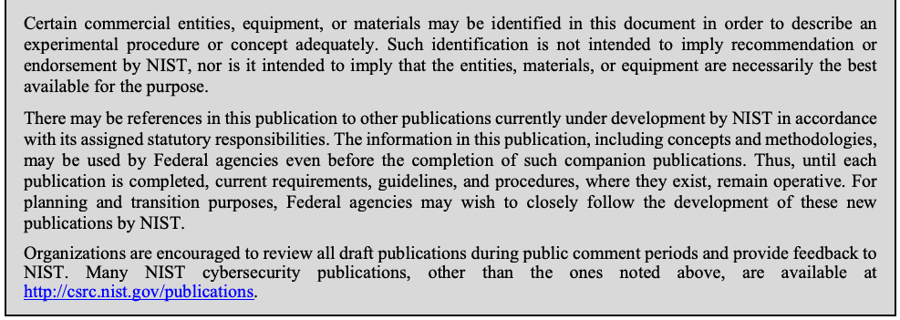
Comments on this publication may be submitted to:
本出版物に関するコメントは、次の宛先に提出できる。
National Institute of Standards and Technology Attn: Computer Security Division, Information Technology Laboratory 100 Bureau Drive (Mail Stop 8930) Gaithersburg, MD 20899-8930
National Institute of Standards and Technology 宛先：Computer Security Division, Information Technology Laboratory 100 Bureau Drive (Mail Stop 8930) Gaithersburg, MD 20899-8930
未レビュー訳All comments are subject to release under the Freedom of Information Act (FOIA).
すべてのコメントは、情報公開法（FOIA）に基づく公開の対象となる。
Reports on Computer Systems Technology
コンピュータシステム技術に関する報告書
The Information Technology Laboratory (ITL) at the National Institute of Standards and Technology (NIST) promotes the U.S. economy and public welfare by providing technical leadership for the Nation’s measurement and standards infrastructure. ITL develops tests, test methods, reference data, proof of concept implementations, and technical analyses to advance the development and productive use of information technology. ITL’s responsibilities include the development of management, administrative, technical, and physical standards and guidelines for the cost-effective security and privacy of other than national security-related information in Federal information systems. The Special Publication 800-series reports on ITL’s research, guidelines, and outreach efforts in information system security, and its collaborative activities with industry, government, and academic organizations.
National Institute of Standards and Technology（NIST）のInformation Technology Laboratory（ITL）は、国の計測および標準インフラストラクチャに技術的リーダーシップを提供することで、米国経済と公共福祉を促進している。ITLは、情報技術の発展と生産的な利用を促進するため、テスト、テスト方法、参照データ、概念実証実装、技術分析を開発する。ITLの責務には、国家安全保障関連以外の情報を扱う連邦情報システムの費用対効果の高いセキュリティおよびプライバシーのための管理、運用、技術、物理的な標準およびガイドラインの策定が含まれる。Special Publication 800シリーズは、情報システムセキュリティに関するITLの研究、ガイドライン、普及活動、および産業界、政府、学術機関との協力活動を報告する。
未レビュー訳Abstract
要約
For many organizations, their employees, contractors, business partners, vendors, and/or others use enterprise telework or remote access technologies to perform work from external locations. All components of these technologies, including organization-issued and bring your own device (BYOD) client devices, should be secured against expected threats as identified through threat models. This publication provides information on security considerations for several types of remote access solutions, and it makes recommendations for securing a variety of telework, remote access, and BYOD technologies. It also gives advice on creating related security policies.
多くの組織では、従業員、請負業者、ビジネスパートナー、ベンダーなどが、外部の場所から業務を行うため、企業向けテレワークまたはリモートアクセス技術を使用している。組織が支給するクライアントデバイスおよび私物デバイス（BYOD）を含め、これらの技術のすべての構成要素を、脅威モデルで特定された想定脅威から保護すべきである（should）。本出版物は、複数種類のリモートアクセスソリューションに関するセキュリティ上の考慮事項を示し、さまざまなテレワーク、リモートアクセス、BYOD技術を保護するための推奨事項を提示する。また、関連するセキュリティ方針の作成に関する助言も提供する。
未レビュー訳Keywords
キーワード
未レビュー訳bring your own device (BYOD); host security; information security; network security; remote access; telework
私物デバイス（BYOD）；ホストセキュリティ；情報セキュリティ；ネットワークセキュリティ；リモートアクセス；テレワーク
未レビュー訳Acknowledgments
謝辞
The authors, Murugiah Souppaya of the National Institute of Standards and Technology (NIST) and Karen Scarfone of Scarfone Cybersecurity, wish to thank their colleagues who reviewed drafts of this document and contributed to its technical content, especially Mike Bartock and Jeff Cichonski of NIST.
著者であるNational Institute of Standards and Technology（NIST）のMurugiah SouppayaおよびScarfone CybersecurityのKaren Scarfoneは、本書の草案をレビューし技術的内容に貢献した同僚、とりわけNISTのMike BartockおよびJeff Cichonskiに謝意を表する。
未レビュー訳The authors would also like to acknowledge the individuals who contributed to the original version of the publication: Simon Burson, Janet Cugini, Tim Grance (NIST), Anthony Grieco (Cisco Systems), Kurt Roemer (Citrix), Steven Sprague (Wave Systems), and representatives from the Department of Justice, the Department of Labor, the Department of State, the Federal Aviation Administration, and the Financial Management Service (U.S. Treasury). Special thanks go to Paul Hoffman of the VPN Consortium for his contributions to Revision 1 of the document.
著者らはまた、本出版物の初版に貢献したSimon Burson、Janet Cugini、Tim Grance（NIST）、Anthony Grieco（Cisco Systems）、Kurt Roemer（Citrix）、Steven Sprague（Wave Systems）、ならびに司法省、労働省、国務省、連邦航空局、財務管理局（米国財務省）の代表者に謝意を表する。本書の改訂第1版への貢献について、VPN ConsortiumのPaul Hoffmanに特別な謝意を表する。
The authors would also like to acknowledge that NIST Special Publication (SP) 800-114, User’s Guide to Securing External Devices for Telework and Remote Access, which was authored by Karen Scarfone and Murugiah Souppaya, was a major source of material for this publication.
著者らはさらに、Karen ScarfoneおよびMurugiah Souppayaが執筆したNIST Special Publication（SP）800-114『テレワークおよびリモートアクセスのための外部デバイス保護ユーザーガイド』が、本出版物の主要な資料源であったことを記しておく。
未レビュー訳Trademark Information
商標情報
未レビュー訳All registered trademarks or trademarks belong to their respective organizations.
登録商標または商標はすべて、それぞれの組織に帰属する。
未レビュー訳Table of Contents
目次
Executive Summary...................................................................................................................vi
エグゼクティブサマリー...................................................................................................................vi
未レビュー訳1. Introduction — 1
1. はじめに — 1
未レビュー訳1.1 Purpose and Scope — 1
1.1 目的および範囲 — 1
1.2 Audience — 1
1.2 対象読者 — 1
1.3 Document Structure — 1
1.3 文書の構成 — 1
2. Overview of Enterprise Telework and Remote Access Security — 2
2. 企業向けテレワークおよびリモートアクセスのセキュリティ概要 — 2
2.1 Vulnerabilities, Threats, and Security Controls — 2
2.1 脆弱性、脅威、セキュリティ管理策 — 2
未レビュー訳2.2 Remote Access Methods — 4
2.2 リモートアクセスの方式 — 4
2.2.1 Tunneling — 5
2.2.1 トンネリング — 5
2.2.2 Application Portals — 7
2.2.2 アプリケーションポータル — 7
2.2.3 Remote Desktop Access — 8
2.2.3 リモートデスクトップアクセス — 8
未レビュー訳2.2.4 Direct Application Access — 10
2.2.4 アプリケーションへの直接アクセス — 10
2.3 BYOD and Third-Party-Controlled Client Device Considerations — 11
2.3 BYODおよび第三者管理のクライアントデバイスに関する考慮事項 — 11
2.4 Summary of Key Recommendations — 11
2.4 主な推奨事項の概要 — 11
未レビュー訳3. Remote Access Solution Security — 13
3. リモートアクセスソリューションのセキュリティ — 13
3.1 Remote Access Server Security — 13
3.1 リモートアクセスサーバーのセキュリティ — 13
未レビュー訳3.2 Remote Access Server Placement — 13
3.2 リモートアクセスサーバーの配置 — 13
3.2.1 Intermediate Remote Access Servers — 14
3.2.1 中間リモートアクセスサーバー — 14
3.2.2 Endpoint Remote Access Servers — 15
3.2.2 エンドポイントリモートアクセスサーバー — 15
未レビュー訳3.3 Remote Access Authentication, Authorization, and Access Control — 15
3.3 リモートアクセスの認証、認可、およびアクセス制御 — 15
未レビュー訳3.3.1 Authentication — 16
3.3.1 認証 — 16
3.3.2 Authorization — 17
3.3.2 認可 — 17
3.3.3 Access Control for Network Communications — 18
3.3.3 ネットワーク通信のアクセス制御 — 18
3.3.4 Access Control for Applications — 19
3.3.4 アプリケーションのアクセス制御 — 19
3.4 Remote Access Client Software Security — 19
3.4 リモートアクセスクライアントソフトウェアのセキュリティ — 19
3.5 Summary of Key Recommendations — 20
3.5 主な推奨事項の概要 — 20
4. Telework Client Device Security — 21
4. テレワーク用クライアントデバイスのセキュリティ — 21
未レビュー訳4.1 Securing Telework PCs — 22
4.1 テレワーク用PCの保護 — 22
4.2 Securing Telework Mobile Devices — 24
4.2 テレワーク用モバイルデバイスの保護 — 24
未レビュー訳4.3 Protecting Data on Telework Client Devices — 25
4.3 テレワーク用クライアントデバイス上のデータの保護 — 25
未レビュー訳4.3.1 Encrypting Data at Rest — 26
4.3.1 保存データの暗号化 — 26
4.3.2 Using Virtual Machines — 26
4.3.2 仮想マシンの使用 — 26
4.3.3 Backing Up Data on Telework Devices — 27
4.3.3 テレワークデバイス上のデータのバックアップ — 27
4.4 Summary of Key Recommendations — 27
4.4 主な推奨事項の概要 — 27
5. Security Considerations for the Telework and Remote Access Life Cycle — 29
5. テレワークおよびリモートアクセスのライフサイクルに関するセキュリティ上の考慮事項 — 29
5.1 Initiation — 30
5.1 開始 — 30
5.1.1 Permitted Forms of Remote Access — 30
5.1.1 許可されるリモートアクセス形態 — 30
5.1.2 Restrictions on Telework Client Devices and Remote Access Levels — 30
5.1.2 テレワーク用クライアントデバイスおよびリモートアクセスレベルに対する制限 — 30
5.1.3 Additional User Requirements — 33
5.1.3 追加のユーザー要件 — 33
5.2 Development — 34
5.2 開発 — 34
5.3 Implementation — 35
5.3 実装 — 35
5.4 Operations and Maintenance — 36
5.4 運用および保守 — 36
5.5 Disposal — 36
5.5 廃棄 — 36
未レビュー訳5.6 Summary of Key Recommendations — 37
5.6 主な推奨事項の要約 — 37
Appendix A— NIST SP 800-53 Control Mappings — 38
付録A — NIST SP 800-53管理策との対応付け — 38
未レビュー訳Appendix B— Cybersecurity Framework Subcategory Mapping — 39
付録B — サイバーセキュリティフレームワークのサブカテゴリとの対応付け — 39
未レビュー訳Appendix C— Glossary — 40
付録C — 用語集 — 40
未レビュー訳Appendix D— Acronyms and Abbreviations — 41
付録D — 頭字語および略語 — 41
未レビュー訳Appendix E— Resources — 42
付録E — リソース — 42
未レビュー訳List of Figures and Tables
図および表の一覧
未レビュー訳Figure 2-1. Tunneling Architecture — 6
図2-1. トンネリングアーキテクチャ — 6
未レビュー訳Figure 2-2. Portal Architecture — 7
図2-2. ポータルアーキテクチャ — 7
未レビュー訳Figure 2-3. Remote Desktop Access Architecture — 9
図2-3. リモートデスクトップアクセスアーキテクチャ — 9
未レビュー訳Figure 2-4. Direct Application Access Architecture — 10
図2-4. アプリケーションへの直接アクセスアーキテクチャ — 10
未レビュー訳Table 5-1. Example of Access Tiers — 33
表5-1. アクセス階層の例 — 33
未レビュー訳Executive Summary
エグゼクティブサマリー
未レビュー訳For many organizations, their employees, contractors, business partners, vendors, and/or other users utilize enterprise telework technologies to perform work from external locations. Most of these people use remote access technologies to interface with an organization’s non-public computing resources. The nature of telework and remote access technologies—permitting access to protected resources from external networks and often externally controlled hosts as well—generally places them at higher risk than similar technologies only accessed from inside the organization, as well as increasing the risk to the internal resources made available to users through remote access.
多くの組織では、従業員、契約業者、ビジネスパートナー、ベンダー、その他の利用者が、社外の場所から業務を行うために企業向けテレワーク技術を利用している。これらの人々の多くは、リモートアクセス技術を使用して、組織の非公開コンピューティング資源に接続する。テレワークおよびリモートアクセス技術は、外部ネットワークや、しばしば外部の管理下にあるホストから保護対象資源へのアクセスを許可するため、一般に、組織内からのみアクセスされる同種の技術より高いリスクにさらされる。また、リモートアクセスを通じて利用者に提供される内部資源のリスクも高まる。
未レビュー訳All the components of telework and remote access solutions, including client devices, remote access servers, and internal resources accessed through remote access, should be secured against expected threats, as identified through threat models. Major security concerns include the lack of physical security controls, the use of unsecured networks, the connection of infected devices to internal networks, and the availability of internal resources to external hosts.
クライアントデバイス、リモートアクセスサーバー、リモートアクセス経由で利用される内部資源を含め、テレワークおよびリモートアクセスソリューションのすべてのコンポーネントは、脅威モデルで特定された想定脅威に対して保護するべきである。主なセキュリティ上の懸念には、物理的セキュリティ管理策の欠如、保護されていないネットワークの使用、感染したデバイスの内部ネットワークへの接続、内部資源を外部ホストから利用可能にすることが含まれる。
There are additional security concerns for organizations that permit the use of client devices outside the organization’s control, referred to in this publication as third-party-controlled technologies. These include contractor, business partner, and vendor-controlled devices, as well as personally owned (bring your own device, BYOD1) employee, contractor, business partner, and vendor laptops, smartphones, and tablets. Even though the organization may have agreements with employees and third parties that require their client devices to be properly secured, those agreements generally cannot be automatically enforced, so unsecured, malware-infected, and/or otherwise compromised devices may end up connected to sensitive organizational resources.
本刊行物で「第三者管理技術」と呼ぶ、組織の管理外にあるクライアントデバイスの使用を認める組織には、追加のセキュリティ上の懸念がある。これには、契約業者、ビジネスパートナー、ベンダーが管理するデバイスのほか、従業員、契約業者、ビジネスパートナー、ベンダーが個人所有するノートパソコン、スマートフォン、タブレット（BYOD1）が含まれる。組織が従業員や第三者と、クライアントデバイスを適切に保護することを求める契約を結んでいても、通常、その契約を自動的に履行させることはできない。そのため、保護されていないデバイス、マルウェアに感染したデバイス、またはその他の形で侵害されたデバイスが、機微な組織資源に接続されるおそれがある。
未レビュー訳This publication provides information on security considerations for several types of remote access solutions, and it makes recommendations for securing a variety of telework, remote access, and BYOD technologies. It also gives advice on creating related security policies. To improve the security of organizations’ telework and remote access technologies, as well as better mitigate the risks posed by BYOD and third-party-controlled technologies to enterprise networks and systems, organizations should implement the following recommendations:
本刊行物は、複数種類のリモートアクセスソリューションに関するセキュリティ上の考慮事項を示し、さまざまなテレワーク、リモートアクセス、BYOD技術を保護するための推奨事項を提示する。また、関連するセキュリティポリシーの作成についても助言する。組織のテレワークおよびリモートアクセス技術のセキュリティを高め、BYODおよび第三者管理技術が企業ネットワークとシステムにもたらすリスクをより適切に軽減するため、組織は次の推奨事項を実施すべきである。
未レビュー訳Plan telework-related security policies and controls based on the assumption that external environments contain hostile threats.
外部環境には敵対的な脅威が存在するという前提に基づいて、テレワーク関連のセキュリティポリシーおよび管理策を計画する。
An organization should assume that external facilities, networks, and devices contain hostile threats that will attempt to gain access to the organization’s data and resources. Organizations should assume that telework client devices, which are used in a variety of external locations and are particularly prone to loss or theft, will be acquired by malicious parties who will either attempt to recover sensitive data from them or leverage the devices to gain access to the enterprise network. Options for mitigating threats of loss or theft include encrypting the device’s storage, encrypting all sensitive data stored on client devices, or not storing sensitive data on client devices. For mitigating device reuse threats, the primary option is using strong authentication—preferably multi-factor—for enterprise access.
組織は、組織の管理外にある外部施設、ネットワーク、デバイスには、組織のデータや資源へのアクセスを試みる敵対的な脅威が存在すると想定すべきである。組織は、さまざまな社外の場所で使用され、紛失や盗難に遭いやすいテレワーク用クライアントデバイスが、悪意ある者の手に渡り、機微なデータの取得や、デバイスを利用した企業ネットワークへの侵入が試みられると想定すべきである。紛失や盗難の脅威を軽減する方法には、デバイスのストレージを暗号化すること、クライアントデバイスに保存される機微なデータをすべて暗号化すること、または機微なデータをクライアントデバイスに保存しないことが含まれる。デバイスの再利用に伴う脅威を軽減する主な方法は、企業へのアクセスに強固な認証、できれば多要素認証を使用することである。
未レビュー訳Organizations should also assume that communications on external networks, which are outside the organization’s control, are susceptible to eavesdropping, interception, and modification. This type of threat can be mitigated, but not eliminated, by using encryption technologies to protect the confidentiality and integrity of communications, as well as authenticating each of the endpoints to each other to verify their identities.
組織は、組織の管理外にある外部ネットワーク上の通信が、盗聴、傍受、改ざんの影響を受けやすいことも想定すべきである。この種の脅威は、通信の機密性と完全性を保護する暗号化技術を使用し、さらに各エンドポイントを相互に認証して相手の識別情報を確認することで軽減できるが、完全に排除することはできない。
未レビュー訳Another important assumption is that telework client devices will become infected with malware; possible controls for this include using antimalware technologies, using network access control solutions that verify the client’s security posture before granting access, and using a separate network at the organization’s facilities for telework client devices brought in for internal use (see the final recommendation in the Executive Summary for additional information).
もう一つの重要な前提は、テレワーク用クライアント端末がマルウェアに感染するということである。これに対して考えられる管理策には、マルウェア対策技術の使用、アクセスを許可する前にクライアントのセキュリティ状態を確認するネットワークアクセス制御ソリューションの使用、及び内部利用のために持ち込まれたテレワーク用クライアント端末向けに組織施設内で別個のネットワークを使用することが含まれる（詳しくは、エグゼクティブサマリーの最後の推奨事項を参照）。
Develop a telework security policy that defines telework, remote access, and BYOD requirements.
テレワーク、リモートアクセス及びBYODの要件を定めるテレワークセキュリティポリシーを策定する。
A telework security policy should define which forms of remote access the organization permits, which types of telework devices are permitted to use each form of remote access, and the type of access each type of teleworker is granted. It should also cover how the organization's remote access servers are administered and how policies in those servers are updated.
テレワークセキュリティポリシーでは、組織がどの形態のリモートアクセスを許可するか、各形態のリモートアクセスをどの種類のテレワーク端末に許可するか、及び各種類のテレワーカーにどの範囲のアクセスを付与するかを定めるべきである。また、組織のリモートアクセスサーバーをどのように管理するか、及びそれらのサーバー上のポリシーをどのように更新するかも規定するべきである。
As part of creating a telework security policy, an organization should make its own risk-based decisions about what levels of remote access should be permitted from which types of telework client devices. For example, an organization may choose to have tiered levels of remote access, such as allowing organization-owned personal computers (PCs) to access many resources, BYOD PCs and third-party-controlled client devices to access a limited set of resources, and BYOD smartphones and tablets to access only one or two lower-risk resources, such as webmail. Having tiered levels of remote access allows an organization to limit the risk it incurs by permitting the most-controlled devices to have the most access and the least-controlled devices to have minimal access.
テレワークセキュリティポリシーを策定する際、組織は、どの種類のテレワーク用クライアント端末からどのレベルのリモートアクセスを許可するかについて、リスクに基づいて独自に判断するべきである。例えば、組織はリモートアクセスを段階化し、組織所有のパーソナルコンピューター（PC）には多くのリソースへのアクセスを許可し、BYODのPC及び第三者管理のクライアント端末には限られたリソースへのアクセスを許可し、BYODのスマートフォン及びタブレットにはウェブメールなどリスクの低いリソースのうち1つか2つだけへのアクセスを許可することができる。リモートアクセスを段階化すれば、管理が最も行き届いた端末に最も広いアクセスを許可し、管理が最も行き届かない端末のアクセスを最小限に抑えることで、組織が負うリスクを限定できる。
未レビュー訳There are many factors that organizations should consider when setting policy regarding levels of remote access to grant; examples include the sensitivity of the telework, the level of confidence in the telework client device’s security posture, the cost associated with telework devices, the locations from which telework is performed, and compliance with mandates and other policies. For telework situations that an organization determines are particularly high-risk, an organization may choose to specify additional security requirements. For example, high-risk telework might be permitted only from organization-issued and secured telework client devices that employ multi-factor authentication and storage encryption. Organizations may also choose to reduce risk by prohibiting telework and remote access involving particular types of information, such as sensitive personally identifiable information (PII).2
組織が付与するリモートアクセスのレベルを定める際に考慮すべき要素は多い。例えば、テレワーク業務の機微性、テレワーク用クライアント端末のセキュリティ状態に対する信頼度、テレワーク端末にかかる費用、テレワークを行う場所、並びに義務付け及びその他のポリシーへの適合性が挙げられる。特に高リスクと組織が判断するテレワークについては、追加のセキュリティ要件を定めることができる。例えば、高リスクのテレワークは、多要素認証及びストレージ暗号化を使用する、組織が支給しセキュリティを確保したテレワーク用クライアント端末からのみ許可することが考えられる。また、機微な個人識別情報（PII）など、特定の種類の情報を扱うテレワーク及びリモートアクセスを禁止して、リスクを低減することもできる。2
未レビュー訳Ensure that remote access servers are secured effectively and are configured to enforce telework security policies.
リモートアクセスサーバーを効果的に保護し、テレワークセキュリティポリシーを確実に適用するよう構成する。
未レビュー訳The security of remote access servers is particularly important because they provide a way for external hosts to gain access to internal resources, as well as a secured, isolated telework environment for organization-issued, third-party-controlled, and BYOD client devices. In addition to permitting unauthorized access to enterprise resources and telework client devices, a compromised server could be used to eavesdrop on communications and manipulate them, as well as to provide a “jumping off” point for attacking other hosts within the organization. It is particularly important for organizations to ensure that remote access servers are kept fully patched and that they can only be managed from trusted hosts by authorized administrators. Organizations should also carefully consider the network placement of remote access servers; in most cases, a server should be placed at an organization’s network perimeter so that it acts as a single point of entry to the network and enforces the telework security policy before any remote access traffic or other traffic from telework client devices (such as BYOD devices using an organization’s wireless BYOD network) is permitted into the organization’s internal networks.
リモートアクセスサーバーは、外部ホストが内部リソースにアクセスする経路となると同時に、組織支給、第三者管理及びBYODのクライアント端末向けに、保護された隔離型のテレワーク環境を提供するため、特に重要である。サーバーが侵害されると、企業リソースやテレワーク用クライアント端末への未許可アクセスを許すだけでなく、通信を盗聴又は改ざんしたり、組織内の他のホストを攻撃するための「踏み台」として利用されたりするおそれがある。組織は、リモートアクセスサーバーにすべてのパッチを適用し、承認された管理者が信頼されたホストからのみ管理できる状態を維持することが特に重要である。また、リモートアクセスサーバーのネットワーク上の配置を慎重に検討するべきである。多くの場合、サーバーは組織ネットワークの境界に配置し、ネットワークへの単一の入口として機能させるべきである。そうすることで、リモートアクセスのトラフィックや、BYOD端末が組織の無線BYODネットワークを利用する場合などにテレワーク用クライアント端末から送られるその他のトラフィックを、組織の内部ネットワークに入れる前に検査し、テレワークセキュリティポリシーを適用できる。
未レビュー訳Secure organization-controlled telework client devices against common threats and maintain their security regularly.
組織が管理するテレワーク用クライアント端末を一般的な脅威から保護し、そのセキュリティを定期的に維持する。
未レビュー訳There are many threats to telework client devices, including malware and device loss or theft. Generally, telework client devices should include all the local security controls used in the organization’s secure configuration baseline for its non-telework client devices.3 Examples are applying operating system and application updates promptly, disabling unneeded services, and using antimalware software and a personal firewall. However, because telework devices are generally at greater risk in external environments than in enterprise environments, additional security controls are recommended, such as encrypting sensitive data stored on the devices, and existing security controls may need to be adjusted. For example, if a personal firewall on a telework client device has a single policy for all environments, then it is likely to be too restrictive in some situations and not restrictive enough in others. Whenever possible, organizations should use personal firewalls capable of supporting multiple policies for their telework client devices and configure the firewalls properly for the enterprise environment and an external environment, at a minimum.
テレワーク用クライアント端末には、マルウェアや端末の紛失・盗難など、多くの脅威がある。一般に、テレワーク用クライアント端末には、テレワーク以外のクライアント端末向けに組織が定めたセキュア構成ベースラインに含まれるローカルセキュリティ管理策をすべて適用するべきである。3 例えば、オペレーティングシステム及びアプリケーションを速やかに更新すること、不要なサービスを無効にすること、マルウェア対策ソフトウェア及びパーソナルファイアウォールを使用することが挙げられる。ただし、テレワーク端末は通常、企業内よりも外部環境で高いリスクにさらされるため、端末に保存する機微なデータの暗号化など、追加のセキュリティ管理策が推奨される。また、既存のセキュリティ管理策を調整する必要がある場合もある。例えば、テレワーク用クライアント端末のパーソナルファイアウォールがすべての環境に対して単一のポリシーを使用する場合、状況によっては制限が厳しすぎたり、逆に不十分になったりする可能性が高い。可能な場合、組織はテレワーク用クライアント端末に複数のポリシーを適用できるパーソナルファイアウォールを使用し、少なくとも企業環境と外部環境のそれぞれに適切な設定を行うべきである。
未レビュー訳Organizations should ensure that all types of telework client devices are secured, including PCs, smartphones, and tablets. For PCs, this includes physical security. For devices other than PCs, security capabilities and the appropriate security actions vary widely by device type and specific products, so organizations should provide guidance to device administrators and users who are responsible for securing telework mobile devices on how they should secure them.
組織は、PC、スマートフォン及びタブレットを含む、あらゆる種類のテレワーク用クライアント端末が保護されるようにするべきである。PCの場合、これには物理的なセキュリティも含まれる。PC以外の端末では、セキュリティ機能や適切なセキュリティ対策が端末の種類や製品によって大きく異なる。そのため、組織は、テレワーク用モバイル端末の保護を担う端末管理者及びユーザーに、端末をどのように保護すべきかを案内するべきである。
If external device use (e.g., BYOD, third-party controlled) is permitted within the organization’s facilities, strongly consider establishing a separate, external, dedicated network for this use.
組織施設内で外部端末（例：BYOD端末、第三者管理端末）の使用を許可する場合は、その用途のために、外部向けの専用ネットワークを別途設けることを強く検討するべきである。
Allowing personally owned and third-party-controlled client devices to be directly connected to an organization’s enterprise networks adds considerable risk if the devices are placed on the organization’s internal networks, because these devices are often not secured to the same degree as the organization’s own devices. However, this risk can largely be mitigated by setting up a separate wired or wireless network within the enterprise dedicated to these devices. This network should be external (e.g., off the organization’s demilitarized zone [DMZ]) and not grant any more access to enterprise resources than users already have through remote access. This network should be secured and monitored in a manner consistent with how remote access segments are secured and monitored.
個人所有及び第三者管理のクライアント端末を組織の企業ネットワークに直接接続すると、組織の内部ネットワークに配置された場合に大きなリスクが生じる。こうした端末は、組織所有の端末と同程度には保護されていないことが多いためである。ただし、企業ネットワーク内にこれらの端末専用の有線又は無線ネットワークを別途設けることで、このリスクは大幅に低減できる。このネットワークは外部側、例えば組織の非武装地帯（DMZ）の外側に設置し、リモートアクセスを通じてユーザーが既に利用できる範囲を超えて企業リソースへのアクセスを許可するべきではない。このネットワークは、リモートアクセス用セグメントと同等の方法で保護し、監視するべきである。
未レビュー訳1. Introduction
1. はじめに
未レビュー訳1.1 Purpose and Scope
1.1 目的及び範囲
The purpose of this document is to assist organizations in mitigating the risks associated with the enterprise technologies used for telework, such as remote access servers, telework client devices (including bring your own device [BYOD] and contractor, business partner, and vendor-controlled client devices, also known as third-party-controlled devices), and remote access communications. The document emphasizes the importance of securing sensitive information stored on telework devices and transmitted through remote access across external networks. This document provides recommendations for creating telework-related policies and for selecting, implementing, and maintaining the necessary security controls for remote access servers and clients.
本書は、リモートアクセスサーバー、テレワーク用クライアント端末（個人所有端末の持ち込み（BYOD）端末、並びに請負業者、ビジネスパートナー及びベンダーが管理するクライアント端末、すなわち第三者管理端末を含む）、及びリモートアクセス通信など、テレワークに用いられる企業向け技術に関連するリスクを組織が低減できるよう支援することを目的とする。本書では、テレワーク端末に保存される機微な情報と、外部ネットワークを経由するリモートアクセスで伝送される機微な情報を保護する重要性を強調する。また、テレワーク関連ポリシーの策定、並びにリモートアクセスサーバー及びクライアントに必要なセキュリティ管理策の選定、実装及び維持に関する推奨事項を示す。
未レビュー訳1.2 Audience
1.2 対象読者
This document is primarily intended for security, system, and network engineers and administrators, as well as computer security program managers, who are responsible for the technical aspects of preparing, operating, and securing remote access solutions and client devices. Portions of the document are also intended for higher-level management, such as the individuals responsible for creating telework policies. The material in this document is technically oriented, and it is assumed that readers have at least a basic understanding of remote access, networking, network security, and system security.
本書は主に、リモートアクセスソリューション及びクライアント端末の準備、運用及び保護に関する技術面を担当するセキュリティ、システム及びネットワークのエンジニアや管理者、並びにコンピューターセキュリティプログラムの管理者を対象とする。また、テレワークポリシーの策定責任者など、上級管理職も本書の一部を対象とする。本書は技術的な内容を中心としており、読者がリモートアクセス、ネットワーク、ネットワークセキュリティ及びシステムセキュリティについて少なくとも基本的な理解を持つことを前提とする。
未レビュー訳1.3 Document Structure
1.3 文書の構成
The remainder of this document is organized into the following sections:
本書の残りの部分は、次の各節で構成される。
Section 2 provides an overview of enterprise telework and remote access security. It discusses general vulnerabilities and threats against telework and remote access solutions. It also describes the high-level architectures of common remote access methods and the security characteristics of each architecture. Finally, it discusses concerns particular to BYOD use of organization networks.
第2章では、企業におけるテレワーク及びリモートアクセスのセキュリティ概要を説明する。テレワーク及びリモートアクセスソリューションに対する一般的な脆弱性と脅威を取り上げる。また、一般的なリモートアクセス方式の高レベルなアーキテクチャと、それぞれのアーキテクチャのセキュリティ特性を説明する。最後に、組織ネットワークでBYODを使用する際に特有の懸念事項を取り上げる。
未レビュー訳 Section 3 presents recommendations for securing remote access solutions, including server security, server placement, and client software security. It also covers authentication, authorization, and access control for remote access solutions.
第3章では、サーバーのセキュリティ、サーバーの配置及びクライアントソフトウェアのセキュリティを含め、リモートアクセスソリューションを保護するための推奨事項を示す。また、リモートアクセスソリューションにおける認証、認可及びアクセス制御も扱う。
未レビュー訳 Section 4 offers recommendations for securing telework client devices and protecting data on them.
セクション4では、テレワーク用クライアントデバイスの保護と、そのデバイス上のデータ保護に関する推奨事項を示す。
未レビュー訳 Section 5 discusses security throughout the telework and remote access life cycle. Examples of topics addressed in this section include telework security policy creation, design and implementation considerations, and operational processes that are particularly helpful for security.
セクション5では、テレワークおよびリモートアクセスのライフサイクル全体にわたるセキュリティを扱う。このセクションでは、テレワークのセキュリティポリシーの作成、設計と実装に関する考慮事項、セキュリティに特に役立つ運用プロセスなどを取り上げる。
未レビュー訳The document also contains appendices with supporting material:
本書には、補足資料を収録した付録もある。
Appendices A and B contain mappings to NIST Special Publication (SP) 800-53 controls and Cybersecurity Framework subcategories, respectively.
付録AおよびBでは、それぞれNIST特別刊行物（SP）800-53の管理策およびサイバーセキュリティフレームワークのサブカテゴリとの対応付けを示す。
未レビュー訳 Appendices C and D contain a glossary and an acronym list, respectively.
付録CおよびDには、それぞれ用語集および頭字語一覧を収録している。
未レビュー訳 Appendix E lists resources that may be useful for gaining a better understanding of telework and remote access security.
付録Eには、テレワークおよびリモートアクセスのセキュリティに関する理解を深めるうえで役立つ可能性のあるリソースを掲載している。
未レビュー訳2. Overview of Enterprise Telework and Remote Access Security
2. 企業テレワークおよびリモートアクセスのセキュリティ概要
未レビュー訳Many people telework (also known as telecommuting), which is the ability for an organization’s employees, contractors, business partners, vendors, and other users to perform work from locations other than the organization’s facilities. Teleworkers use various client devices, such as desktop and laptop computers, smartphones, and tablets, to read and send email, access websites, review and edit documents, and perform many other tasks. These client devices may be controlled by the organization, by third parties (the organization’s contractors, business partners, or vendors), or by the users themselves (e.g., BYOD). Most teleworkers use remote access, which is the ability for an organization’s users to access its non-public computing resources from external locations other than the organization’s facilities.
多くの人がテレワーク（在宅勤務とも呼ばれる）を行っている。これは、組織の従業員、契約業者、ビジネスパートナー、ベンダー、その他の利用者が、組織の施設以外の場所で業務を行えることを指す。テレワーカーは、デスクトップやノートパソコン、スマートフォン、タブレットなどのさまざまなクライアントデバイスを使い、電子メールの閲覧・送信、ウェブサイトへのアクセス、文書の確認・編集など、多様な作業を行う。これらのクライアントデバイスは、組織、第三者（組織の契約業者、ビジネスパートナー、ベンダー）、または利用者自身（例：BYOD）が管理する場合がある。ほとんどのテレワーカーはリモートアクセスを利用する。これは、組織の利用者が、組織の施設以外の外部の場所から、組織の非公開コンピューティング資源にアクセスできることを指す。
未レビュー訳This section of the publication provides an overview of security concerns for enterprise telework and remote access technologies. It explains the primary vulnerabilities and threats specific to telework and remote access security, and recommends mitigation strategies for those threats. It also discusses the most commonly used types of remote access methods, examines their major vulnerabilities, and recommends security controls to mitigate threats. Finally, it briefly discusses special considerations related to the use of BYOD and third-party-controlled client devices on an organization’s own networks.
本書のこの節では、企業テレワークおよびリモートアクセス技術に関するセキュリティ上の懸念を概説する。テレワークおよびリモートアクセスのセキュリティに固有の主な脆弱性と脅威を説明し、それらへの対策を推奨する。また、最も一般的に使用されるリモートアクセス方式を取り上げ、それぞれの主な脆弱性を検討し、脅威を軽減するセキュリティ管理策を推奨する。最後に、組織自身のネットワークでBYODおよび第三者管理のクライアントデバイスを使用する際の特別な考慮事項を簡潔に説明する。
2.1 Vulnerabilities, Threats, and Security Controls
2.1 脆弱性、脅威、セキュリティ管理策
未レビュー訳Telework and remote access solutions typically need to support several security objectives. These can be accomplished through a combination of security features built into the remote access solutions and additional security controls applied to the telework client devices and other components of the remote access solution. The most common security objectives for telework and remote access technologies are as follows:
テレワークおよびリモートアクセスソリューションは通常、複数のセキュリティ目標を支援する必要がある。これらの目標は、リモートアクセスソリューションに組み込まれたセキュリティ機能と、テレワーク用クライアントデバイスおよびリモートアクセスソリューションの他のコンポーネントに適用する追加のセキュリティ管理策を組み合わせて達成できる。テレワークおよびリモートアクセス技術における最も一般的なセキュリティ目標は、次のとおりである。
Confidentiality—ensure that remote access communications and stored user data cannot be read by unauthorized parties;
機密性 — リモートアクセス通信および保存された利用者データを、権限のない者が読み取れないようにすること;
未レビュー訳 Integrity—detect any intentional or unintentional changes to remote access communications that occur in transit; and
完全性 — 転送中に発生するリモートアクセス通信への意図的または偶発的な変更を検出すること; および
未レビュー訳 Availability—ensure that users can access resources through remote access whenever needed.
可用性 — 利用者が必要なときに、リモートアクセスを通じて資源にアクセスできるようにすること。
未レビュー訳To achieve these objectives, all of the components of telework and remote access solutions, including client devices, remote access servers, and internal servers accessed through remote access, should be secured against a variety of threats. General security recommendations for all IT devices are provided in NIST Special Publication (SP) 800-53, Security and Privacy Controls for Federal Information Systems and Organizations.4 Specific recommendations for securing telework and remote access technologies are presented in this publication and are intended to supplement the controls specified in SP 800-53.
これらの目標を達成するため、クライアントデバイス、リモートアクセスサーバー、リモートアクセス経由でアクセスする内部サーバーを含め、テレワークおよびリモートアクセスソリューションのすべてのコンポーネントを、さまざまな脅威から保護すべきである。すべてのITデバイスに対する一般的なセキュリティ推奨事項は、NIST特別刊行物（SP）800-53『連邦情報システムおよび組織のセキュリティとプライバシー管理策』に示されている。テレワークおよびリモートアクセス技術の保護に関する具体的な推奨事項は本刊行物に示されており、SP 800-53で規定されている管理策を補完するものである。
未レビュー訳Telework and remote access technologies often need additional protection because their nature generally places them at higher exposure to external threats than technologies only accessed from inside the organization. Before designing and deploying telework and remote access solutions, organizations should develop system threat models5 for the remote access servers and the resources that are accessed through remote access. Threat modeling involves identifying resources of interest and the feasible threats, vulnerabilities, and security controls related to these resources, then quantifying the likelihood of successful attacks and their impacts, and finally analyzing this information to determine where security controls need to be improved or added. Threat modeling helps organizations to identify security requirements and to design the remote access solution to incorporate the controls needed to meet the security requirements. Major security concerns for these technologies that would be included in most telework threat models are as follows:
テレワークおよびリモートアクセス技術は、組織内からのみアクセスされる技術よりも外部の脅威にさらされやすいため、追加の保護を必要とすることがよくある。テレワークおよびリモートアクセスソリューションを設計・導入する前に、組織はリモートアクセスサーバーと、リモートアクセスを通じて利用する資源について、システム脅威モデル5を作成すべきである。脅威モデリングでは、対象となる資源と、それらに関係する実現可能な脅威、脆弱性、セキュリティ管理策を特定し、攻撃が成功する可能性とその影響を定量化したうえで、セキュリティ管理策を改善または追加すべき箇所を判断するために情報を分析する。脅威モデリングにより、組織はセキュリティ要件を特定し、それらを満たす管理策を組み込んだリモートアクセスソリューションを設計できる。これらの技術に関する主なセキュリティ上の懸念のうち、ほとんどのテレワーク脅威モデルに含まれるものは次のとおりである。
未レビュー訳 Lack of Physical Security Controls. Telework client devices are used in a variety of locations outside the organization’s control, such as users’ homes, coffee shops, hotels, and conferences. The mobile nature of these devices makes them more likely to be lost or stolen, which places the data on the devices at increased risk of compromise. When planning telework security policies and controls, organizations should assume that client devices will be acquired by malicious parties who will either attempt to recover sensitive data from the devices or leverage the devices to gain access to the enterprise network.
物理的セキュリティ管理策の欠如。テレワーク用クライアントデバイスは、利用者の自宅、コーヒーショップ、ホテル、会議場など、組織の管理外にあるさまざまな場所で使用される。デバイスは持ち運ばれるため、紛失や盗難に遭いやすく、デバイス上のデータが侵害されるリスクが高まる。テレワークのセキュリティポリシーおよび管理策を計画する際、組織は、悪意ある者がクライアントデバイスを入手し、そこから機微なデータを取得したり、デバイスを利用して企業ネットワークに侵入したりしようとすると想定すべきである。
未レビュー訳The primary mitigation strategies for device loss or theft are to encrypt the client device’s storage or just the sensitive data itself so that it cannot be recovered from the device by unauthorized parties, or to not store sensitive data on client devices. Even if a client device is always in the possession of its owner, there are other physical security risks, such as an attacker looking over a user’s shoulder at a coffee shop and viewing sensitive data on the client device’s screen. Organizations can mitigate threats involving device reuse, such as an attacker gaining remote control over a device or impersonating a user, by using strong authentication, preferably multi-factor authentication, for enterprise access.
デバイスの紛失や盗難に対する主な対策は、クライアントデバイスのストレージ、または機微なデータだけを暗号化して権限のない者がデバイスから復元できないようにすること、あるいはクライアントデバイスに機微なデータを保存しないことである。クライアントデバイスを所有者が常に携帯している場合でも、コーヒーショップで攻撃者が利用者の肩越しに画面をのぞき込み、機微なデータを見るなど、他の物理的セキュリティリスクがある。攻撃者によるデバイスの遠隔操作や利用者へのなりすましなど、デバイスの再利用に関する脅威は、企業へのアクセスに強固な認証、できれば多要素認証を使用することで軽減できる。
未レビュー訳 Unsecured Networks. Because nearly all remote access occurs over the Internet, organizations normally have no control over the security of the external networks used by telework clients. Communications systems used for remote access include broadband networks such as cable, and wireless mechanisms such as IEEE 802.11 and cellular networks.6 These communications systems are susceptible to eavesdropping, which places sensitive information transmitted during remote access at risk of compromise. Man-in-the-middle (MITM) attacks may also be performed to intercept and modify communications.
保護されていないネットワーク。リモートアクセスのほぼすべてがインターネット経由で行われるため、組織は通常、テレワーククライアントが使用する外部ネットワークのセキュリティを管理できない。リモートアクセスで使われる通信システムには、ケーブルなどのブロードバンドネットワークや、IEEE 802.11および携帯電話ネットワークなどの無線方式がある6。これらの通信システムは盗聴の影響を受けやすく、リモートアクセス中に送信される機微な情報が侵害されるリスクがある。また、中間者（MITM）攻撃により通信が傍受・改ざんされる可能性もある。
未レビュー訳Organizations should plan their remote access security on the assumption that the networks between the telework client device and the organization cannot be trusted. Risk from use of unsecured networks can be mitigated, but not eliminated, by using encryption technologies to protect the confidentiality and integrity of communications, as well as using mutual authentication mechanisms to verify the identities of both endpoints.
組織は、テレワーク用クライアントデバイスと組織の間にあるネットワークを信頼できないという前提で、リモートアクセスのセキュリティを計画するべきである。保護されていないネットワークの使用によるリスクは、通信の機密性と完全性を保護する暗号化技術、および双方のエンドポイントの識別情報を確認する相互認証機構を使用することで軽減できるが、完全に排除することはできない。
Infected Devices on Internal Networks. Telework client devices, particularly BYOD and third-party-controlled laptops, are often used on external networks and then brought into the organization and attached directly to the organization’s internal networks. An attacker with physical access to a client device may install malware on the device to gather data from it and from networks and systems that it connects to. If a client device is infected with malware, this malware may spread throughout the organization once the client device is connected to the internal network. Organizations should assume that client devices will become infected and plan their security controls accordingly.
内部ネットワーク上の感染デバイス。テレワーク用クライアントデバイス、特にBYODや第三者管理のノートパソコンは、外部ネットワークで使用された後、組織内に持ち込まれて内部ネットワークに直接接続されることがよくある。クライアントデバイスに物理的にアクセスできる攻撃者は、そのデバイスや接続先のネットワークおよびシステムからデータを収集するマルウェアをインストールする可能性がある。クライアントデバイスがマルウェアに感染している場合、内部ネットワークに接続された後、組織全体にマルウェアが拡散するおそれがある。組織は、クライアントデバイスが感染すると想定し、それに応じてセキュリティ管理策を計画すべきである。
未レビュー訳In addition to mandating use of appropriate antimalware technologies, such as antivirus software on laptops, organizations should consider the use of network access control (NAC) solutions that verify the security posture of a client device before allowing it to use an internal network. Organizations should also consider using a separate network for all external client devices, including BYOD and third-party-controlled devices, instead of permitting them to directly connect to the internal network. Section 4 contains additional recommendations and suggestions for improving client device security.
適切なマルウェア対策技術（ノートPCのウイルス対策ソフトウェアなど）の使用を義務付けることに加え、組織は、内部ネットワークの使用を許可する前にクライアント端末のセキュリティ状態を検証するネットワークアクセス制御（NAC）ソリューションの使用を検討するべきである。また、BYOD端末及び第三者管理端末を含む、すべての外部クライアント端末を内部ネットワークに直接接続させるのではなく、それらの端末専用の別ネットワークを使用することも検討するべきである。クライアント端末のセキュリティを改善するための追加の推奨事項及び提案については、第4節を参照。
External Access to Internal Resources. Remote access, including access from BYOD and third-party-controlled client devices attached to an organization’s wireless BYOD networks, provides external hosts with access to internal resources, such as servers. If these internal resources were not previously accessible from external networks, making them available via remote access will expose them to new threats, particularly from untrusted client devices and networks, and significantly increase the likelihood that they will be compromised. Each form of remote access that can be used to access an internal resource increases the risk of that resource being compromised.
内部リソースへの外部アクセス。BYOD端末及び第三者管理のクライアント端末が組織の無線BYODネットワークに接続している場合を含め、リモートアクセスによって外部ホストはサーバーなどの内部リソースにアクセスできる。こうした内部リソースが以前は外部ネットワークからアクセスできなかった場合、リモートアクセスを通じて利用可能にすることで、新たな脅威、特に信頼できないクライアント端末やネットワークからの脅威にさらされ、侵害される可能性が大幅に高まる。内部リソースにアクセスするために利用可能なリモートアクセス方式が増えるたびに、そのリソースが侵害されるリスクも高まる。
未レビュー訳Organizations should carefully consider the balance between the benefits of providing remote access to additional resources and the potential impact of a compromise of those resources. Organizations should ensure that any internal resources they choose to make available through remote access are hardened appropriately against external threats7 and that access to the resources is limited to the minimum necessary through firewalling and other access control mechanisms.
組織は、追加のリソースにリモートアクセスを提供する利点と、それらのリソースが侵害された場合の潜在的な影響とのバランスを慎重に検討するべきである。リモートアクセスを通じて利用可能にすることを選択した内部リソースは、外部の脅威に対して適切に堅牢化されていることを確認し7、ファイアウォールその他のアクセス制御メカニズムを用いて、リソースへのアクセスを必要最小限に制限するべきである。
未レビュー訳See Section 2.3 for information on security concerns specific to BYOD and third-party-controlled client devices.
BYOD及び第三者管理のクライアント端末に特有のセキュリティ上の懸念については、第2.3節を参照。
Section 2.2 describes remote access technologies and discusses security considerations for each, focusing on the elements described above.
第2.2節では、リモートアクセス技術について説明し、前述の要素に焦点を当てながら、それぞれのセキュリティ上の考慮事項を論じる。
2.2 Remote Access Methods
2.2 リモートアクセス方式
Organizations have many options for providing remote access to their computing resources. As previously mentioned, remote access methods can also be used to enable access to internal resources for BYOD and third-party-controlled client devices attached to an organization’s wireless BYOD networks. For the purposes of this publication, the remote access methods most commonly used for teleworkers have been divided into four categories based on their high-level architectures: tunneling, portals, remote desktop access, and direct application access. The remote access methods in all four categories have some features in common:
組織がコンピューティングリソースへのリモートアクセスを提供する方法は多数ある。前述のとおり、リモートアクセス方式は、組織の無線BYODネットワークに接続したBYOD端末及び第三者管理のクライアント端末から内部リソースへのアクセスを可能にするためにも利用できる。本書では、テレワーカーが最もよく利用するリモートアクセス方式を、高レベルのアーキテクチャに基づいて、トンネリング、ポータル、リモートデスクトップアクセス、及びアプリケーションへの直接アクセスの4つのカテゴリーに分類する。4つのカテゴリーすべてのリモートアクセス方式には、共通する特徴がある。
未レビュー訳 They are all dependent on the physical security of the client devices.
いずれの方式も、クライアント端末の物理的セキュリティに依存する。
未レビュー訳 They can use multiple types of server and user authentication mechanisms. This flexibility allows some remote access methods to work with an organization’s existing authentication mechanisms, such as passwords or certificates. Some remote access methods have standardized authentication mechanisms, while others use implementation-specific mechanisms.
いずれの方式も、複数種類のサーバー認証及びユーザー認証のメカニズムを使用できる。この柔軟性により、パスワードや証明書など、組織が既に使用している認証メカニズムを一部のリモートアクセス方式で利用できる。一部の方式では標準化された認証メカニズムを使用する一方、実装ごとに異なるメカニズムを使用する方式もある。
未レビュー訳 They can use cryptography to protect the data flowing between the telework client device and the organization from being viewed by others. This cryptographic protection is inherent in VPNs and cryptographic tunneling in general, and it is an option in most remote desktop access and direct application access systems.
いずれの方式も、暗号技術を用いて、テレワーク用クライアント端末と組織との間を流れるデータが第三者に閲覧されないよう保護できる。この暗号保護は、VPN及び一般的な暗号トンネリングに本来備わっており、ほとんどのリモートデスクトップアクセスシステムやアプリケーション直接アクセスシステムでも選択できる。
未レビュー訳 They can allow teleworkers to store data on their client devices. For example, most tunnel, portal, and remote desktop access systems offer features for copying files from computers inside the organization to the teleworker's client device. This allows the teleworker to work with the data locally, such as in a locally installed word processor. Some applications that can be reached through direct application access also allow transmitting files to the teleworker. Data may also be stored on client devices inadvertently, such as through operating system page files or web browser caches. It is important that all data sent to the teleworker through remote access be covered by the organization's data distribution and data retention policies.
テレワーカーがクライアント端末にデータを保存できる方式もある。例えば、ほとんどのトンネル、ポータル及びリモートデスクトップアクセスシステムには、組織内のコンピューターからテレワーカーのクライアント端末へファイルをコピーする機能がある。これにより、テレワーカーは、端末にインストールしたワープロソフトなどを使ってデータをローカルで扱える。アプリケーションへの直接アクセスを通じて利用できる一部のアプリケーションでも、テレワーカーへのファイル転送が可能である。オペレーティングシステムのページファイルやウェブブラウザーのキャッシュなどを通じて、意図せずクライアント端末にデータが保存される場合もある。リモートアクセスを通じてテレワーカーに送られるすべてのデータには、組織のデータ配布ポリシー及びデータ保持ポリシーを適用することが重要である。
未レビュー訳Sections 3 and 4 provide more details on remote access authentication, communications encryption, and client data security.
第3章及び第4章では、リモートアクセスの認証、通信の暗号化、並びにクライアントデータのセキュリティについて詳しく説明する。
未レビュー訳Additional information on the four categories of remote access methods is provided below. When planning a remote access solution, organizations should carefully consider the security implications of the remote access methods in each category, in addition to how well each method may meet operational requirements.
4つのリモートアクセス方式のカテゴリーについて、以下で詳しく説明する。リモートアクセスソリューションを計画する際、組織は、各方式が運用上の要件をどの程度満たすかに加え、それぞれのカテゴリーの方式がもたらすセキュリティ上の影響を慎重に検討するべきである。
The figures in the following sections show some of the operational and security properties of the four categories of remote access methods.
以下の各節の図は、4つのリモートアクセス方式のカテゴリーについて、運用面及びセキュリティ面の特性を示す。
The flared pipe is the cryptographically-protected communications channel that originates with the teleworker’s device.
末広がりの管は、テレワーカーの端末から始まる、暗号保護された通信チャネルを表す。
未レビュー訳 The arrow and the application software labels indicate the flow of communications between the application client and server software.
矢印及びアプリケーションソフトウェアのラベルは、アプリケーションクライアントソフトウェアとアプリケーションサーバーソフトウェアの間の通信の流れを示す。
未レビュー訳 The dotted vertical line shows the perimeter of the organization’s network. Everything to the left of the dotted line represents the Internet and/or the organization’s external wireless BYOD networks, while to the right of the dotted line is the internal network.
点線の垂直線は、組織ネットワークの境界を示す。点線の左側はすべてインターネット及び／又は組織の外部無線BYODネットワークを表し、右側は内部ネットワークを表す。
未レビュー訳2.2.1 Tunneling
2.2.1 トンネリング
Many remote access methods offer a secure communications tunnel through which information can be transmitted between networks, including public networks such as the Internet. Tunnels are typically established through virtual private network (VPN) technologies. Once a VPN tunnel has been established between a teleworker’s client device and the organization’s VPN gateway, the teleworker can access many of the organization’s computing resources through the tunnel. To use a VPN, users must either have the appropriate VPN software on their client devices or be on a network that has a VPN gateway system on it. In Figure 2-1, a VPN client is installed on each of the client devices, and there is a single VPN gateway that runs the VPN server software. The pipe represents a secure remote access connection (tunnel) between a client device and the VPN gateway. Through this tunnel, application client software (e.g., email client, word processor, web browser, database client) installed on the client device communicates with application server software residing on servers within the organization.8 The VPN gateway can take care of user authentication, access control (at the host, service, and application levels), and other security functions for teleworkers.
多くのリモートアクセス方式では、インターネットなどの公衆ネットワークを含むネットワーク間で情報を伝送するための、安全な通信トンネルを提供する。トンネルは通常、仮想プライベートネットワーク（VPN）技術によって確立される。テレワーカーのクライアント端末と組織のVPNゲートウェイとの間にVPNトンネルが確立されると、テレワーカーはそのトンネルを通じて組織の多くのコンピューティングリソースにアクセスできる。VPNを使用するには、ユーザーのクライアント端末に適切なVPNソフトウェアがインストールされているか、VPNゲートウェイシステムが設置されたネットワークに接続している必要がある。図2-1では、各クライアント端末にVPNクライアントがインストールされ、VPNサーバーソフトウェアを実行するVPNゲートウェイが1台設置されている。管は、クライアント端末とVPNゲートウェイの間の安全なリモートアクセス接続（トンネル）を表す。このトンネルを通じて、クライアント端末にインストールされたアプリケーションクライアントソフトウェア（例：電子メールクライアント、ワープロソフト、ウェブブラウザー、データベースクライアント）が、組織内のサーバーにあるアプリケーションサーバーソフトウェアと通信する。8 VPNゲートウェイは、テレワーカーのユーザー認証、アクセス制御（ホスト、サービス及びアプリケーションの各レベル）、その他のセキュリティ機能を担うことができる。
未レビュー訳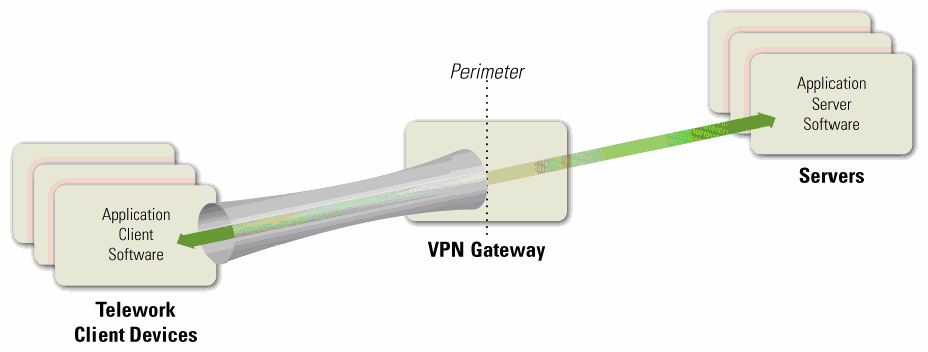
テレワーククライアント端末上のアプリケーションクライアントソフトウェアが、VPNゲートウェイを介して境界を越え、サーバー上のアプリケーションサーバーソフトウェアにアクセスする構成図。
Figure 2-1. Tunneling Architecture
図2-1. トンネリングのアーキテクチャ
未レビュー訳Tunnels use cryptography to protect the confidentiality and integrity of the transmitted information between the client device and the VPN gateway. Tunnels can also authenticate users, provide access control (such as restricting which protocols may be transmitted or which internal hosts may be reached through remote access), and perform other security functions. Although remote access methods based on tunneling protect the communications between the client device and the VPN gateway, they do not provide any protection for the communications between the VPN gateway and internal resources. Also, in tunneling solutions, the application client software and data at rest resides on the client device, so they are not protected by the tunneling solution and should be protected by other means.
トンネルは暗号技術を使用して、クライアント端末とVPNゲートウェイの間で伝送される情報の機密性及び完全性を保護する。トンネルは、ユーザーの認証、アクセス制御（伝送を許可するプロトコルやリモートアクセスで到達できる内部ホストの制限など）、その他のセキュリティ機能も提供できる。トンネリングに基づくリモートアクセス方式は、クライアント端末とVPNゲートウェイの間の通信を保護するが、VPNゲートウェイと内部リソースの間の通信は保護しない。また、トンネリングソリューションでは、アプリケーションクライアントソフトウェア及び保存データはクライアント端末上にあるため、トンネリングソリューションによる保護の対象外であり、ほかの手段で保護するべきである。
未レビュー訳The types of VPNs most commonly used for teleworkers are Internet Protocol Security (IPsec) and Secure Sockets Layer (SSL)9 tunnels.10 Tunneling may also be achieved by using Secure Shell (SSH), although this is less commonly used and is often considered more difficult to configure and maintain than IPsec or SSL tunnel VPNs. All three forms of tunneling mentioned in this section can protect many protocols at once. More information on the tunneling protocols is available from NIST SP 800-77, Guide to IPsec VPNs,11 NIST SP 800-113, Guide to SSL VPNs,12 and NIST Internal Report (IR) 7966, Security of Interactive and Automated Access Management Using Secure Shell (SSH).13
テレワーカーが最もよく使用するVPNは、インターネットプロトコルセキュリティ（IPsec）トンネル及びセキュアソケットレイヤー（SSL）トンネル9である。10 セキュアシェル（SSH）を使用してトンネリングを実現することもできるが、これはあまり一般的ではなく、IPsec又はSSLのトンネルVPNよりも構成及び保守が難しいとされることが多い。本節で述べた3種類のトンネリングは、いずれも一度に多くのプロトコルを保護できる。トンネリングプロトコルの詳細については、NIST SP 800-77, Guide to IPsec VPNs,11、NIST SP 800-113, Guide to SSL VPNs,12、及びNIST Internal Report（IR）7966, Security of Interactive and Automated Access Management Using Secure Shell (SSH).13を参照。
未レビュー訳Many communication encryption protocols can be expanded into tunneling protocols in the same way that TLS is used for SSL VPNs. For example, some systems use the SSH protocol to create tunnels. In general, standardized tunneling protocols can be configured to have the same cryptographic strength and to use the same (or functionally similar) mechanism for authenticating the two parties to each other. Different tunneling systems can tunnel various protocols; for example, IPsec has standardized extensions that allow it to tunnel Layer 2 protocols such as the Point-to-Point Protocol (PPP) and Multiprotocol Label Switching (MPLS). In general, almost any communication encryption protocol can be made to tunnel almost any layer.
多くの通信暗号化プロトコルは、SSL VPNでTLSを使用する場合と同様に、トンネリングプロトコルへ拡張できる。例えば、一部のシステムではSSHプロトコルを使用してトンネルを作成する。一般に、標準化されたトンネリングプロトコルは、同等の暗号強度を持たせ、両者が相互に認証するために同一又は機能的に類似したメカニズムを使用するよう構成できる。トンネリングシステムによって、さまざまなプロトコルをトンネル化できる。例えば、IPsecには、ポイントツーポイントプロトコル（PPP）やマルチプロトコルラベルスイッチング（MPLS）などのレイヤー2プロトコルをトンネル化できる標準拡張がある。一般に、ほぼあらゆる通信暗号化プロトコルで、ほぼあらゆるレイヤーをトンネル化できる。
未レビュー訳The VPN gateway can control access to the parts of the network and the types of access that the teleworker gets after authentication. For example, a VPN might allow a user to only have access to one subnet, or to only run particular applications on certain servers on the protected network. In this way, even though the cryptographic tunnel ends at the VPN gateway, the gateway can add additional routing to the teleworker's traffic to only allow access to some parts of the internal network.
VPNゲートウェイは、認証後にテレワーカーがアクセスできるネットワークの範囲及びアクセスの種類を制御できる。例えば、VPNによって、ユーザーのアクセス先を1つのサブネットだけに制限したり、保護されたネットワーク内の特定のサーバー上で特定のアプリケーションだけを実行できるようにしたりできる。このように、暗号トンネルの終端がVPNゲートウェイであっても、ゲートウェイはテレワーカーのトラフィックに追加のルーティングを適用し、内部ネットワークの一部だけへのアクセスを許可できる。
未レビュー訳VPNs are usually established and managed by VPN gateway devices owned and managed by the organization being protected. In some cases, organizations outsource their VPNs to trusted third parties. Such a third party might simply manage the VPN gateway that is owned by the organization, but other third parties offer services where they own and control the VPN gateway. In the latter case, the organization should evaluate the security of the proposed solution and ensure it will support the organization’s security policy.
VPNは通常、保護対象の組織が所有し管理するVPNゲートウェイデバイスによって確立及び管理される。組織がVPNを信頼できる第三者に委託する場合もある。第三者が組織所有のVPNゲートウェイを管理するだけの場合もあれば、VPNゲートウェイを所有し制御するサービスを提供する第三者もある。後者の場合、組織は提案されたソリューションのセキュリティを評価し、それが組織のセキュリティポリシーをサポートすることを確認するべきである。
2.2.2 Application Portals
2.2.2 アプリケーションポータル
Another category of remote access solutions involves portals. A portal is a server that offers access to one or more applications through a single centralized interface. A teleworker uses a portal client on a telework client device to access the portal. Most portals are web-based—for them, the portal client is a regular web browser. Figure 2-2 shows the basic portal solution architecture. The application client software is installed on the portal server, and it communicates with application server software on servers within the organization. The portal server communicates securely with the portal client as needed; the exact nature of this depends on the type of portal solution in use, as discussed below.
リモートアクセスソリューションには、ポータルを利用するカテゴリーもある。ポータルとは、単一の集中型インターフェースを通じて1つ以上のアプリケーションへのアクセスを提供するサーバーである。テレワーカーは、テレワーク用クライアント端末上のポータルクライアントを使用してポータルにアクセスする。ほとんどのポータルはウェブベースであり、その場合、ポータルクライアントには通常のウェブブラウザーを使用する。図2-2に、基本的なポータルソリューションのアーキテクチャを示す。アプリケーションクライアントソフトウェアはポータルサーバーにインストールされ、組織内のサーバーにあるアプリケーションサーバーソフトウェアと通信する。ポータルサーバーは必要に応じてポータルクライアントと安全に通信するが、その具体的な方式は、以下で説明するように、使用するポータルソリューションの種類によって異なる。
未レビュー訳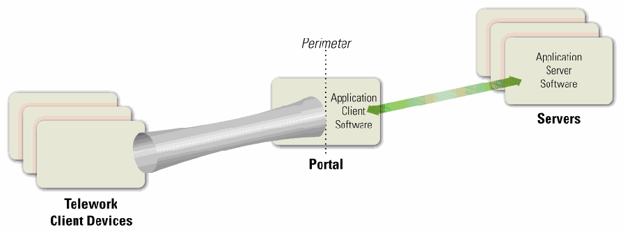
テレワーククライアント端末がポータルのアプリケーションクライアントソフトウェアを介して、サーバー上のアプリケーションサーバーソフトウェアへ接続する構成図。境界をまたぐトンネルで示す。
Figure 2-2. Portal Architecture
図2-2. ポータルアーキテクチャ
未レビュー訳In terms of security, portals have most of the same characteristics as tunnels: portals protect information between client devices and the portal, and they can provide authentication, access control, and other security services. However, there is an important difference between tunnels and portals—the location of the application client software and associated data. In a tunnel, the software and data are on the client device; in a portal, they are on the portal server. A portal server transfers data to the client device as rendered desktop screen images or web pages, but data is typically stored on the client device much more temporarily than data for a tunneled solution is. (However, portals can be configured to allow clients to download content from the portal and store it on the client device or other locations outside the secure remote access environment.) Having the application client software centralized gives an organization more control over how the software and data is secured as opposed to more distributed remote access solutions. Portals limit the access a teleworker has to particular application clients running on the portal itself. Those applications further limit the access the teleworker has to the servers inside the network.
セキュリティ面では、ポータルはトンネルとほぼ同じ特性を持つ。ポータルはクライアント端末とポータルの間の情報を保護し、認証、アクセス制御その他のセキュリティサービスを提供できる。ただし、トンネルとポータルには、アプリケーションクライアントソフトウェア及び関連データの所在という重要な違いがある。トンネルではソフトウェアとデータはクライアント端末上にあるが、ポータルではポータルサーバー上にある。ポータルサーバーは、デスクトップ画面の描画画像又はウェブページとしてデータをクライアント端末に転送するが、ポータル方式のデータがクライアント端末に保存される期間は、通常、トンネル方式の場合よりもはるかに短い。（ただし、ポータルを構成して、クライアントがポータルからコンテンツをダウンロードし、クライアント端末又は安全なリモートアクセス環境外の別の場所に保存できるようにすることもできる。）アプリケーションクライアントソフトウェアを一元化することで、より分散型のリモートアクセスソリューションと比べ、ソフトウェア及びデータの保護方法を組織がより強く管理できる。ポータルは、テレワーカーがポータル上で実行される特定のアプリケーションクライアントにのみアクセスできるよう制限する。さらに、それらのアプリケーションが、テレワーカーのネットワーク内サーバーへのアクセスを制限する。
未レビュー訳There are a few types of portal solutions commonly used for remote access. A web-based portal provides a user with access to multiple web-based applications from a single portal website. An SSL portal VPN is a common form of web-based portal. Another type of portal solution is terminal server access, which gives each teleworker access to a separate standardized virtual desktop. The terminal server simulates the look and feel of a desktop operating system and provides access to applications. Terminal server access requires the teleworker either to install a special terminal server client application on the client device or to use a web-based interface, often with a browser plug-in or other additional software provided by the organization. Another similar remote access method, called virtual desktop infrastructure (VDI), involves the user connecting to a system that contains virtual images of standardized, non-simulated operating systems and desktops. When the teleworker is finished with a remote access session, the virtual image is discarded so that the next user will have a clean virtual desktop. VDI is particularly helpful for safeguarding telework on BYOD and third-party-controlled devices, which are more likely than organization-issued devices to not meet the organization’s security requirements.
リモートアクセスで一般的に使用されるポータルソリューションには、いくつかの種類がある。ウェブベースのポータルでは、単一のポータルウェブサイトから複数のウェブアプリケーションにアクセスできる。SSLポータルVPNは、ウェブベースのポータルの一般的な形態である。別の種類であるターミナルサーバーアクセスでは、各テレワーカーに個別の標準化された仮想デスクトップを提供する。ターミナルサーバーは、デスクトップオペレーティングシステムの外観及び操作感を模擬し、アプリケーションへのアクセスを提供する。ターミナルサーバーアクセスを利用するには、テレワーカーがクライアント端末に専用のターミナルサーバークライアントアプリケーションをインストールするか、ウェブベースのインターフェースを使用する必要がある。後者では、多くの場合、ブラウザープラグイン又は組織が提供するその他の追加ソフトウェアを使用する。仮想デスクトップインフラストラクチャ（VDI）と呼ばれる類似のリモートアクセス方式では、標準化された、模擬ではないオペレーティングシステム及びデスクトップの仮想イメージを含むシステムにユーザーが接続する。テレワーカーがリモートアクセスセッションを終了すると、次のユーザーがクリーンな仮想デスクトップを使用できるよう、仮想イメージは破棄される。VDIは、組織支給端末よりも組織のセキュリティ要件を満たさない可能性が高いBYOD端末及び第三者管理端末でのテレワーク保護に特に有用である。
The mechanism for providing an interface to the teleworker varies among portals. For example, terminal server access and VDI present a standardized virtual desktop to the teleworker, while SSL portal VPNs present each application through a web page. The nature of this interface is important because it relates to the storage, temporary or permanent, of data. For many portals, the user interface is virtual, and after the user session is over, that instance of the interface is essentially destroyed and a clean version used for the next session. Some portals, such as SSL portal VPNs, can be configured to establish a secure virtual machine on the client device through a VDI solution, restrict all remote access data to reside within that virtual machine, and then securely destroy the virtual machine instance and all the data that existed within it when the session ends. This helps to ensure that sensitive information does not inadvertently become stored on a telework client device, where it could possibly be recovered by a future compromise.
テレワーカーにインターフェースを提供するメカニズムは、ポータルによって異なる。例えば、ターミナルサーバーアクセス及びVDIでは標準化された仮想デスクトップをテレワーカーに提示する一方、SSLポータルVPNでは各アプリケーションをウェブページとして提示する。このインターフェースの性質は、一時的又は恒久的なデータ保存に関係するため重要である。多くのポータルではユーザーインターフェースが仮想化されており、ユーザーセッション終了後、そのインターフェースのインスタンスは実質的に破棄され、次のセッションではクリーンなものが使用される。一部のポータル（SSLポータルVPNなど）は、VDIソリューションを通じてクライアント端末上に安全な仮想マシンを作成し、すべてのリモートアクセスデータをその仮想マシン内に限定したうえで、セッション終了時に仮想マシンのインスタンスとその中に存在するすべてのデータを安全に破棄するよう構成できる。これにより、機微な情報が誤ってテレワーク用クライアント端末に保存されないようにするのに役立つ。端末に保存されると、将来の侵害によって復元される可能性がある。
Although terminal server access and VDI technologies are primarily meant for telework PCs, there is an emerging technology that provides similar capabilities for mobile devices: virtual mobile infrastructure (VMI). Just as a VDI solution delivers a secure virtual desktop to a telework PC, so does VMI deliver a secure virtual mobile device environment to a telework mobile device. Organizations considering the use of mobile devices for telework, particularly BYOD or third-party-controlled mobile devices, should investigate VMI technologies to see if they may be helpful in improving security.
ターミナルサーバーアクセス及びVDI技術は主にテレワーク用PCを対象としているが、モバイル端末に同様の機能を提供する新しい技術として、仮想モバイルインフラストラクチャ（VMI）がある。VDIソリューションがテレワーク用PCに安全な仮想デスクトップを提供するのと同様に、VMIはテレワーク用モバイル端末に安全な仮想モバイル端末環境を提供する。テレワークにモバイル端末を使用することを検討する組織、特にBYOD又は第三者管理のモバイル端末を検討する組織は、セキュリティの改善に役立つかどうかを判断するため、VMI技術を調査するべきである。
2.2.3 Remote Desktop Access
2.2.3 リモートデスクトップアクセス
A remote desktop access solution gives a teleworker the ability to remotely control a particular PC at the organization, most often the user’s own computer at the organization’s office, from a telework client device. The teleworker has keyboard and mouse control over the remote computer and sees that computer’s screen on the local telework client device’s screen. Remote desktop access allows the user to access all of the applications, data, and other resources that are normally available from their PC in the office. Figure 2-3 shows the basic remote desktop access architecture. A remote desktop access client program or web browser plug-in is installed on each telework client device, and it connects directly with the teleworker’s corresponding internal workstation on the organization’s internal network.
リモートデスクトップアクセスソリューションを使うと、テレワーカーはテレワーク用クライアント端末から、組織内の特定のPC（多くの場合、組織のオフィスにある本人のPC）を遠隔操作できる。テレワーカーは遠隔コンピューターのキーボード及びマウスを操作し、その画面をローカルのテレワーク用クライアント端末の画面上で見る。リモートデスクトップアクセスにより、ユーザーは通常、オフィスの自分のPCから利用できるすべてのアプリケーション、データ及びその他のリソースにアクセスできる。図2-3に、基本的なリモートデスクトップアクセスのアーキテクチャを示す。各テレワーク用クライアント端末にリモートデスクトップアクセスのクライアントプログラム又はウェブブラウザープラグインをインストールし、組織の内部ネットワーク上にある、対応するテレワーカーの内部ワークステーションに直接接続する。
未レビュー訳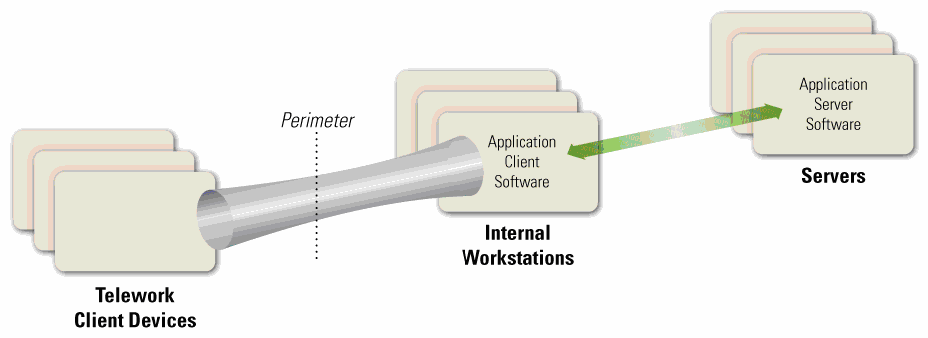
テレワーククライアント端末が境界内の内部ワークステーション上にあるアプリケーションクライアントソフトウェアに接続し、そこからサーバー上のアプリケーションサーバーソフトウェアへ通信する構成図。
Figure 2-3. Remote Desktop Access Architecture
図2-3. リモートデスクトップアクセスのアーキテクチャ
未レビュー訳There are two major styles of remote desktop access: direct between the telework client and the internal workstation, and indirect through a trusted intermediate system. However, direct access is often not possible because it is prevented by many firewalls. For example, if the internal workstation is behind a firewall performing network address translation (NAT), the telework client device cannot initiate contact with the internal workstation unless either the NAT allows such contact14 or the internal workstation initiates communications with the external telework client device (e.g., periodically checking with the client device to see if it wants to connect).
リモートデスクトップアクセスには、大きく分けて、テレワーク用クライアント端末から内部ワークステーションへの直接接続と、信頼された中間システムを介する間接接続の2方式がある。ただし、多くのファイアウォールによって遮断されるため、直接接続ができないことも多い。例えば、内部ワークステーションがネットワークアドレス変換（NAT）を行うファイアウォールの内側にある場合、NATが接続を許可する14か、内部ワークステーションが外部のテレワーク用クライアント端末に通信を開始しない限り（例えば、接続要求があるかどうかをクライアント端末に定期的に問い合わせるなど）、テレワーク用クライアント端末から内部ワークステーションへの接続を開始できない。
未レビュー訳Indirect remote desktop access is performed through an intermediate server. This server is sometimes part of the organization's firewall, but is more often run by a trusted commercial or free third-party service outside the organization's network perimeter. Usually there are separate connections between the telework client device and the service provider, and between the service provider and the internal workstation, with the intermediate server handling the unencrypted communications between the separate connections. The security of this intermediate server is very important, because it is responsible for properly authenticating teleworkers and preventing unencrypted traffic from being accessed by unauthorized parties. Also, if the organization’s security policy requires particular kinds of authentication (such as the two-factor authentication required by federal agencies), the intermediate server should support this authentication in both directions. Before implementing an indirect remote desktop access solution, an organization should evaluate the security provided by the service provider, especially possible threats involving the intermediate server and the potential impact of those threats. The organization can then identify compensating controls to mitigate the threats, such as applying a second level of communications encryption at the application layer, and determine under what circumstances the intermediate system may be used, such as for low-risk activities.
間接的なリモートデスクトップアクセスは、中間サーバーを経由して行う。このサーバーは組織のファイアウォールの一部である場合もあるが、組織のネットワーク境界外にある、信頼された商用又は無料の第三者サービスによって運用されることの方が多い。通常、テレワーク用クライアント端末とサービスプロバイダーの間、及びサービスプロバイダーと内部ワークステーションの間にそれぞれ接続があり、中間サーバーは、それらの接続間の暗号化されていない通信を処理する。この中間サーバーは、テレワーカーを適切に認証し、未暗号化のトラフィックが未許可の第三者にアクセスされるのを防ぐ役割を担うため、そのセキュリティは非常に重要である。また、組織のセキュリティポリシーで特定の認証方式（連邦政府機関に求められる二要素認証など）が必要な場合、中間サーバーは双方向の認証をサポートするべきである。間接的なリモートデスクトップアクセスソリューションを実装する前に、組織は、特に中間サーバーに関係する潜在的な脅威及びその影響について、サービスプロバイダーが提供するセキュリティを評価するべきである。その後、アプリケーション層で第2段階の通信暗号化を適用するなど、脅威を緩和する代償的管理策を特定し、低リスクの活動に限るなど、中間システムを使用できる状況を判断できる。
The remote desktop access software protects the confidentiality and integrity of the remote access communications and also authenticates the user to ensure that no one else connects to the internal workstation. However, because this involves end-to-end encryption of the communications across the organization’s perimeter, the contents of the communication are hidden from the network security controls at the perimeter, such as firewalls and intrusion detection systems. For many organizations, the increased risk caused by this is not worth the benefits, and direct connections from external client devices to internal workstations are prohibited.
リモートデスクトップアクセスソフトウェアは、リモートアクセス通信の機密性及び完全性を保護し、他者が内部ワークステーションに接続しないようユーザーを認証する。しかし、組織の境界を越える通信がエンドツーエンドで暗号化されるため、ファイアウォールや侵入検知システムなど、境界にあるネットワークセキュリティ管理策から通信内容が見えなくなる。多くの組織にとって、これによるリスクの増大は利点に見合わず、外部クライアント端末から内部ワークステーションへの直接接続は禁止されている。
Another serious security issue with remote desktop access software is that it is decentralized; instead of the organization having to secure a single VPN gateway server or portal server, the organization instead has to secure each internal workstation that may be accessed through remote desktop access. Because these internal workstations can be accessed from the Internet, either directly or indirectly, they generally need to be secured nearly as rigorously as full-fledged remote access servers, yet such workstations were usually not designed with that degree of security in mind. Applying compensating controls for each workstation to raise its security to an acceptable level often involves a significant amount of time and resources, as well as acquisition of additional security controls. Also, authentication solutions such as two-factor authentication capabilities may need to be deployed to each internal workstation using remote desktop access.
リモートデスクトップアクセスソフトウェアに関するもう一つの重大なセキュリティ上の問題は、分散型であることだ。組織が単一のVPNゲートウェイサーバー又はポータルサーバーを保護すればよいのではなく、リモートデスクトップアクセスを通じてアクセス可能な各内部ワークステーションを保護しなければならない。これらの内部ワークステーションは、直接又は間接にインターネットからアクセスできるため、通常、本格的なリモートアクセスサーバーとほぼ同程度に厳格な保護が必要となるが、そのような水準のセキュリティを想定して設計されていないことが多い。各ワークステーションに代償的管理策を適用して許容可能なレベルまでセキュリティを高めるには、多くの場合、相当な時間とリソースに加え、追加のセキュリティ管理策の導入が必要になる。また、二要素認証機能などの認証ソリューションを、リモートデスクトップアクセスを使用する各内部ワークステーションに導入する必要がある場合もある。
Generally, remote desktop access solutions, such as those using the Microsoft Remote Desktop Protocol RDP) or Virtual Network Computing (VNC), should only be used for exceptional cases after a careful analysis of the security risks. The other types of remote access solutions described in this section offer superior security capabilities.
一般に、Microsoft Remote Desktop Protocol（RDP）又はVirtual Network Computing（VNC）を使用するリモートデスクトップアクセスソリューションは、セキュリティリスクを慎重に分析したうえで、例外的な場合にのみ使用するべきである。本節で説明した他の種類のリモートアクセスソリューションの方が、優れたセキュリティ機能を提供する。
未レビュー訳2.2.4 Direct Application Access
2.2.4 アプリケーションへの直接アクセス
Remote access can be accomplished without using remote access software. A teleworker can access an individual application directly, with the application providing its own security (communications encryption, user authentication, etc.) Figure 2-4 shows the high-level architecture for direct application access. The application client software installed on the telework client device initiates a connection with a server, which is typically located at the organization’s perimeter (e.g., in a demilitarized zone [DMZ]) or in an Internet-facing cloud architecture.
リモートアクセスソフトウェアを使用せずにリモートアクセスを実現することもできる。テレワーカーは個々のアプリケーションに直接アクセスし、そのアプリケーション自体がセキュリティ（通信の暗号化、ユーザー認証など）を提供する。図2-4に、アプリケーションへの直接アクセスの高レベルなアーキテクチャを示す。テレワーク用クライアント端末にインストールされたアプリケーションクライアントソフトウェアがサーバーへの接続を開始する。サーバーは通常、組織の境界（例：非武装地帯［DMZ］）又はインターネットに公開されたクラウドアーキテクチャ内に配置される。
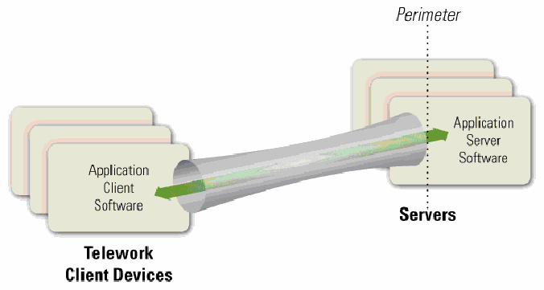
テレワーククライアント端末上のアプリケーションクライアントソフトウェアが、境界を越えてサーバー上のアプリケーションサーバーソフトウェアに直接接続するトンネリング構成図。
Figure 2-4. Direct Application Access Architecture
図2-4. アプリケーションへの直接アクセスのアーキテクチャ
未レビュー訳One of the most common examples of direct application access is webmail. The teleworker runs a web browser and connects to a web server that provides email access. The web server runs HTTP over TLS (HTTPS) to protect the communications, and the webmail application on the server authenticates the teleworker before granting access to the teleworker’s email. For cases such as webmail that use a ubiquitous application client (e.g., a web browser), direct application access provides a highly flexible remote access solution that can be used from nearly any client device. Another common example of direct application access is a smartphone app (client software) that connects to a service provided by one of the organization’s servers through HTTPS.
アプリケーションへの直接アクセスの最も一般的な例の一つはウェブメールである。テレワーカーはウェブブラウザーを起動し、電子メールへのアクセスを提供するウェブサーバーに接続する。ウェブサーバーは通信を保護するため、TLS上でHTTP（HTTPS）を実行し、サーバー上のウェブメールアプリケーションは、テレワーカーの電子メールへのアクセスを許可する前に本人を認証する。ウェブブラウザーなど、広く普及したアプリケーションクライアントを使用するウェブメールのような場合、アプリケーションへの直接アクセスは非常に柔軟なリモートアクセスソリューションとなり、ほぼあらゆるクライアント端末から利用できる。もう一つの一般的な例は、HTTPSを通じて組織のサーバーが提供するサービスに接続するスマートフォンアプリ（クライアントソフトウェア）である。
For the same reasons discussed in Section 2.2.3, the direct application access architecture is generally only acceptable if the servers being accessed by the teleworkers are located on the organization’s network perimeter or in a public-facing cloud, and not internal networks. Servers that are directly accessible from the Internet should already be well-secured to reduce the likelihood of compromise. Many organizations choose to provide direct application access to only a few lower-risk applications that are widely used, such as email, and use tunnel or portal methods to provide access to other applications, particularly those that would be at too much risk if they were directly accessible from the Internet.
第2.2.3節で説明した理由と同様に、アプリケーションへの直接アクセスのアーキテクチャが一般に許容されるのは、テレワーカーがアクセスするサーバーが組織ネットワークの境界又は一般に公開されたクラウドに配置されており、内部ネットワークには配置されていない場合に限られる。インターネットから直接アクセスできるサーバーは、侵害される可能性を低減するため、既に十分に保護されているべきである。多くの組織は、電子メールなど広く使われるリスクの低い少数のアプリケーションだけにアプリケーションへの直接アクセスを提供し、その他のアプリケーション、特にインターネットから直接アクセス可能にするとリスクが大きすぎるアプリケーションへのアクセスには、トンネル方式又はポータル方式を使用する。
2.3 BYOD and Third-Party-Controlled Client Device Considerations
2.3 BYOD及び第三者管理クライアント端末に関する考慮事項
For many years, it has been a common practice for organizations to permit remote access and telework to be performed from employees’, contractors’, business partners’, and vendors’ personally owned computing devices. A more recent trend, BYOD, expands on this telework concept to allow these devices to be directly connected to an organization’s enterprise networks. This adds considerable risk to an organization if the devices are placed on the organization’s internal networks, because BYOD devices, which are managed by the users themselves, are typically not secured to the same degree as the organization’s own devices. However, this risk can largely be mitigated by setting up a separate wired or wireless network within the enterprise dedicated to BYOD devices.15 This BYOD network should be external (e.g., off the organization’s DMZ) and not grant any more access to enterprise resources than users already have through remote access. Organizations considering permitting BYOD devices within the enterprise should strongly consider establishing a separate, external, dedicated network for BYOD use within enterprise facilities. This network should be secured and monitored in a manner consistent with how remote access segments are secured and monitored.
長年にわたり、従業員、請負業者、ビジネスパートナー及びベンダーが個人所有するコンピューティング端末からのリモートアクセスやテレワークを組織が許可することは一般的だった。近年のBYODという傾向はこのテレワークの概念を拡張し、そうした端末を組織の企業ネットワークに直接接続できるようにする。BYOD端末は通常ユーザー自身が管理し、組織所有端末と同程度には保護されていないため、端末を組織の内部ネットワークに接続すると組織のリスクが大幅に高まる。ただし、企業内にBYOD端末専用の有線又は無線ネットワークを別途設けることで、このリスクは大幅に低減できる。15 このBYODネットワークは外部側（例：組織のDMZの外側）に設置し、リモートアクセスを通じてユーザーが既に利用できる範囲を超えて企業リソースへのアクセスを許可するべきではない。企業内でBYOD端末の使用を許可することを検討する組織は、企業施設内でのBYOD利用向けに、外部側の専用ネットワークを別途設けることを強く検討するべきである。このネットワークは、リモートアクセス用セグメントと同等の方法で保護し、監視するべきである。
未レビュー訳The risks of BYOD and third-party-controlled client devices specifically are quite similar to those of general telework and remote access. However, there are a few important distinctions:
BYOD端末及び第三者管理クライアント端末に固有のリスクは、一般的なテレワーク及びリモートアクセスのリスクと非常によく似ている。ただし、重要な違いがいくつかある。
未レビュー訳 Malicious traffic generated by a BYOD or third-party-controlled client device on an enterprise network may appear to external parties to be generated by the organization itself. This could affect the organization’s reputation.
企業ネットワーク上のBYOD端末又は第三者管理クライアント端末が生成した悪意あるトラフィックは、外部からは組織自身が生成したものに見える可能性がある。これにより、組織の評判が損なわれるおそれがある。
未レビュー訳 BYOD and/or third-party-controlled devices may attack each other over the dedicated network.
BYOD端末及び／又は第三者管理端末が、専用ネットワークを介して互いに攻撃し合う可能性がある。
未レビュー訳2.4 Summary of Key Recommendations
2.4 主な推奨事項の概要
The following list presents some of the key recommendations from this section of the document.
以下に、本書のこの節で示した主な推奨事項を挙げる。
To support confidentiality, integrity, and availability, all of the components of telework and remote access solutions, including client devices, remote access servers, and internal servers accessed through remote access, should be secured against a variety of threats. (Section 2.1)
機密性、完全性及び可用性を確保するため、クライアント端末、リモートアクセスサーバー、及びリモートアクセス経由で利用される内部サーバーを含め、テレワーク及びリモートアクセスソリューションを構成するすべての要素を、さまざまな脅威から保護するべきである。（第2.1節）
未レビュー訳 Before designing and deploying telework and remote access solutions, organizations should develop system threat models for the remote access servers and the resources that are accessed through remote access. (Section 2.1)
テレワーク及びリモートアクセスソリューションを設計・導入する前に、組織はリモートアクセスサーバーと、リモートアクセスを通じて利用されるリソースについて、システム脅威モデルを作成するべきである。（第2.1節）
未レビュー訳 When planning telework security policies and controls, organizations should assume that client devices will be acquired by malicious parties who will either attempt to recover sensitive data from the devices or leverage the devices to gain access to the enterprise network. (Section 2.1)
テレワークセキュリティポリシー及び管理策を計画する際、組織は、悪意ある者がクライアント端末を入手し、端末から機微なデータを復元しようとするか、端末を利用して企業ネットワークへのアクセスを得ようとするものと想定するべきである。（第2.1節）
未レビュー訳 Organizations should plan their remote access security on the assumption that the networks between the telework client device and the organization cannot be trusted. (Section 2.1)
組織は、テレワーク用クライアント端末と組織との間にあるネットワークを信頼できないという前提で、リモートアクセスのセキュリティを計画するべきである。（第2.1節）
未レビュー訳 Organizations should assume that client devices will become infected with malware and plan their security controls accordingly. (Section 2.1)
組織は、クライアント端末がマルウェアに感染するものと想定し、それに応じてセキュリティ管理策を計画するべきである。（第2.1節）
未レビュー訳 Organizations should carefully consider the balance between the benefits of providing remote access to additional resources and the potential impact of a compromise of those resources. Organizations should ensure that any internal resources they choose to make available through remote access are hardened appropriately against external threats and that access to the resources is limited to the minimum necessary through firewalling and other access control mechanisms. (Section 2.1)
組織は、追加のリソースにリモートアクセスを提供する利点と、それらのリソースが侵害された場合の潜在的な影響とのバランスを慎重に検討するべきである。リモートアクセスを通じて利用可能にすることを選択した内部リソースは、外部の脅威に対して適切に堅牢化されていることを確認し、ファイアウォールその他のアクセス制御メカニズムを用いて、リソースへのアクセスを必要最小限に制限するべきである。（第2.1節）
未レビュー訳 When planning a remote access solution, organizations should carefully consider the security implications of the remote access methods in each of the four categories described in Section 2.2, in addition to how well each method may meet operational requirements. (Section 2.2)
リモートアクセスソリューションを計画する際、組織は、第2.2節で説明した4つのカテゴリーそれぞれについて、各方式が運用上の要件をどの程度満たすかに加え、セキュリティ上の影響を慎重に検討するべきである。（第2.2節）
未レビュー訳 Organizations considering permitting BYOD devices within the enterprise should strongly consider establishing a separate, external, dedicated network for BYOD use within enterprise facilities. Such a network may also be used for third-party-controlled client devices if desired. (Section 2.3)
企業内でBYOD端末の使用を許可することを検討する組織は、企業施設内でのBYOD利用向けに、外部側の専用ネットワークを別途設けることを強く検討するべきである。必要に応じて、そのネットワークを第三者管理クライアント端末にも使用できる。（第2.3節）
未レビュー訳3. Remote Access Solution Security
3. リモートアクセスソリューションのセキュリティ
未レビュー訳This section presents recommendations for securing remote access solutions. It focuses on remote access server security and server placement. It also discusses authentication, authorization, and access control. Recommendations for securing remote access client software are presented in this section, while recommendations for telework client device security are presented in Section 4.
本節では、リモートアクセスソリューションを保護するための推奨事項を示す。リモートアクセスサーバーのセキュリティ及び配置に重点を置き、認証、認可及びアクセス制御についても説明する。リモートアクセス用クライアントソフトウェアを保護するための推奨事項は本節で、テレワーク用クライアント端末のセキュリティに関する推奨事項は第4章で示す。
3.1 Remote Access Server Security
3.1 リモートアクセスサーバーのセキュリティ
The security of remote access servers, such as VPN gateways and portal servers, is particularly important because they provide a way for external hosts to gain access to internal resources, as well as a secured, isolated telework environment for organization-issued, third-party-controlled, and BYOD client devices. In addition to permitting unauthorized access to enterprise resources and telework client devices, a compromised server could be used to eavesdrop on communications and manipulate them, as well as a “jumping off” point for attacking other hosts within the organization. Recommendations for general server security are available from NIST SP 800-123, Guide to General Server Security. Remote access servers should be kept fully patched, operated using an organization-defined security configuration baseline, and managed only from trusted hosts by authorized administrators.
VPNゲートウェイやポータルサーバーなどのリモートアクセスサーバーは、外部ホストに内部リソースへのアクセス手段を提供すると同時に、組織支給、第三者管理及びBYODのクライアント端末向けに、保護された隔離型のテレワーク環境を提供するため、特に重要である。サーバーが侵害されると、企業リソースやテレワーク用クライアント端末への未許可アクセスを許すだけでなく、通信を盗聴又は改ざんしたり、組織内の他のホストを攻撃するための「踏み台」として利用されたりするおそれがある。一般的なサーバーセキュリティに関する推奨事項は、NIST SP 800-123, Guide to General Server Securityを参照。リモートアクセスサーバーには常に最新のパッチを適用し、組織が定めたセキュリティ構成ベースラインに従って運用し、承認された管理者が信頼されたホストからのみ管理するべきである。
VPN gateways and portals can run many services and applications, such as firewalls, antimalware software, and intrusion detection software. Organizations should carefully consider the security of any solutions that involve running a remote access server on the same host as other services and applications. Such solutions may offer benefits, such as equipment cost savings, but a compromise of any one of the services or applications could permit an attacker to compromise the entire remote access server. Placing the remote access server on a separate, dedicated host reduces the likelihood of a remote access server compromise and limits its potential impact. Using a separate host may also be advisable if the remote access server is likely to place other services and applications at significantly increased risk. An organization should also consider using multiple remote access solutions if its remote access users have vastly different security needs, such as one group accessing typical low-risk resources and another group accessing mission-critical confidential data.
VPNゲートウェイ及びポータルは、ファイアウォール、マルウェア対策ソフトウェア、侵入検知ソフトウェアなど、多くのサービスやアプリケーションを実行できる。組織は、リモートアクセスサーバーと他のサービスやアプリケーションを同じホスト上で実行するソリューションのセキュリティを慎重に検討するべきである。こうしたソリューションには機器費用を削減できるなどの利点がある一方、いずれかのサービス又はアプリケーションが侵害されると、攻撃者がリモートアクセスサーバー全体を侵害できるおそれがある。リモートアクセスサーバーを専用の別ホストに配置すると、サーバーが侵害される可能性を低減し、侵害による潜在的な影響を限定できる。リモートアクセスサーバーが他のサービスやアプリケーションのリスクを大幅に高める可能性が高い場合にも、別ホストの使用が望ましいことがある。また、リモートアクセスユーザー間でセキュリティ上のニーズが大きく異なる場合、例えば、一方のグループが一般的な低リスクのリソースにアクセスし、別のグループがミッションクリティカルな機密データにアクセスする場合、組織は複数のリモートアクセスソリューションの使用も検討するべきである。
未レビュー訳The security of stored data is another important consideration for remote access server security. For portal servers that may temporarily store sensitive user data, wiping such data from the server as soon as it is no longer needed can reduce the potential impact of a compromise of the server. The need to wipe sensitive data from remote access servers should be determined based on a risk assessment.
保存データのセキュリティも、リモートアクセスサーバーのセキュリティを考えるうえで重要である。一時的に機微なユーザーデータを保存する可能性があるポータルサーバーでは、不要になった時点で速やかにそのデータをサーバーから消去することで、サーバー侵害時の潜在的な影響を低減できる。リモートアクセスサーバーから機微なデータを消去する必要性は、リスク評価に基づいて判断するべきである。
3.2 Remote Access Server Placement
3.2 リモートアクセスサーバーの配置
Major factors organizations should consider when determining where to place a remote access server include the following:
リモートアクセスサーバーの配置場所を決める際に組織が考慮するべき主な要素を、以下に示す。
Device Performance. Remote access services can be computationally intensive, primarily because of encryption and decryption. Providing remote access services from a device that also provides other services may put too high of a load on the server during peak usage, causing service disruptions. The performance impact caused by encryption and key exchange can be reduced by performing them on hardware-based cryptographic accelerator chips. These chips can be located on computer motherboards or add-on cards.
デバイスの性能。リモートアクセスサービスは、主に暗号化及び復号のため、計算負荷が高くなる場合がある。他のサービスも提供するデバイスからリモートアクセスサービスを提供すると、ピーク時にサーバーの負荷が過大になり、サービスが中断するおそれがある。暗号化及び鍵交換による性能への影響は、ハードウェアベースの暗号アクセラレーターチップ上で処理することで低減できる。こうしたチップは、コンピューターのマザーボード又は拡張カードに搭載できる。
未レビュー訳 Traffic Examination. Because the contents of encrypted remote access communications cannot be examined by network firewalls, intrusion detection systems, and other network security devices, it is generally recommended that the remote access architecture be designed so that an unencrypted form of the communications can be examined by the appropriate network and/or host-based security controls.
トラフィックの検査。暗号化されたリモートアクセス通信の内容は、ネットワークファイアウォール、侵入検知システムその他のネットワークセキュリティデバイスでは検査できない。そのため一般に、適切なネットワークベース及び／又はホストベースのセキュリティ管理策が、通信の非暗号化形式を検査できるようにリモートアクセスアーキテクチャを設計することが推奨される。
未レビュー訳 Traffic Not Protected by the Remote Access Solution. Organizations should carefully consider the threats against network traffic not protected by the remote access solution, such as traffic passed between a remote access server and internal resources.
リモートアクセスソリューションで保護されないトラフィック。組織は、リモートアクセスソリューションで保護されないネットワークトラフィック、例えばリモートアクセスサーバーと内部リソースの間で転送されるトラフィックに対する脅威を慎重に検討するべきである。
未レビュー訳 NAT. The use of NAT can cause operational problems for some remote access solutions. For example, any remote access system that requires the teleworker to connect directly to a host inside the network, such as a remote desktop system or a VPN with its public endpoint inside the network, cannot work with a NAT without special configuration that may or may not work. NATs also prevent the use of applications that require addresses not to change (e.g., embed addresses in the application content). Protocols and mechanisms that break through NATs to solve particular access problems often introduce their own security problems, such as possibly allowing access to different hosts inside the NAT at different times. Some newer NAT technologies, particularly those involving IPv6, are not yet well understood and their security properties not yet fully analyzed.
NAT。NATの使用は、一部のリモートアクセスソリューションで運用上の問題を引き起こす可能性がある。例えば、テレワーカーがネットワーク内部のホストに直接接続する必要があるリモートアクセスシステム（リモートデスクトップシステムや、パブリックエンドポイントがネットワーク内部にあるVPNなど）は、動作するかどうか分からない特別な構成を行わない限り、NAT環境では機能しない。NATは、アプリケーションコンテンツにアドレスを埋め込むなど、アドレスが変更されないことを必要とするアプリケーションの使用も妨げる。特定のアクセス問題を解決するためにNATを越えるプロトコルやメカニズムは、多くの場合、独自のセキュリティ問題を持ち込む。例えば、異なる時点でNAT内部の別のホストへのアクセスを許可する可能性がある。IPv6を含む一部の新しいNAT技術は、まだ十分に理解されておらず、そのセキュリティ特性も十分に分析されていない。
未レビュー訳Organizations should carefully consider the placement of their remote access servers. Some remote access servers, such as VPN gateways, generally act as intermediaries between telework devices and the organization’s internal computing resources. Other hosts providing remote access services, such as direct application access and remote desktop access solutions, are true endpoints for remote access communications. Both categories of remote access servers are discussed below.
組織はリモートアクセスサーバーの配置を慎重に検討するべきである。VPNゲートウェイなどのリモートアクセスサーバーの中には、一般にテレワーク端末と組織の内部コンピューティングリソースとの中継点として機能するものがある。一方、アプリケーションへの直接アクセスやリモートデスクトップアクセスソリューションなど、リモートアクセスサービスを提供する他のホストは、リモートアクセス通信の実際の終端となる。この2種類のリモートアクセスサーバーについて、以下で説明する。
未レビュー訳Remote access servers are usually placed at an organization's network perimeter. Such placement is common because the organizational security policies most often apply to the entire network of an organization. Even if a particular security policy applies to one sub-network of the organization, most remote access servers can restrict access to sub-networks and therefore can be placed at the organization's perimeter. In some network layouts, it is better to put a remote access server inside the perimeter, at the boundary of a sub-network. The rest of this section describes when such a network layout might be appropriate.
リモートアクセスサーバーは通常、組織ネットワークの境界に配置される。組織のセキュリティポリシーは通常、組織ネットワーク全体に適用されるため、この配置が一般的である。特定のセキュリティポリシーが組織内の一つのサブネットワークにだけ適用される場合でも、ほとんどのリモートアクセスサーバーはサブネットワークへのアクセスを制限できるため、組織の境界に配置できる。ネットワーク構成によっては、リモートアクセスサーバーを境界の内側、サブネットワークの境界に配置した方がよい場合もある。本節の残りでは、そのようなネットワーク構成が適切となる状況を説明する。
3.2.1 Intermediate Remote Access Servers
3.2.1 中継型リモートアクセスサーバー
Intermediate remote access servers connect external hosts to internal resources, so they should usually be placed at the network perimeter. The server acts as a single point of entry to the network from the perimeter and enforces the telework security policy. If remote access is needed to a particular sub-network within the organization, there are generally two options: 1) place the remote access server at the edge of the sub-network, where the sub-network joins the full network; or 2) place it at the perimeter of the full network and use additional mechanisms to restrict the teleworkers to only be able to access the specified sub-network. The value of placing the remote access server at the network perimeter versus the sub-network perimeter differs for the four types of remote access methods:
中継型リモートアクセスサーバーは外部ホストを内部リソースに接続するため、通常はネットワーク境界に配置するべきである。サーバーは境界からネットワークに入る単一の入口として機能し、テレワークセキュリティポリシーを適用する。組織内の特定のサブネットワークへのリモートアクセスが必要な場合、一般に選択肢は2つある。1) リモートアクセスサーバーを、サブネットワークとネットワーク全体が接続するサブネットワークの端に配置する。又は、2) サーバーをネットワーク全体の境界に配置し、追加のメカニズムを用いてテレワーカーが指定されたサブネットワークにのみアクセスできるよう制限する。4種類のリモートアクセス方式では、ネットワーク境界に置く場合とサブネットワーク境界に置く場合の利点がそれぞれ異なる。
未レビュー訳 Tunneling servers usually give administrators sufficient control over the internal resources to which a teleworker has access, such that there is little advantage to setting up a tunneling server at the edge of a sub-network, as opposed to the network perimeter.
トンネリングサーバーは通常、テレワーカーがアクセスできる内部リソースを管理者が十分に制御できる。そのため、トンネリングサーバーをネットワーク境界ではなくサブネットワークの端に設置する利点はほとんどない。
未レビュー訳 Portal servers run the application client software on the servers themselves. Placing them at the network perimeter has a similar effect as placing them at the edge of a sub-network because the remote access user is only running applications on the portal server, not on servers inside the network.
ポータルサーバーでは、アプリケーションクライアントソフトウェア自体がサーバー上で実行される。リモートアクセスユーザーはネットワーク内のサーバーではなくポータルサーバー上のアプリケーションだけを実行するため、ポータルサーバーをネットワーク境界に配置する効果は、サブネットワークの端に配置する場合と同様である。
未レビュー訳 Remote desktop access does not involve remote access servers, so there is no issue with the placement of the remote access server.
リモートデスクトップアクセスではリモートアクセスサーバーを使用しないため、リモートアクセスサーバーの配置に関する問題は生じない。
未レビュー訳 Direct application access servers run the application server software on the servers themselves. Placing them at the network perimeter has a similar effect as placing them at the edge of a sub-network because the remote access user is only running applications on the direct application access server, not on servers inside the network.
アプリケーションへの直接アクセスサーバーでは、アプリケーションサーバーソフトウェア自体がサーバー上で実行される。リモートアクセスユーザーはネットワーク内のサーバーではなく、アプリケーションへの直接アクセスサーバー上のアプリケーションだけを実行するため、サーバーをネットワーク境界に配置する効果は、サブネットワークの端に配置する場合と同様である。
未レビュー訳Thus, the only types of remote access servers that may be appropriate to place at the sub-network perimeter are portal servers and direct application access servers, but even in those two cases, it is often better to run those on the organization’s perimeter so that the organization’s firewall can control access to these servers for all workers, not just teleworkers. Further, to simplify management of the network and the network’s security policy, running all remote access servers at the network perimeter is also advisable. Therefore, organizations should place remote access servers at the network perimeter instead of the sub-network perimeter unless there are compelling reasons to do otherwise.
したがって、サブネットワークの境界に配置するのが適切となる可能性があるリモートアクセスサーバーは、ポータルサーバー及びアプリケーションへの直接アクセスサーバーに限られる。ただし、この2種類の場合でも、テレワーカーだけでなくすべての従業員によるサーバーへのアクセスを組織のファイアウォールで制御できるよう、組織の境界に配置する方が望ましいことが多い。さらに、ネットワーク及びそのセキュリティポリシーの管理を簡素化するため、すべてのリモートアクセスサーバーをネットワーク境界に置くことも望ましい。したがって、そうしない強い理由がない限り、組織はリモートアクセスサーバーをサブネットワークの境界ではなくネットワーク境界に配置するべきである。
未レビュー訳If a network has a firewall at the perimeter, remote access servers on that network should be directly connected to, or in the same physical device as, the firewall so as to not circumvent the firewall’s security policy. In the case that the two devices are the same, there is of course no question about the placement of the remote access server. However, if the remote access server is a different device than the firewall, the network planner must decide where to place the remote access server. If the firewall has a DMZ associated with it, then that DMZ is likely the best location for the remote access server, otherwise the server should be outside the firewall if the network topology allows for it. Both of these placements provide logical separation between the remote access server and the internal networks. To reduce the potential impact of a compromise of the remote access server, organizations should restrict communications between the server and internal networks. The server should only be able to initiate communications with the internal hosts and services specifically authorized for remote access usage, and only the appropriate internal hosts (e.g., trusted hosts used to administer the remote access server) should be able to initiate communications with the remote access server.
ネットワークの境界にファイアウォールがある場合、そのネットワーク上のリモートアクセスサーバーは、ファイアウォールのセキュリティポリシーを迂回しないよう、ファイアウォールに直接接続するか、ファイアウォールと同じ物理デバイス上に配置するべきである。両者が同じデバイスであれば、リモートアクセスサーバーの配置場所に問題はない。しかし、リモートアクセスサーバーとファイアウォールが別のデバイスである場合、ネットワーク設計者はサーバーの配置場所を決定しなければならない。ファイアウォールにDMZがある場合、そのDMZがリモートアクセスサーバーの最適な配置場所となる可能性が高い。そうでない場合、ネットワークトポロジーが許せば、サーバーをファイアウォールの外側に配置するべきである。どちらの配置でも、リモートアクセスサーバーと内部ネットワークを論理的に分離できる。リモートアクセスサーバーが侵害された場合の潜在的な影響を低減するため、組織はサーバーと内部ネットワークの間の通信を制限するべきである。サーバーは、リモートアクセス利用のために明示的に承認された内部ホスト及びサービスとの通信のみを開始できるようにするべきである。また、適切な内部ホスト（例：リモートアクセスサーバーの管理に使用する信頼されたホスト）のみが、リモートアクセスサーバーとの通信を開始できるようにするべきである。
If the remote access server must be placed inside the firewall, the firewall’s security policy should be adjusted to allow only the necessary traffic from teleworkers (and only teleworkers) to get to the remote access server. This could, for example, involve limiting incoming traffic to only the IP addresses or address ranges used by contractors, business partners, and vendors’ networks and used by employees’ home networks if those networks have stable addresses. Setting up such a precise policy for mobile telework client devices can be difficult to maintain and error-prone. Also, because all remote access communications should be encrypted, as discussed in Section 4, network security controls would be unable to monitor the contents of the communications. Therefore, this solution should be avoided.
リモートアクセスサーバーをファイアウォールの内側に配置しなければならない場合、テレワーカー（かつテレワーカーのみ）からリモートアクセスサーバーへの必要なトラフィックだけを許可するよう、ファイアウォールのセキュリティポリシーを調整するべきである。例えば、請負業者、ビジネスパートナー及びベンダーのネットワークで使用するIPアドレス又はアドレス範囲、並びに安定したアドレスを持つ場合の従業員の自宅ネットワークで使用するアドレスからの着信トラフィックだけに制限する方法がある。モバイルのテレワーク用クライアント端末に対してこのように厳密なポリシーを設定するのは、維持が難しく、エラーも起きやすい。また、第4章で説明するように、リモートアクセス通信はすべて暗号化されるべきであるため、ネットワークセキュリティ管理策では通信内容を監視できない。したがって、このソリューションは避けるべきである。
未レビュー訳3.2.2 Endpoint Remote Access Servers
3.2.2 エンドポイント型リモートアクセスサーバー
Endpoint remote access servers should be placed in the organization’s DMZ whenever possible. This allows a perimeter firewall to limit access to the servers from both external and internal hosts, and avoids the security issues discussed in Section 2.2.3 involved in allowing external traffic to pass directly into the internal network. Implementations of remote desktop access solutions usually rely on internal workstations to provide remote access services, so the use of such solutions is not generally recommended.
可能な限り、エンドポイント型リモートアクセスサーバーは組織のDMZに配置するべきである。これにより、境界ファイアウォールで外部ホスト及び内部ホストの双方からサーバーへのアクセスを制限でき、第2.2.3節で説明した、外部トラフィックを内部ネットワークへ直接通過させることに伴うセキュリティ上の問題を回避できる。リモートデスクトップアクセスソリューションの実装では通常、内部ワークステーションがリモートアクセスサービスを提供するため、この種のソリューションの使用は一般に推奨されない。
未レビュー訳3.3 Remote Access Authentication, Authorization, and Access Control
3.3 リモートアクセスの認証、認可及びアクセス制御
Most of the computing resources used through remote access are available only to an organization’s users, and often only a subset of those users. To ensure that access is restricted properly, remote access servers should authenticate each teleworker before granting any access to the organization’s resources, and then use authorization technologies to ensure that only the necessary resources can be used. Authentication can also be used to confirm the legitimacy of telework client devices and remote access servers. Access control technologies are also needed to restrict access to network communications and applications. This section provides additional details on remote access authentication, authorization, and access control.
リモートアクセスを通じて利用するコンピューティングリソースのほとんどは組織のユーザーだけが利用でき、多くの場合、その中の一部のユーザーに限られる。アクセスを適切に制限するため、リモートアクセスサーバーは組織のリソースへのアクセスを許可する前に各テレワーカーを認証し、その後、必要なリソースだけを利用できるよう認可技術を使用するべきである。認証は、テレワーク用クライアント端末及びリモートアクセスサーバーの正当性を確認するためにも利用できる。ネットワーク通信及びアプリケーションへのアクセスを制限するには、アクセス制御技術も必要である。本節では、リモートアクセスの認証、認可及びアクセス制御について詳しく説明する。
未レビュー訳3.3.1 Authentication
3.3.1 認証
There are many ways to authenticate remote access users, such as with passwords16, digital certificates, or hardware authentication tokens. If passwords are the only form of authentication for a remote access solution, then generally the remote access solution’s authentication mechanism should be different from the organization’s other authentication mechanisms, such as email or directory service passwords, unless direct application access is being used. Having different passwords reduces the impact that a compromise of remote access credentials would have on other information resources, and vice versa, and it is particularly important if users are entering passwords into telework devices not controlled by the organization. However, having different passwords for remote access and other systems is often not enforceable17, and it should be assumed that some users will use the same passwords for both. Organizations with higher security needs or with concerns about the security of passwords should consider using authentication that does not rely solely on passwords, such as multi-factor authentication.
リモートアクセスユーザーを認証する方法には、パスワード16、デジタル証明書、ハードウェア認証トークンなど、さまざまなものがある。リモートアクセスソリューションでパスワードだけを認証に使う場合、通常、その認証メカニズムは、電子メールやディレクトリサービスのパスワードなど、組織の他の認証メカニズムとは異なるものにするべきである。ただし、アプリケーションへの直接アクセスを使用する場合は除く。パスワードを分けることで、リモートアクセス認証情報の侵害が他の情報リソースに及ぼす影響、及びその逆の影響を低減できる。これは、組織が管理していないテレワーク端末にユーザーがパスワードを入力する場合に特に重要である。ただし、リモートアクセス用と他のシステム用のパスワードを別にすることを強制できない場合も多く17、両方に同じパスワードを使うユーザーがいるものと想定するべきである。より高いセキュリティを必要とする組織やパスワードの安全性に懸念がある組織は、多要素認証など、パスワードだけに依存しない認証の使用を検討するべきである。
未レビュー訳Federal agencies are required to “allow remote access only with two-factor authentication where one of the factors is provided by a device separate from the computer gaining access”, according to OMB Memorandum 07-16, Safeguarding Against and Responding to the Breach of Personally Identifiable Information.18 Such two-factor authentication currently tends to be implemented through the use of a cryptographic token and a password, because other authentication methods are often not available on telework client devices. For example, most mobile devices do not have biometric capabilities, smart card readers, or other additional authentication capabilities.19 This is particularly true for client devices not issued by the organization.
OMB Memorandum 07-16, Safeguarding Against and Responding to the Breach of Personally Identifiable Information.18によると、連邦政府機関は「アクセスを得るコンピューターとは別のデバイスによって認証要素の1つが提供される二要素認証を使用する場合に限り、リモートアクセスを許可する」ことが義務付けられている。現在、この二要素認証は、他の認証方法をテレワーク用クライアント端末で利用できないことが多いため、暗号トークンとパスワードを使用して実装される傾向にある。例えば、ほとんどのモバイル端末には、生体認証機能、スマートカードリーダーその他の追加認証機能が備わっていない。これは特に組織が支給していないクライアント端末に当てはまる。
未レビュー訳Many organizations require teleworkers to re-authenticate periodically during long remote access sessions, such as after each eight hours of a session or after 30 minutes of idle time. This helps organizations confirm that the person using remote access is authorized to do so. OMB M-07-16 requires federal agencies to “use a ‘time-out’ function for remote access and mobile devices requiring user re-authentication after thirty minutes of inactivity”.20 Remote access servers vary in their support for authentication methods and session timeouts, so additional mechanisms may be needed to implement and enforce these policies. Additional information on the types of user authentication methods appropriate for remote access can be found in NIST SP 800-63, Electronic Authentication Guideline21 and OMB M-04-04, E-Authentication Guidance for Federal Agencies.22
多くの組織は、長時間のリモートアクセスセッション中に、例えばセッション開始から8時間ごと、又は30分間操作がない場合など、テレワーカーに定期的な再認証を求める。これにより、リモートアクセスを利用している者がその利用を許可されていることを組織が確認できる。OMB M-07-16は、連邦政府機関に対し「リモートアクセス及びモバイル端末にタイムアウト機能を使用し、30分間操作がない場合にユーザーの再認証を求める」ことを義務付けている。20 リモートアクセスサーバーによって認証方式及びセッションタイムアウトのサポート状況が異なるため、これらのポリシーを実装し適用するには追加のメカニズムが必要な場合がある。リモートアクセスに適したユーザー認証方式の種類については、NIST SP 800-63, Electronic Authentication Guideline21及びOMB M-04-04, E-Authentication Guidance for Federal Agencies.22を参照。
未レビュー訳Whenever feasible, organizations should implement mutual authentication, so that a remote access user can verify the legitimacy of a remote access server before providing authentication credentials to it. An example is verifying a digital certificate presented by the remote access server to ensure that the server is controlled by the organization. User digital certificates can be used in many remote access systems, although the systems vary in the way that they handle certificates. Most user digital certificates have the private key associated with the certificate protected by a password. Some remote access methods, such as IPsec and SSL VPN technologies, include mandatory server authentication during the setup of the secure communications channel. Server authentication is most important for remote access methods where a user is manually establishing the remote access connection, such as typing a URL into a web browser. Section 3.4 presents additional information on this.
可能な場合は常に相互認証を実装し、リモートアクセスユーザーが認証情報を提示する前に、リモートアクセスサーバーの正当性を確認できるようにするべきである。例えば、リモートアクセスサーバーが提示するデジタル証明書を検証し、そのサーバーが組織によって管理されていることを確認する方法がある。多くのリモートアクセスシステムでユーザーデジタル証明書を使用できるが、証明書の処理方法はシステムによって異なる。ほとんどのユーザーデジタル証明書では、証明書に関連付けられた秘密鍵がパスワードで保護されている。IPsecやSSL VPN技術など、一部のリモートアクセス方式では、安全な通信チャネルの確立時にサーバー認証が必須である。サーバー認証が特に重要なのは、ユーザーがウェブブラウザーにURLを入力するなど、リモートアクセス接続を手動で確立する方式である。詳しくは第3.4節を参照。
未レビュー訳3.3.2 Authorization
3.3.2 認可
After verifying the identity of a remote access user, organizations may choose to perform checks involving the telework client device to determine which internal resources the user should be permitted to access. These checks are sometimes called health, suitability, screening, or assessment checks. The most common way of implementing this is having the remote access server perform health checks on the teleworker's client device. These health checks usually require software on the user’s device that is controlled by the remote access server to verify compliance with certain requirements from the organization’s secure configuration baseline, such as the user’s antimalware software being up-to-date, the operating system being fully patched, and the user’s device being owned and controlled by the organization. Fewer health checks are generally available on mobile devices, but an important check usually provided is to determine if a mobile device has been rooted or jailbroken, which can have serious negative security implications.23
リモートアクセスユーザーの身元を確認した後、ユーザーがアクセスできる内部リソースを判断するため、テレワーク用クライアント端末に関するチェックを行うことができる。こうしたチェックは、ヘルスチェック、適合性チェック、スクリーニング又はアセスメントチェックと呼ばれることがある。最も一般的な方法では、リモートアクセスサーバーがテレワーカーのクライアント端末に対してヘルスチェックを行う。通常、このチェックでは、リモートアクセスサーバーが制御するソフトウェアをユーザー端末に必要とし、組織のセキュア構成ベースラインに定められた要件（マルウェア対策ソフトウェアが最新であること、オペレーティングシステムにすべてのパッチが適用されていること、端末を組織が所有し管理していることなど）への適合を検証する。一般に、モバイル端末で利用できるヘルスチェックは少ないが、通常行われる重要なチェックとして、深刻なセキュリティ上の悪影響をもたらし得るルート化又はジェイルブレイクの有無の判定がある。23
未レビュー訳Some remote access solutions can also determine if the device has been secured by the organization and what type of device it is (e.g., desktop/laptop, smartphone, tablet). Based on the results of these checks, the organization can determine whether the device should be permitted to use remote access and what level of access should be granted. If the user has acceptable authorization credentials but the client device does not pass the health check, the user and device may be granted limited access to the internal network, no network access at all, or access to a quarantine network so that the security deficiencies can be fixed. This decision can also be based on the part of the network that the device is trying to access; an organization might have more stringent policies for more sensitive data. Some organizations also issue digital certificates to the client devices so that the devices themselves can be authenticated as part of the checks.
リモートアクセスソリューションによっては、端末が組織によって保護されているか、また端末の種類（例：デスクトップ／ノートPC、スマートフォン、タブレット）も判定できる。これらのチェック結果に基づき、組織は端末にリモートアクセスを許可するか、どのレベルのアクセスを付与するかを決定できる。ユーザーの認可情報が許容可能でも、クライアント端末がヘルスチェックに合格しない場合、ユーザーと端末には、内部ネットワークへの限定的なアクセス、ネットワークへのアクセスなし、又はセキュリティ上の欠陥を修正するための隔離ネットワークへのアクセスを付与できる。この判断では、端末がアクセスしようとしているネットワーク領域を考慮することもできる。機微なデータを扱う領域には、より厳格なポリシーを適用する場合がある。また、チェックの一環として端末自体を認証できるよう、クライアント端末にデジタル証明書を発行する組織もある。
未レビュー訳Authorization based on the type of device that is used and the device’s properties is referred to as network access control (NAC). NAC is a security policy enforcement mechanism, not a true security protection mechanism. Examples of NAC checks include verifying the presence of security patches, confirming that antimalware software is enabled and up-to-date, ensuring that a personal firewall is enabled and blocking incoming traffic, and performing device authentication. However, many health checks are performed in ways that can be trivially circumvented by malware, so organizations should not rely on NAC to stop determined attackers from gaining network access. Organizations should use NAC whenever feasible to detect major security policy violations in telework client devices and to prevent teleworkers from inadvertently using the wrong device for telework. Some NAC solutions can also be used to control which internal resources each client device may access and whether remediation actions have to be performed on a client device before it is permitted access.
使用端末の種類及び端末の特性に基づく認可は、ネットワークアクセス制御（NAC）と呼ばれる。NACはセキュリティポリシーを適用するメカニズムであり、実際にセキュリティを保護するメカニズムではない。NACのチェックには、セキュリティパッチの有無の確認、マルウェア対策ソフトウェアが有効かつ最新であることの確認、パーソナルファイアウォールが有効で着信トラフィックを遮断していることの確認、及び端末認証などがある。ただし、多くのヘルスチェックはマルウェアによって容易に回避され得るため、組織は、断固とした攻撃者によるネットワークアクセスを阻止する目的でNACに依存するべきではない。実行可能な場合、組織はNACを使用し、テレワーク用クライアント端末の重大なセキュリティポリシー違反を検知するとともに、テレワーカーが誤った端末を不注意にテレワークで使用することを防ぐべきである。一部のNACソリューションは、各クライアント端末がアクセスできる内部リソースを制御し、アクセス許可前に端末上で修復措置を実施する必要があるかどうかを判定するためにも使用できる。
未レビュー訳3.3.3 Access Control for Network Communications
3.3.3 ネットワーク通信のアクセス制御
A major component of controlling access to network communications and protecting their content is the use of cryptography. At a minimum, any sensitive information passing over the Internet, wireless networks, and other untrusted networks should have its confidentiality and integrity preserved through use of cryptography. Federal agencies are required to use cryptographic algorithms that are NIST-approved and contained in FIPS-validated modules. The FIPS 140 specification, Security Requirements for Cryptographic Modules, defines how cryptographic modules are validated.24 It is important to note that for a remote access system to be considered compliant to FIPS 140, both sides of the interaction must have passed FIPS 140 validation. Many remote access systems, such as SSL VPNs, support the use of remote access client software from other vendors, so there may be two or more distinct validation certificates for a particular remote access system.
ネットワーク通信へのアクセスを制御し、その内容を保護する主要な手段の一つは暗号技術である。最低限、インターネット、無線ネットワークその他の信頼できないネットワークを通過する機微な情報については、暗号技術を用いて機密性及び完全性を保持するべきである。連邦政府機関は、NIST承認済みで、FIPS検証済みモジュールに含まれる暗号アルゴリズムを使用することが義務付けられている。FIPS 140仕様であるSecurity Requirements for Cryptographic Modulesは、暗号モジュールの検証方法を定めている。24 リモートアクセスシステムがFIPS 140に準拠すると見なされるには、通信の両端がともにFIPS 140の検証に合格していなければならない点に注意が必要である。SSL VPNなど、多くのリモートアクセスシステムは他ベンダーのリモートアクセス用クライアントソフトウェアの使用をサポートしているため、特定のリモートアクセスシステムに対して2つ以上の異なる検証証明書が存在することがある。
未レビュー訳Some remote access methods, such as IPsec and SSL VPNs, often inherently include NIST-approved mechanisms for encrypting communications and verifying their integrity. Other remote access methods may use other NIST-approved cryptographic mechanisms to provide protection. Remote access methods that do not offer NIST-approved mechanisms for protecting the confidentiality and integrity of communications should have additional NIST-approved protection applied, such as tunneling the remote access method’s communications within a VPN or running the communications over TLS. Remote access methods that offer both NIST-approved and non-NIST-approved cryptographic mechanisms should disable the use of all non-approved cryptographic mechanisms if possible. This is usually achieved through configuration of the remote access server.
IPsecやSSL VPNなど、一部のリモートアクセス方式には、通信の暗号化及び完全性検証のためのNIST承認済みメカニズムが本来含まれていることが多い。他の方式では、保護のために別のNIST承認済み暗号メカニズムを使用する場合がある。通信の機密性及び完全性を保護するNIST承認済みメカニズムを提供しないリモートアクセス方式には、VPN内で通信をトンネル化する、又はTLS上で通信を行うなど、追加のNIST承認済み保護を適用するべきである。NIST承認済みと未承認の両方の暗号メカニズムを提供する方式では、可能な場合、未承認の暗号メカニズムをすべて無効にするべきである。通常これは、リモートアクセスサーバーの構成によって実現する。
Access control for network communications may also involve determining which traffic should be protected. Some remote access solutions offer options for this; for example, many VPN clients have a feature called split tunneling which, if enabled, will tunnel all communications involving the organization’s internal resources through the VPN, thus protecting them, but will exclude all other communications from going through the tunnel. Split tunneling increases efficiency for communications and reduces load on the remote access solution, but it also prevents the organization from examining much of the teleworkers’ network traffic and from protecting the confidentiality and integrity of that traffic. Further, using split tunneling could result in a telework device that has two active Internet interfaces—for example, a PC connected to Ethernet and a wireless network simultaneously— inadvertently becoming a bridge between a trusted and an untrusted network. This presents a significant security risk and is a violation of most organizations’ security policies. For teleworkers using VPNs on untrusted networks, particularly higher-risk networks such as wireless hotspots, organizations should consider disabling split tunneling capabilities so that attackers cannot eavesdrop on any of the teleworkers’ network communications.
ネットワーク通信のアクセス制御では、どのトラフィックを保護するべきかを判断することもある。一部のリモートアクセスソリューションにはそのための選択肢がある。例えば、多くのVPNクライアントにはスプリットトンネリングという機能があり、これを有効にすると、組織の内部リソースに関係するすべての通信をVPN経由でトンネル化して保護する一方、その他の通信はトンネルを通さない。スプリットトンネリングは通信効率を高め、リモートアクセスソリューションの負荷を減らすが、組織がテレワーカーのネットワークトラフィックの多くを検査し、その機密性及び完全性を保護することも妨げる。さらに、スプリットトンネリングを使用すると、例えばPCがイーサネットと無線ネットワークに同時に接続するなど、インターネット接続を2つ持つテレワーク端末が、信頼されたネットワークと信頼されていないネットワークとの間のブリッジに不注意に変わるおそれがある。これは重大なセキュリティリスクであり、ほとんどの組織のセキュリティポリシーに違反する。信頼できないネットワーク、特に無線ホットスポットなど高リスクのネットワーク上でVPNを使用するテレワーカーについては、攻撃者がネットワーク通信を盗聴できないよう、組織はスプリットトンネリング機能の無効化を検討するべきである。
未レビュー訳For their teleworkers’ home networks or their contractors’, business partners’, and vendors’ networks, some organizations provide VPN gateways, firewall appliances, or other security devices that are configured to enforce the organization’s security policies. This gives organizations greater control over telework security but may also involve significant costs in purchasing, deploying, managing, and maintaining the security devices. Also, because most networks used for telework are also used for other purposes, the security policies could interfere with other use of the network if not designed properly. Another drawback is that the security devices, if stolen by or otherwise acquired by an attacker, could grant an attacker easy access to the organization’s systems if the organization’s remote access solution authenticates the security device only and not the remote access user. Therefore, when such security devices are used, both the device and the user should be authenticated by the organization.
一部の組織は、テレワーカーの自宅ネットワークや請負業者、ビジネスパートナー及びベンダーのネットワーク向けに、組織のセキュリティポリシーを適用するよう構成したVPNゲートウェイ、ファイアウォール機器その他のセキュリティデバイスを提供する。これにより組織はテレワークのセキュリティをより強く管理できるが、セキュリティデバイスの購入、導入、管理及び保守に多大な費用がかかる場合もある。また、テレワークで使われるネットワークのほとんどは他の目的にも使用されるため、適切に設計しなければ、セキュリティポリシーがネットワークの他の用途を妨げるおそれがある。さらに、攻撃者がセキュリティデバイスを盗むか、その他の方法で入手し、組織のリモートアクセスソリューションがリモートアクセスユーザーではなくデバイスだけを認証する場合、攻撃者に組織のシステムへの容易なアクセスを与える可能性がある。したがって、このようなセキュリティデバイスを使用する場合、組織はデバイスとユーザーの両方を認証するべきである。
3.3.4 Access Control for Applications
3.3.4 アプリケーションのアクセス制御
Different types of remote access architectures offer different levels of granularity for application access control. Tunnels often have a mechanism for an administrator to specify which ports on which hosts the teleworker has access to; this can limit access so that only specific applications can be used. Portals, by their nature, limit the teleworker to applications run on the portal server. Similarly, direct application access limits the teleworker to a specific application on a single server. Remote desktop access can only provide access control to applications by combining its policies with the access control restrictions that are in place on the internal workstations.
リモートアクセスアーキテクチャの種類によって、アプリケーションアクセス制御の細かさは異なる。トンネルでは、テレワーカーがどのホストのどのポートにアクセスできるかを管理者が指定できる仕組みを備えることが多く、これによって使用できるアプリケーションを特定のものに制限できる。ポータルでは、その性質上、テレワーカーはポータルサーバー上で実行されるアプリケーションに制限される。同様に、アプリケーションへの直接アクセスでは、テレワーカーのアクセス先は単一サーバー上の特定のアプリケーションに制限される。リモートデスクトップアクセスでアプリケーションへのアクセスを制御するには、内部ワークステーションに設定されたアクセス制御制限とポリシーを組み合わせる必要がある。
未レビュー訳Putting limits on which applications teleworkers can access does not necessarily prevent teleworkers from affecting other resources, because the applications being run may have access to other network resources. For example, a web server that the teleworker accesses may cause lookups on database servers, data retrieval from file servers, and other actions involving additional servers. Thus, the policy of limiting a teleworker to particular applications should be considered in light of what other applications and hosts those applications can interact with.
テレワーカーがアクセスできるアプリケーションを制限しても、他のリソースへの影響を必ずしも防げるわけではない。実行されるアプリケーションが、他のネットワークリソースにアクセスできる場合があるためである。例えば、テレワーカーがアクセスするウェブサーバーが、データベースサーバーを検索したり、ファイルサーバーからデータを取得したり、他のサーバーを伴う処理を実行したりすることがある。したがって、テレワーカーを特定のアプリケーションだけに制限するポリシーは、それらのアプリケーションが他のどのアプリケーションやホストと連携できるかを踏まえて検討するべきである。
未レビュー訳3.4 Remote Access Client Software Security
3.4 リモートアクセス用クライアントソフトウェアのセキュリティ
Another important element of remote access solution security is the security configuration of remote access client software. Many remote access clients have security features and settings that can be remotely managed by a system administrator. Such management is particularly important for client software that has complex security settings. For example, many users have difficulty with manually setting IPsec configurations or authentication options for remote desktop access. If the client has remote management capabilities, an administrator can view its configuration, reconfigure it, and possibly lock the configuration. Locking ensures that security settings are not inadvertently or intentionally altered, which could reduce remote access security. However, there is no standardization for remote management capabilities or interfaces, and many remote access systems do not have remote management features for their client software.
リモートアクセスソリューションのセキュリティを構成するもう一つの重要な要素は、リモートアクセス用クライアントソフトウェアのセキュリティ構成である。多くのリモートアクセスクライアントには、システム管理者が遠隔で管理できるセキュリティ機能や設定がある。このような管理は、複雑なセキュリティ設定を持つクライアントソフトウェアで特に重要である。例えば、多くのユーザーは、IPsecの構成やリモートデスクトップアクセスの認証オプションを手動で設定することに苦労する。クライアントがリモート管理機能を備えていれば、管理者はその構成を確認し、再構成し、場合によっては構成をロックできる。ロックすれば、セキュリティ設定が意図せず、又は意図的に変更されてリモートアクセスのセキュリティが低下することを防げる。ただし、リモート管理機能やインターフェースは標準化されておらず、クライアントソフトウェアのリモート管理機能を備えていないリモートアクセスシステムも多い。
Organizations should carefully plan how remote access client software security will be maintained and managed before selecting and deploying a remote access solution. More broadly, organizations should also plan how the telework client devices that they provide to teleworkers will be managed and supported, such as a help desk agent remotely accessing a device to perform troubleshooting of operational problems reported by a teleworker. If not properly secured, remote management capabilities can be misused by attackers to compromise telework client devices and use them to gain access to an organization’s internal resources. Therefore, organizations should ensure that remote management is properly secured, particularly encrypting network communications and performing mutual authentication of endpoints.
組織は、リモートアクセスソリューションを選定・導入する前に、リモートアクセス用クライアントソフトウェアのセキュリティをどのように維持・管理するかを慎重に計画するべきである。さらに広く言えば、テレワーカーに提供するテレワーク用クライアント端末の管理及びサポート方法も計画するべきである。例えば、ヘルプデスク担当者が、テレワーカーから報告された運用上の問題を調査するため、端末に遠隔アクセスする場合がある。適切に保護されていないと、攻撃者がリモート管理機能を悪用してテレワーク用クライアント端末を侵害し、その端末を使って組織の内部リソースにアクセスするおそれがある。したがって、組織はリモート管理を適切に保護し、特にネットワーク通信を暗号化し、両端点を相互認証するべきである。
Organizations should also consider the “thickness” of remote access client software. A remote access client is considered thick if it is configured so that the organization has nearly complete control over the remote access environment. For example, many VPN clients can be configured to be very thick, such as tunneling all network communications from the client device to the organization’s network, using the organization’s Domain Name System (DNS) services instead of the local network’s DNS services, and hard-coding the IP address of the VPN gateway instead of relying on local name resolution of the DNS server’s name.
組織は、リモートアクセス用クライアントソフトウェアの「厚さ」も検討するべきである。組織がリモートアクセス環境をほぼ完全に制御するよう構成されたリモートアクセスクライアントは、厚い（thick）クライアントと見なされる。例えば、多くのVPNクライアントは、クライアント端末から組織のネットワークへのすべての通信をトンネル化する、ローカルネットワークのDNSサービスではなく組織のドメインネームシステム（DNS）サービスを使用する、DNSサーバー名のローカルでの名前解決に頼らずVPNゲートウェイのIPアドレスを直接設定する、といった方法で厚く構成できる。
However, many VPN clients can also be configured to be thin, which means that the client uses a common application already present on the telework device, such as a web browser. With a thin VPN client, the organization has considerably less control over the remote access environment as compared to a thick client. A thin VPN client might rely on local network services and permit communications not involving the organization’s internal resources to be passed unprotected across public networks. Some types of remote access solutions, such as portals, remote desktop access, and direct application access, have inherently thin remote access clients.
一方、多くのVPNクライアントは、テレワーク端末に既にあるウェブブラウザーなどの一般的なアプリケーションを使う、薄い（thin）クライアントとしても構成できる。薄いVPNクライアントでは、厚いクライアントと比べて組織がリモートアクセス環境を制御できる範囲が大幅に狭い。薄いVPNクライアントはローカルネットワークサービスに依存し、組織の内部リソースに関係しない通信を公衆ネットワーク上で保護されないまま通過させる場合がある。ポータル、リモートデスクトップアクセス、アプリケーションへの直接アクセスなど、一部の種類のリモートアクセスソリューションでは、リモートアクセスクライアントは本質的に薄い。
未レビュー訳Thin remote access clients are generally more flexible and efficient than thick clients, but they also cause a greater risk of error and compromise—for example, a user could mistype a portal server’s URL in a web browser and reach a fraudulent website. Thick clients help ensure that clients are communicating with legitimate remote access servers and other resources. Organizations with higher security needs or with particularly high risks against their remote access communications should use thick remote access clients whenever possible to reduce the risk of compromise.
薄いリモートアクセスクライアントは、一般に厚いクライアントより柔軟で効率的だが、誤操作や侵害のリスクも高める。例えば、ユーザーがウェブブラウザーにポータルサーバーのURLを誤入力し、偽サイトにアクセスする可能性がある。厚いクライアントは、クライアントが正当なリモートアクセスサーバーや他のリソースと通信していることの確認に役立つ。より高いセキュリティを必要とする組織や、リモートアクセス通信に特に高いリスクがある組織は、侵害のリスクを減らすため、可能な限り厚いリモートアクセスクライアントを使用するべきである。
未レビュー訳3.5 Summary of Key Recommendations
3.5 主な推奨事項の概要
The following list presents some of the key recommendations from this section of the document.
以下に、本書のこの節で示した主な推奨事項を挙げる。
The security of remote access servers is particularly important. Recommendations for general server security are available from NIST SP 800-123, Guide to General Server Security. Remote access servers should be kept fully patched, operated using an organization-defined security configuration baseline, and only managed from trusted hosts by authorized administrators. (Section 3.1)
リモートアクセスサーバーのセキュリティは特に重要である。一般的なサーバーセキュリティに関する推奨事項は、NIST SP 800-123, Guide to General Server Securityを参照。リモートアクセスサーバーには常に最新のパッチを適用し、組織が定めたセキュリティ構成ベースラインに従って運用し、承認された管理者が信頼されたホストからのみ管理するべきである。（第3.1節）
未レビュー訳 Organizations should carefully consider the security of any remote access solutions that involve running a remote access server on the same host as other services and applications. (Section 3.1)
リモートアクセスサーバーと他のサービスやアプリケーションを同じホスト上で実行するリモートアクセスソリューションについて、組織はそのセキュリティを慎重に検討するべきである。（第3.1節）
未レビュー訳 Organizations should consider several major factors when determining where to place a remote access server, including device performance, traffic examination, unprotected traffic, and NAT. Organizations should place remote access servers at the network perimeter unless there are compelling reasons to do otherwise. (Section 3.2)
リモートアクセスサーバーの配置場所を決める際、組織はデバイス性能、トラフィック検査、保護されないトラフィック、NATなど、いくつかの主要な要素を考慮するべきである。そうしない強い理由がない限り、リモートアクセスサーバーはネットワーク境界に配置するべきである。（第3.2節）
未レビュー訳 To ensure that access is restricted properly, remote access servers should authenticate each teleworker before granting any access to the organization’s resources, and then use authorization technologies to ensure that only the necessary resources can be used. Whenever feasible, organizations should implement mutual authentication, so that a remote access user can verify the legitimacy of a remote access server before providing authentication credentials to it. (Section 3.3)
アクセスを適切に制限するため、リモートアクセスサーバーは組織のリソースへのアクセスを許可する前に各テレワーカーを認証し、その後、必要なリソースだけを利用できるよう認可技術を使用するべきである。可能な場合は常に相互認証を実装し、リモートアクセスユーザーが認証情報を提示する前にリモートアクセスサーバーの正当性を確認できるようにするべきである。（第3.3節）
未レビュー訳 Any sensitive information from remote access communications passing over the Internet, wireless networks, and other untrusted networks should have its confidentiality and integrity preserved through use of cryptography. Federal agencies are required to use cryptographic algorithms that are NIST-approved and contained in FIPS-validated modules. (Section 3.3)
インターネット、無線ネットワークその他の信頼できないネットワークを通過するリモートアクセス通信の機微な情報は、暗号技術を用いて機密性及び完全性を保持するべきである。連邦政府機関は、NIST承認済みで、FIPS検証済みモジュールに含まれる暗号アルゴリズムを使用することが義務付けられている。（第3.3節）
未レビュー訳 Organizations should carefully plan how remote access client software security will be maintained and managed before selecting and deploying a remote access solution. Organizations should also plan how the telework client devices that they provide to teleworkers will be managed and supported. Organizations should ensure that remote management is properly secured, particularly encrypting network communications and performing mutual authentication of endpoints. (Section 3.4)
組織は、リモートアクセスソリューションの選定・導入前に、リモートアクセス用クライアントソフトウェアのセキュリティをどのように維持・管理するかを慎重に計画するべきである。また、テレワーカーに提供するテレワーク用クライアント端末の管理及びサポート方法も計画するべきである。組織はリモート管理を適切に保護し、特にネットワーク通信を暗号化し、両端点を相互認証するべきである。（第3.4節）
未レビュー訳 Organizations with higher security needs or with particularly high risks against their remote access communications should use thick remote access clients whenever possible to reduce the risk of compromise. (Section 3.4)
より高いセキュリティを必要とする組織や、リモートアクセス通信に特に高いリスクがある組織は、侵害のリスクを減らすため、可能な限り厚いリモートアクセスクライアントを使用するべきである。（第3.4節）
未レビュー訳4. Telework Client Device Security
4. テレワーク用クライアント端末のセキュリティ
未レビュー訳Telework client devices can be divided into two general categories:
テレワーク用クライアント端末は、大きく次の2つのカテゴリーに分けられる。
Personal computers (PC), which are desktop and laptop computers. PCs run desktop/laptop operating systems such as Windows, Apple OS X, and Linux. PCs can be used for any of the remote access methods described in this section.
パーソナルコンピューター（PC）。デスクトップコンピューター及びノートPCを指す。PCでは、Windows、Apple OS X、Linuxなどのデスクトップ／ノートPC用オペレーティングシステムが動作する。PCは、本節で説明したいずれのリモートアクセス方式にも使用できる。
未レビュー訳 Mobile devices, which are small mobile computers such as smartphones and tablets which often run a mobile-specific OS such as Apple iOS and Google Android. Mobile devices are most often used for remote access methods that use web browsers, primarily SSL VPNs and individual web application access.
モバイル端末。スマートフォンやタブレットなどの小型モバイルコンピューターを指し、多くの場合、Apple iOSやGoogle Androidなどモバイル専用のOSが動作する。モバイル端末は、ウェブブラウザーを使用するリモートアクセス方式、主にSSL VPN及び個々のウェブアプリケーションへのアクセスに使われる。
未レビュー訳The difference between PCs and mobile devices is decreasing. Mobile devices are offering more functionality previously provided only by PCs. Still, the security controls available for PCs and mobile devices are significantly different as of this writing, so the rest of this publication provides separate recommendations for PCs and mobile devices, where applicable.
PCとモバイル端末の違いは小さくなりつつあり、従来はPCだけが提供していた機能をモバイル端末も備えるようになっている。それでも、本書執筆時点ではPCとモバイル端末で利用できるセキュリティ管理策は大きく異なるため、本書では該当する場合、PC向けとモバイル端末向けに分けて推奨事項を示す。
Another set of categories used in the recommendations is the party that is responsible for the security of the client device. These categories are as follows:
推奨事項で用いるもう一つの分類は、クライアント端末のセキュリティに責任を持つ主体である。この分類は次のとおりである。
Organization. Client devices in this category are usually acquired, configured, and managed by the organization. These devices can be used for any of the organization’s remote access methods.
組織。通常、このカテゴリーのクライアント端末は組織が調達、構成及び管理する。こうした端末は、組織が提供するいずれのリモートアクセス方式にも使用できる。
未レビュー訳 Third-Party-Controlled. These client devices are controlled by the teleworker’s employer, such as a contractor, business partner, or vendor. This third party is ultimately responsible for securing the client devices and maintaining their security, as documented in contracts between the organization and the third party. These devices can usually be used for many or all of the organization’s remote access methods.
第三者管理。これらのクライアント端末は、請負業者、ビジネスパートナー又はベンダーなど、テレワーカーの雇用主が管理する。契約書に定められているとおり、端末の保護及びセキュリティ維持の最終的な責任は第三者が負う。通常、これらの端末は組織のリモートアクセス方式の多く、又はすべてに使用できる。
未レビュー訳 BYOD. These client devices are controlled by the teleworker, who is fully responsible for securing them and maintaining their security. These devices can usually be used for many or all of the organization’s remote access methods.
BYOD。これらのクライアント端末はテレワーカーが管理し、その保護及びセキュリティ維持の全責任をテレワーカーが負う。通常、これらの端末は組織のリモートアクセス方式の多く、又はすべてに使用できる。
未レビュー訳 Unknown. Labeled as “unknown” because there are no assurances regarding their security, these client devices are owned and controlled by other parties, such as kiosk computers at hotels, and PCs or mobile devices owned by friends and family. Remote access options for these devices are typically quite limited because users cannot or should not install software onto them, and their use is extremely risky because of the unknown nature of their security posture.
不明。セキュリティに関する保証がないため「不明」と分類されるこれらのクライアント端末は、ホテルのキオスク端末や、友人・家族が所有するPC又はモバイル端末など、他者が所有し管理する。ユーザーがソフトウェアをインストールできない、又はインストールするべきでないため、通常、これらの端末で利用できるリモートアクセス方式はかなり限られる。また、セキュリティ状態が不明であるため、使用には極めて高いリスクが伴う。
未レビュー訳In today’s computing environment, there are many threats to telework client devices. These threats are posed by people with many different motivations, including causing mischief and disruption, stealing intellectual property, and committing identity theft and other forms of fraud. The primary threat against most telework client devices is malware, including viruses, worms, malicious mobile code, Trojan horses, rootkits, spyware, and bots.25 Malware threats can infect client devices through many means, including email, websites, file downloads and file sharing, peer-to-peer software, instant messaging, and social media. The use of unauthorized removable media or devices, such as flash drives, is a common transmission mechanism for malware. Another common threat against telework client devices is loss or theft of the device. Someone with physical access to a device has many options for attempting to view or copy the information stored on it. An attacker with physical access can also add malware to a device that gives them access to data accessed from or entered into the device, such as users’ passwords typed into a laptop keyboard.
現在のコンピューティング環境では、テレワーク用クライアント端末に多くの脅威がある。いたずらや妨害、知的財産の窃取、個人情報の盗用その他の詐欺など、さまざまな動機を持つ者が脅威をもたらす。ほとんどのテレワーク用クライアント端末に対する主な脅威はマルウェアであり、ウイルス、ワーム、悪意あるモバイルコード、トロイの木馬、ルートキット、スパイウェア及びボットなどが含まれる。25 マルウェアは、電子メール、ウェブサイト、ファイルのダウンロードや共有、ピアツーピアソフトウェア、インスタントメッセージ及びソーシャルメディアなど、さまざまな経路からクライアント端末に感染する。フラッシュドライブなど、未許可のリムーバブルメディア又はデバイスも、マルウェアの一般的な感染経路である。テレワーク用クライアント端末に対するもう一つの一般的な脅威は、端末の紛失又は盗難である。端末に物理的にアクセスできる者は、端末に保存された情報を閲覧又は複製するさまざまな方法を試みられる。物理的にアクセスできる攻撃者は、端末にマルウェアを仕込み、端末からアクセスしたデータや端末に入力したデータ（ノートPCのキーボードから入力するユーザーパスワードなど）を取得することもできる。
未レビュー訳Permitting teleworkers to remotely access an organization’s computing resources or to have local access to the organization’s networks gives attackers additional opportunities to breach the organization’s security. When a client device uses remote access or has local network access, it is essentially an extension of the organization’s own network. If the device is not secured properly, it poses additional risk not only to the information that the teleworker accesses, but also to the organization’s other systems and networks. Therefore, telework client devices should be secured properly and have their security maintained regularly.
テレワーカーに組織のコンピューティングリソースへのリモートアクセスを許可することや、組織のネットワークへのローカルアクセスを許可することは、攻撃者が組織のセキュリティを侵害する機会を増やす。クライアント端末がリモートアクセス又はローカルネットワークアクセスを利用すると、その端末は実質的に組織自身のネットワークの延長となる。端末が適切に保護されていない場合、テレワーカーがアクセスする情報だけでなく、組織の他のシステムやネットワークにも追加のリスクをもたらす。したがって、テレワーク用クライアント端末を適切に保護し、そのセキュリティを定期的に維持するべきである。
未レビュー訳Generally, telework client devices should have the same local security controls as other client devices in the enterprise—OS and application security updates applied promptly, unneeded services disabled, etc. However, because of the threats that client devices face in external environments, additional security controls are recommended, and some security controls may need to be adjusted to work effectively in telework environments. For example, storing sensitive data on a desktop computer housed at an organization’s headquarters has different ramifications than storing the same data on a laptop used at several external locations. This section discusses recommendations for securing telework client devices and the data that they contain.
一般に、テレワーク用クライアント端末には、企業内の他のクライアント端末と同じローカルセキュリティ管理策を適用するべきである。例えば、OS及びアプリケーションのセキュリティ更新を速やかに適用し、不要なサービスを無効にする。クライアント端末が外部環境で直面する脅威を踏まえ、追加のセキュリティ管理策が推奨され、テレワーク環境で効果的に機能するよう一部の管理策を調整する必要もある。例えば、組織本部にあるデスクトップPCに機微なデータを保存する場合と、複数の外部の場所で使用するノートPCに同じデータを保存する場合とでは、影響が異なる。本節では、テレワーク用クライアント端末及びそこに含まれるデータを保護するための推奨事項を説明する。
If the use of additional security controls installed on telework devices is not feasible or enforceable, other approaches may be better, such as providing a secure local environment for telework through use of VDI or VMI technologies, giving teleworkers removable media that they can use to boot their telework PC into a secure remote access and telework environment, or adopting mobile device management (MDM) and mobile application management (MAM) solutions for enhancing and enforcing mobile device security.
テレワーク端末に追加のセキュリティ管理策をインストールすることが実行可能でない、又は適用を徹底できない場合は、別の方法が適切なこともある。例えば、VDI又はVMI技術によって安全なローカルのテレワーク環境を提供すること、テレワーク用PCを起動して安全なリモートアクセス及びテレワーク環境に入るためのリムーバブルメディアをテレワーカーに提供すること、又はモバイル端末管理（MDM）及びモバイルアプリケーション管理（MAM）ソリューションを導入してモバイル端末のセキュリティを強化し、その適用を徹底することが挙げられる。
未レビュー訳Organizations should be responsible for securing their own telework client devices and should also require their users or their non-employee users’ organizations to implement and maintain appropriate, often similar, levels of security for the non-organization-issued client devices that they use for telework. The mechanisms for securing organization-owned and other telework client devices are similar, but some of the security controls might not be feasible for teleworkers to implement on their own. See NIST SP 800-114 Revision 1, User’s Guide to Telework and Bring Your Own Device (BYOD) Security,26 for recommendations for users securing BYOD telework client devices. Section 5 contains additional discussion of the feasibility of relying on users to establish and maintain the security of devices.
組織は自らが所有するテレワーク用クライアント端末を保護する責任を負うとともに、ユーザー又は従業員ではないユーザーの所属組織にも、テレワークで使用する組織非支給端末について、適切で多くの場合同等のセキュリティ水準を実装し維持するよう求めるべきである。組織所有端末とその他のテレワーク用クライアント端末を保護する方法は似ているが、一部のセキュリティ管理策はテレワーカー自身では実装できない場合がある。BYODのテレワーク用クライアント端末を保護するユーザー向けの推奨事項については、NIST SP 800-114 Revision 1, User’s Guide to Telework and Bring Your Own Device (BYOD) Security,26を参照。ユーザーが端末のセキュリティを確立し維持することに依存できるかどうかについては、第5章で詳しく説明する。
未レビュー訳4.1 Securing Telework PCs
4.1 テレワーク用PCの保護
未レビュー訳One of the most important security measures for a telework PC is having a properly configured personal firewall installed and enabled. Personal firewalls are needed to stop network-based threats in many environments. If a personal firewall has a single policy for all environments, then it is likely to be too restrictive at times, such as when on the organization’s internal network, and not restrictive enough at other times, such as when on a third-party external wireless network. So personal firewalls capable of supporting multiple policies should be used whenever possible and configured properly for the enterprise environment and an external environment, at a minimum.27
テレワーク用PCにとって最も重要なセキュリティ対策の一つは、適切に構成されたパーソナルファイアウォールをインストールして有効にすることである。多くの環境でネットワークベースの脅威を防ぐためにパーソナルファイアウォールが必要となる。すべての環境で単一のポリシーを適用する場合、例えば組織の内部ネットワークに接続しているときは制限が厳しすぎ、第三者の外部無線ネットワークに接続しているときは制限が不十分になる可能性が高い。そのため、可能な限り複数のポリシーをサポートするパーソナルファイアウォールを使用し、少なくとも企業環境及び外部環境に合わせて適切に構成するべきである。27
未レビュー訳Many firewalls require the user to manually select the appropriate policy or environment from a list, but some personal firewalls can be configured to “auto-sense” the network they are on and choose a security policy based on that information. Although auto-sensing helps to automate the security process, it may not always work correctly and could apply the wrong policy at times, making the computer insecure or blocking needed functionality. Thus, organizations that want to use auto-sensing features should test them thoroughly before relying on them, as well as educating users on how they work and how users can override them if the wrong policy has been selected. Auto-sensing features should only be used if they notify the teleworker what environment the feature thinks the user is in so that the user can override it if the auto-sensing feature has misidentified the environment.
ファイアウォールの中には、ユーザーが一覧から適切なポリシー又は環境を手動で選ぶ必要があるものが多い。一方、接続先のネットワークを「自動判別」し、その情報に基づいてセキュリティポリシーを選択するよう構成できるパーソナルファイアウォールもある。自動判別によってセキュリティプロセスを自動化できるが、常に正しく機能するとは限らず、誤ったポリシーを適用してコンピューターの安全性を損なったり、必要な機能を遮断したりする場合がある。したがって、自動判別機能を使用する組織は、それに依存する前に十分なテストを行うとともに、その仕組みや、誤ったポリシーが選択された場合にユーザーが上書きする方法をユーザーに周知するべきである。自動判別機能は、機能がユーザーをどの環境にいると判定したかをテレワーカーに通知し、自動判別が環境を誤認した場合にユーザーが上書きできるときに限り使用するべきである。
未レビュー訳Another important consideration for telework PCs is applying OS and application security updates.28 For telework PCs secured by their users, this generally involves configuring the OS and applications to automatically contact the vendors’ online services frequently to check for updates and download and install them. Determining how to configure other telework PCs (controlled by the organization or its contractors, business partners, vendors, etc.) to acquire updates can be significantly more complicated. An organization might wish to use a centralized patch management system for all its PCs, but if telework PCs rely on such a system, they may not receive updates promptly if they are configured to get updates only from the organization’s centralized patch management system.29 For example, a user might connect a telework PC to an external network but not establish a remote access connection to its own organization. The PC may be exposed to threats that could exploit its unpatched vulnerabilities, and patches would not be available until sometime after the user established a remote access session with its own organization. Another potential problem with keeping software updated is that remote access sessions may be brief, particularly if the teleworker is on travel. This might preclude larger updates from being downloaded if the software performing the updates does not permit updates to be downloaded in pieces.
テレワーク用PCでは、OS及びアプリケーションのセキュリティ更新を適用することも重要である。28 ユーザーが保護するテレワーク用PCでは、通常、OS及びアプリケーションがベンダーのオンラインサービスに頻繁かつ自動的に接続し、更新を確認、ダウンロード及びインストールするよう構成する。組織又はその請負業者、ビジネスパートナー、ベンダーなどが管理するその他のテレワーク用PCについて、更新を取得する方法を構成するのは、かなり複雑になる場合がある。組織はすべてのPCに一元管理型のパッチ管理システムを使用したいと考えるかもしれないが、テレワーク用PCがこのシステムに依存し、組織の一元管理型システムからのみ更新を取得するよう構成されていると、更新が速やかに適用されないおそれがある。29 例えば、ユーザーがテレワーク用PCを外部ネットワークに接続しても、自組織へのリモートアクセス接続を確立しない場合がある。PCは、未修正の脆弱性を悪用する脅威にさらされる可能性があるが、自組織へのリモートアクセスセッションを確立するまでパッチを入手できない。ソフトウェアを最新に保つ際のもう一つの問題として、特にテレワーカーが出張中の場合、リモートアクセスセッションが短時間で終わることがある。更新を行うソフトウェアが分割ダウンロードを許可しないと、大規模な更新をダウンロードできない可能性がある。
未レビュー訳Organizations should carefully consider these issues when planning how telework PCs will be kept current with OS and application updates. Organizations should also encourage users to fully update their telework PCs before taking them on travel or to other uncontrolled environments, which are generally more likely to contain new threats than home networks.
組織は、テレワーク用PCのOS及びアプリケーションを最新の状態に保つ方法を計画する際、これらの問題を慎重に検討するべきである。また、テレワーク用PCを出張先やその他の管理されていない環境に持ち出す前に、完全に更新するようユーザーに促すべきである。こうした環境には一般に、自宅ネットワークよりも新たな脅威が存在する可能性が高い。
未レビュー訳Other security measures that are particularly important for telework include the following:
テレワークで特に重要なその他のセキュリティ対策を以下に示す。
Have a separate user account with limited privileges for each person that will use the telework PC. Teleworkers should use their limited privilege accounts for regular work and use a separate administrative account only for tasks that require administrator-level access, such as some software updates. This reduces the likelihood of an attacker gaining administrator-level access to the PC.
テレワーク用PCを使用する各人に、権限を制限したユーザーアカウントを別々に用意する。テレワーカーは通常の作業には制限付きアカウントを使用し、一部のソフトウェア更新など、管理者レベルのアクセスが必要な作業に限り、別の管理者アカウントを使用するべきである。これにより、攻撃者がPCの管理者レベルのアクセス権を得る可能性を低減できる。
未レビュー訳 Enforce session locking, which prevents access to the PC after it has been idle for a period of time (such as 15 minutes) or permits the user to lock a session upon demand. After a session is locked, access to the PC can only be restored through authentication. Session locking is often part of screen-saver software. This prevents an attacker within physical proximity of a PC from easily gaining access to the current session. However, it does not thwart an attacker who steals a PC or has access to it for an extended period of time; session locking can be circumvented through various techniques.
セッションロックを適用する。これにより、一定時間（例：15分間）操作がなかった後にPCへのアクセスを防止するか、ユーザーが必要に応じてセッションをロックできる。セッションがロックされると、認証を行わなければPCへのアクセスを再開できない。セッションロックはスクリーンセーバーソフトウェアの一部であることが多い。これにより、PCの近くにいる攻撃者が現在のセッションに容易にアクセスするのを防ぐ。ただし、PCを盗む攻撃者や、長時間PCにアクセスできる攻撃者を阻止するものではない。セッションロックはさまざまな手法で回避できる。
未レビュー訳 Physically secure telework PCs by using cable locks or other deterrents to theft. This is most important for telework PCs in untrusted external environments. Also, in these environments, shut down the PC if it is going to be left unattended (see Section 4.3.1 for further explanation of this.)
ケーブルロックなど、盗難を防ぐ手段を用いてテレワーク用PCを物理的に保護する。これは、信頼できない外部環境にあるテレワーク用PCで特に重要である。また、そのような環境でPCを無人のままにする場合は、電源を切るべきである（詳しくは第4.3.1節を参照）。
未レビュー訳In cases where organizations are concerned about risk from inadequate telework PC security, particularly from PCs that are not organization-controlled or are otherwise at higher risk of compromise, organizations may want to consider different security controls in addition to or instead of those described above. For example, some vendors offer solutions that provide a bootable OS on read-only removable media with pre-configured remote access client software. A user can insert this media into a PC and reboot the computer; this bypasses the PC’s OS, which may be compromised, and loads the known-good OS and remote access client software from the removable media. In most cases, these solutions can be configured to prevent users from storing files on the local hard drive, saving files to removable media, and otherwise transferring information from the known-good OS to another location. Bootable OS solutions make the logical security of the telework PC much less important, although they do not prevent all compromises (for example, vulnerabilities in the removable media’s OS could be exploited, or malicious code may be present in the PC’s BIOS, firmware, or hardware). Another caveat with these solutions is that they require the PC to support booting the removable media before the hard drive, which may require the user to reconfigure the PC’s BIOS settings.
組織がテレワーク用PCのセキュリティ不足によるリスク、特に組織が管理していないPCや侵害リスクが高いPCを懸念する場合、上記の管理策に加えて、又はそれに代えて、別のセキュリティ管理策を検討できる。例えば、一部のベンダーは、事前構成済みのリモートアクセス用クライアントソフトウェアを備えた、読み取り専用リムーバブルメディア上の起動可能なOSを提供している。ユーザーはこのメディアをPCに挿入して再起動できる。これにより、侵害されている可能性のあるPCのOSを介さず、既知の安全なOS及びリモートアクセス用クライアントソフトウェアをリムーバブルメディアから起動する。多くの場合、ローカルハードドライブへのファイル保存、リムーバブルメディアへのファイル保存、及び既知の安全なOSから他の場所への情報転送をユーザーができないよう、これらのソリューションを構成できる。起動可能なOSソリューションを使うと、テレワーク用PCの論理的なセキュリティへの依存を大きく減らせるが、すべての侵害を防げるわけではない（例えば、リムーバブルメディア上のOSの脆弱性が悪用されたり、PCのBIOS、ファームウェア又はハードウェアに悪意あるコードが存在したりする可能性がある）。こうしたソリューションには、PCがハードドライブより先にリムーバブルメディアから起動できる必要があり、そのためにユーザーがPCのBIOS設定を変更しなければならない場合があるという注意点もある。
未レビュー訳Another option is to provide teleworkers with flash drives that are specifically configured for telework use. These drives hold organization-approved applications that are executed from a read-only portion of the drives, which protects them from unauthorized modification. Temporary files from these applications are stored in another portion of the flash drives, which reduces the likelihood of data leakage onto the PC.
もう一つの方法は、テレワーク専用に構成したフラッシュドライブをテレワーカーに提供することである。これらのドライブには、未許可の変更から保護するため、読み取り専用領域から実行する組織承認済みアプリケーションが格納される。これらのアプリケーションの一時ファイルはフラッシュドライブの別領域に保存されるため、PCへのデータ漏えいの可能性を低減できる。
4.2 Securing Telework Mobile Devices
4.2 テレワーク用モバイル端末の保護
Many telework mobile devices can have their security managed centrally through enterprise mobile device management software. Organizations should take advantage of such security management capabilities whenever available, particularly for organization-controlled devices—for example, by restricting the installation and use of third-party applications, or by providing an app store with authorized, vetted apps and only permitting apps to be downloaded and installed from that app store.30 However, many devices will need to be secured manually. Security capabilities and appropriate actions vary widely by device type and specific products, so organizations should provide guidance to device administrators and users who are responsible for securing telework mobile devices on how they should secure them.
多くのテレワーク用モバイル端末は、企業向けモバイル端末管理ソフトウェアを使って、セキュリティを一元管理できる。組織は、こうしたセキュリティ管理機能を利用できる場合、特に組織が管理する端末では活用するべきである。例えば、第三者製アプリケーションのインストール及び使用を制限する、又は承認済みで審査済みのアプリだけを提供するアプリストアを設け、そのストアからのダウンロードとインストールのみを許可する方法がある。多くの端末は手動で保護する必要がある。セキュリティ機能や適切な対策は端末の種類や製品によって大きく異なるため、組織は、テレワーク用モバイル端末の保護を担う端末管理者及びユーザーに、端末をどのように保護すべきかを案内するべきである。
未レビュー訳NIST SP 800-124 Revision 1, Guidelines for Managing the Security of Mobile Devices in the Enterprise,31 recommends safeguards for the most common types of telework mobile devices. The following are examples of these safeguards:
NIST SP 800-124 Revision 1, Guidelines for Managing the Security of Mobile Devices in the Enterprise,31は、最も一般的な種類のテレワーク用モバイル端末に対する保護策を推奨している。以下にその例を示す。
未レビュー訳 Limit the networking capabilities of mobile devices. This is particularly important for devices that have multiple wireless capabilities; the teleworker might not even know that some wireless protocols are exposing the device to access by attackers, such as Bluetooth and shared wireless networking. Sometimes it is necessary to allow multiple networking capabilities simultaneously, such as allowing voice/data cellular access at the same time as Wi-Fi.
モバイル端末のネットワーク機能を制限する。複数の無線機能を備えた端末では特に重要である。Bluetoothや共有無線ネットワークなど、一部の無線プロトコルによって攻撃者が端末にアクセスできる状態になっていても、テレワーカーが気づかないことがある。音声／データ通信をWi-Fiと同時に利用できるようにするなど、複数のネットワーク機能を同時に許可する必要がある場合もある。
未レビュー訳 For devices that face significant malware threats, run antimalware programs. Devices that connect to the Internet may even have personal firewalls; these should be enabled to prevent attacks and unauthorized access.
マルウェアの脅威が大きい端末では、マルウェア対策プログラムを実行する。インターネットに接続する端末にはパーソナルファイアウォールを導入できる場合もある。その場合は、攻撃及び未許可アクセスを防ぐため、有効にするべきである。
未レビュー訳 Determine if the device manufacturer provides updates and patches; if so, ensure that they are applied promptly to protect the device from attacks against known vulnerabilities.
端末の製造元が更新プログラム及びパッチを提供しているか確認し、提供している場合は、既知の脆弱性を悪用する攻撃から端末を保護するため、速やかに適用する。
未レビュー訳 Strongly encrypt stored data on both built-in storage and removable media.
内蔵ストレージ及びリムーバブルメディアの両方に保存されているデータを強力に暗号化する。
未レビュー訳 Require a password/passcode and/or other authentication before accessing the organization’s resources.
組織のリソースにアクセスする前に、パスワード／パスコード及び／又はその他の認証を要求する。
未レビュー訳 Restrict which applications may be installed through whitelisting or blacklisting.32
ホワイトリスト又はブラックリストを使って、インストール可能なアプリケーションを制限する。32
未レビュー訳Given the similarity between the functions of mobile devices, particularly as they become more advanced, and PCs, organizations should strongly consider treating them similar to, or the same as, PCs. This means that organizational policies for PCs may simply be extended to mobile devices; if the two policies are kept separate, the policy documents should heavily cross-reference each other.
モバイル端末の機能がPCに近づき、特に高機能化していることを踏まえ、組織はモバイル端末をPCと同様に、又は同じものとして扱うことを強く検討するべきである。その場合、PC向けの組織ポリシーをモバイル端末にも適用できる。2つのポリシーを別々にする場合は、相互に十分な参照を設けるべきである。
Organizations should consider taking advantage of mobile device management (MDM) solutions, mobile application management solutions (MAM), and other technologies for controlling the use of mobile devices. MDM solutions are capable of enforcing a variety of security policies on behalf of the organization, even to some extent on mobile devices that are not controlled by the organization. For example, MDM software is frequently used to require the use of a PIN to unlock a mobile device, to enable encryption technologies to protect sensitive data stored on a mobile device, and to determine if a mobile device has been jailbroken or rooted. MDM software can also be used to perform a remote wipe when a mobile device has been lost or stolen to prevent unauthorized access to any sensitive data it contains. An organization can set different MDM policies for each category of mobile devices, such as organization-issued, third-party-controlled, and BYOD, to take into account the differing levels of access each device may provide to the MDM solution. MAM software provides an environment that isolates the enterprise applications and data from the rest of the device. Strong authentication can be required to access the enterprise environment, which is also encrypted to protect the organization’s sensitive data and applications, and to minimize data leakage from those applications to other applications and services running on the device. In the event the device is lost or the employee leaves the organization, the protected environment can be remotely wiped to remove the enterprise data.
組織は、モバイル端末管理（MDM）、モバイルアプリケーション管理（MAM）及びその他のモバイル端末の使用を制御する技術の活用を検討するべきである。MDMソリューションは、組織の代わりにさまざまなセキュリティポリシーを適用でき、組織が管理していないモバイル端末にもある程度適用できる。例えば、MDMソフトウェアは、端末のロック解除時にPINを要求する、端末に保存された機微なデータを保護する暗号化技術を有効にする、モバイル端末がジェイルブレイク又はルート化されているか判定する、といった目的でよく使用される。端末の紛失又は盗難時に、MDMソフトウェアを使って遠隔消去を行い、含まれる機微なデータへの未許可アクセスを防ぐこともできる。組織は、組織支給、第三者管理及びBYODなど、端末の種類ごとに異なるMDMポリシーを設定し、各端末からMDMソリューションに提供されるアクセスの程度の違いを考慮できる。MAMソフトウェアは、企業向けアプリケーション及びデータを端末の他の部分から隔離する環境を提供する。企業環境にアクセスするために強力な認証を要求でき、その環境も暗号化して組織の機微なデータ及びアプリケーションを保護し、端末上で動作する他のアプリケーションやサービスへのデータ漏えいを最小限に抑えられる。端末を紛失した場合や従業員が組織を離れた場合には、保護された環境を遠隔消去して企業データを削除できる。
In addition to or instead of MDM/MAM solutions, organizations may rely on NAC solutions, as discussed in Sections 2 and 3 of this document. NAC solutions can identify jailbroken or rooted mobile devices and other major security policy violations on mobile devices attempting to connect to the organization’s networks.
MDM／MAMソリューションに加えて、又はその代わりに、組織は、本書の第2章及び第3章で説明したNACソリューションを利用できる。NACソリューションは、組織のネットワークに接続しようとするモバイル端末がジェイルブレイク又はルート化されているか、また重大なセキュリティポリシー違反がないかを特定できる。
4.3 Protecting Data on Telework Client Devices
4.3 テレワーク用クライアント端末上のデータの保護
未レビュー訳Telework often involves creating and editing work-related information such as email, word processing documents, and spreadsheets. Because that data is important, it should be treated like other important assets of the organization. Two things an organization can do to protect data on telework devices are to secure it on the telework device and to periodically back it up to a location controlled by the organization. More information on this is provided in Sections 4.3.1 through 4.3.3. Organizations can also choose not to allow the organization’s information to be stored on telework devices, but to instead store it centrally at the organization.
テレワークでは、電子メール、ワープロ文書、スプレッドシートなど、業務情報を作成・編集することが多い。こうしたデータは重要であるため、組織の他の重要資産と同様に扱うべきである。テレワーク端末上のデータを保護する方法として、端末上で安全に保管することと、組織が管理する場所に定期的にバックアップすることがある。詳細は第4.3.1節から第4.3.3節で説明する。組織は、組織の情報をテレワーク端末に保存させず、組織内の一元的な場所に保存することも選択できる。
Sensitive information, such as certain types of personally identifiable information (PII) (e.g., personnel records, medical records, financial records), that is stored on or sent to or from telework devices should be protected so that malicious parties cannot access or alter it. For example, teleworkers often forget that storing sensitive information on a CD that is carried with their device, or printing the information on a public printer, can also expose the information in ways that are not significant within a typical enterprise environment. An unauthorized release of sensitive information could damage the public’s trust in an organization, jeopardize the organization’s mission, or harm individuals if their personal information has been released.
特定の種類の個人識別情報（PII）（例：人事記録、医療記録、財務記録）など、テレワーク端末に保存する、又は端末との間で送受信する機微な情報は、悪意ある者がアクセス又は改ざんできないよう保護するべきである。例えば、端末とともに持ち運ぶCDに機微な情報を保存することや、公共のプリンターで情報を印刷することも、一般的な企業環境では重要でないように思えても、その情報を漏えいさせる可能性があることをテレワーカーが忘れがちである。機微な情報が未許可で公開されると、組織に対する社会の信頼を損ない、組織の使命を危うくし、個人情報が公開された場合には個人に被害を及ぼすおそれがある。
未レビュー訳4.3.1 Encrypting Data at Rest
4.3.1 保存データの暗号化
All telework devices, regardless of their size or location, can be stolen. Some thieves may want to read the contents of the data on the device, and quite possibly use that data for criminal purposes. To prevent this, an organization should have a policy of encrypting all sensitive data when it is at rest on the device and on removable media used by the device. The creation and use of cryptographic keys for encrypting remote data at rest should follow the same policies that an organization has for other keys that protect data at rest.33
大きさや場所を問わず、すべてのテレワーク端末は盗難に遭う可能性がある。窃盗犯の中には、端末上のデータを読み取り、犯罪目的に利用しようとする者もいる。これを防ぐため、組織は、端末上に保存中のすべての機微なデータ及び端末で使用するリムーバブルメディア上のデータを暗号化するポリシーを設けるべきである。テレワーク用端末上の保存データを暗号化する暗号鍵の作成及び使用には、組織が他の保存データ保護用の鍵に適用しているものと同じポリシーを適用するべきである。33
未レビュー訳There are many methods for protecting data at rest, and they mostly depend on the type of device or removable media that is being protected. Most operating systems have their own data encryption mechanisms, and there are also numerous third-party applications that provide similar capabilities.34 Generally, when technologies such as full disk encryption are being used to protect data at rest on PCs, teleworkers should shut down their telework devices instead of placing them into sleep mode when the devices will not be used for an extended time or when the teleworker will not be with the device. This helps ensure that the data at rest and the decryption key are protected by the storage encryption technology.
保存データを保護する方法は多数あり、保護対象の端末又はリムーバブルメディアの種類によって異なる。ほとんどのオペレーティングシステムには独自のデータ暗号化機能があり、同様の機能を提供する第三者製アプリケーションも数多くある。34 一般に、PC上の保存データをフルディスク暗号化などで保護する場合、長時間使用しないときやテレワーカーが端末から離れるときは、スリープモードにせずテレワーク端末の電源を切るべきである。これにより、保存データ及び復号鍵がストレージ暗号化技術によって保護される。
未レビュー訳4.3.2 Using Virtual Machines
4.3.2 仮想マシンの使用
If an organization has direct control over a telework device, the organization can enforce its policies for remote access, updating, etc. For other telework devices, such as BYOD PCs, the organization has a limited ability to enforce security policies. A method for controlling the environment in which a teleworker operates is to run a virtual machine (VM) on the telework PC. This is normally done by running a VM hypervisor program within the telework PC’s operating system, but some newer telework PCs allow the installation of a hypervisor that runs in place of the PC’s operating system. This is known as a bare-metal hypervisor. Bare-metal hypervisors are generally considered more secure than other hypervisors because there is one less major piece of software that can be attacked.35
組織がテレワーク端末を直接管理している場合、リモートアクセスや更新などに関するポリシーを適用できる。BYODのPCなど、その他のテレワーク端末では、組織がセキュリティポリシーを適用できる範囲は限られる。テレワーカーが操作する環境を制御する方法の一つは、テレワーク用PC上で仮想マシン（VM）を実行することである。通常は、テレワーク用PCのオペレーティングシステム内でVMハイパーバイザープログラムを実行するが、新しいテレワーク用PCの中には、PCのオペレーティングシステムに代わって動作するハイパーバイザーをインストールできるものもある。これをベアメタルハイパーバイザーという。攻撃対象となり得る主要なソフトウェアが1つ少ないため、ベアメタルハイパーバイザーは一般に他のハイパーバイザーより安全と考えられている。35
未レビュー訳A user runs a VM image in the virtual machine environment; this image acts just like a full computer with an operating system and application software. (Using virtual machines as telework devices is an extension of the concept of thin clients.) To use VM images to enforce telework policy, the organization distributes a VM image that is configured to be fully compliant with all relevant security policies. The teleworker runs the VM image on the telework computer. When the image needs to be updated, the organization distributes a new image to its teleworkers. Using a VM to support telework security works well as long as the telework computer itself does not have any malware that will attack the VM. For hypervisors that run within the host OS (i.e., not bare-metal hypervisors), any compromise within the host OS could affect the security of the VM and the VM image.
ユーザーは仮想マシン環境でVMイメージを実行する。このイメージは、オペレーティングシステム及びアプリケーションソフトウェアを備えた完全なコンピューターと同様に動作する。（テレワーク端末として仮想マシンを使うことは、シンクライアントの概念を拡張したものである。）テレワークポリシーを適用するためVMイメージを使う場合、組織は関連するすべてのセキュリティポリシーに完全に準拠するよう構成したVMイメージを配布する。テレワーカーはテレワーク用PC上でそのVMイメージを実行する。イメージを更新する必要がある場合、組織は新しいイメージをテレワーカーに配布する。テレワーク用PC自体にVMを攻撃するマルウェアが存在しなければ、テレワークのセキュリティを支援するためのVM利用は効果的である。ホストOS内で動作するハイパーバイザー（すなわちベアメタルハイパーバイザーではないもの）では、ホストOSが侵害されるとVM及びVMイメージのセキュリティに影響が及ぶ可能性がある。
未レビュー訳VM disks act just like the disks on a regular computer, so organizations should have policies for telework data that is stored in a VM image. VM images can be encrypted on the telework computer when they are not in use and only decrypted after the user provides proper authentication just before booting an image. If VM images are encrypted, an unauthorized person that gets access to the telework device will not be able to read the data stored in the VM image. Similarly, a VM image can have multiple disks within it, and some of those can be encrypted; if the teleworker stores their data on an encrypted disk within the VM, it will be just as if the data were stored on an encrypted disk directly on the telework computer.
VMディスクは通常のコンピューターのディスクと同様に機能するため、組織はVMイメージに保存するテレワークデータに関するポリシーを定めるべきである。VMイメージを使用していない間はテレワーク用PC上で暗号化し、イメージの起動直前にユーザーが適切な認証を行った後でのみ復号できる。VMイメージが暗号化されていれば、テレワーク端末にアクセスした未許可の者がVMイメージ内のデータを読み取ることはできない。同様に、VMイメージには複数のディスクを含められ、その一部を暗号化できる。テレワーカーがVM内の暗号化ディスクにデータを保存すれば、そのデータはテレワーク用PC上の暗号化ディスクに直接保存した場合と同様に保護される。
未レビュー訳Organizations should consider encrypting all VM images used for telework to reduce the risk of compromise. This can be accomplished through the use of full disk encryption, file encryption, or other means.36 For high-risk situations, particularly involving access to highly sensitive information, organizations should encrypt each individual VM image used for telework and may also want to provide a second layer of protection through full disk encryption.
組織は、侵害のリスクを低減するため、テレワークに使用するすべてのVMイメージの暗号化を検討するべきである。これはフルディスク暗号化、ファイル暗号化その他の方法で実現できる。36 特に機微性の高い情報へのアクセスを伴う高リスク状況では、テレワークに使用するVMイメージを個別に暗号化するべきであり、フルディスク暗号化による保護をさらに追加することも検討できる。
未レビュー訳4.3.3 Backing Up Data on Telework Devices
4.3.3 テレワーク端末上のデータのバックアップ
未レビュー訳Most organizations have policies for backing up data on a regular basis. Such a backup policy should cover data on telework PCs and mobile devices. However, such a policy may need different provisions for backups performed at the organization’s facilities versus external locations. If the data to be backed up contains sensitive information or needs its confidentiality protected for other reasons, there are additional security considerations if that backup is performed at an external location.
ほとんどの組織は、データを定期的にバックアップするポリシーを定めている。このバックアップポリシーは、テレワーク用PC及びモバイル端末上のデータも対象とするべきである。ただし、組織施設内で行うバックアップと外部の場所で行うバックアップでは、ポリシーに異なる規定が必要な場合がある。バックアップ対象のデータに機微な情報が含まれる場合、又は他の理由で機密性を保護する必要がある場合、外部の場所でバックアップを行う際には追加のセキュリティ上の考慮が必要となる。
If data is being backed up remotely—from the telework device to a system at the organization—then the communications carrying that data should be encrypted and have their integrity verified. This is discussed in more detail in Section 3.3.3. If data is being backed up locally—to removable media such as CDs or flash drives, for example—the backup should be protected at least as well as the original data is. For example, if the original data is encrypted, then the data in the backup should be encrypted as well. If the original data is encrypted in a portable form, such as through virtual disk encryption or an encrypted VM image, then it may be sufficient to copy that encrypted entity onto the backup media. However, for non-portable forms of storage encryption, such as full disk encryption, the data would need to be decrypted on the telework device and then encrypted for storage on the backup media.
データをテレワーク端末から組織のシステムへリモートでバックアップする場合、そのデータを伝送する通信を暗号化し、完全性を検証するべきである。詳しくは第3.3.3節で説明する。CDやフラッシュドライブなどのリムーバブルメディアへローカルにバックアップする場合、バックアップデータは少なくとも元データと同等に保護するべきである。例えば、元データが暗号化されている場合、バックアップ内のデータも暗号化するべきである。仮想ディスク暗号化や暗号化VMイメージなど、暗号化された状態で移動可能な形式で元データが暗号化されている場合、その暗号化されたものをバックアップメディアにコピーすれば十分なことがある。一方、フルディスク暗号化など、移動可能ではない形式のストレージ暗号化では、テレワーク端末上でデータを復号してから、バックアップメディアへの保存用に再度暗号化する必要がある。
未レビュー訳4.4 Summary of Key Recommendations
4.4 主な推奨事項の概要
The following list presents some of the key recommendations from this section of the document.
以下に、本書のこの節で示した主な推奨事項を挙げる。
Telework client devices should be secured properly and have their security maintained regularly. Generally, telework client devices should have the same local security controls as other client devices in the enterprise. However, because of the threats that client devices face in external environments, additional security controls are recommended, and some security controls may need to be adjusted to work effectively in telework environments. If the use of additional security controls is not feasible or enforceable, other approaches may be better, such as using VDI or VMI technologies or bootable removable media to establish a secure environment, or adopting MDM solutions for enhancing and enforcing mobile device security. (Section 4 introduction)
テレワーク用クライアント端末を適切に保護し、そのセキュリティを定期的に維持するべきである。一般に、テレワーク用クライアント端末には企業内の他のクライアント端末と同じローカルセキュリティ管理策を適用するべきである。ただし、端末が外部環境で直面する脅威を踏まえ、追加のセキュリティ管理策が推奨され、テレワーク環境で効果的に機能するよう一部の管理策を調整する必要もある。追加の管理策を実施できない、又は適用を徹底できない場合は、VDIやVMI技術、又は安全な環境を確立するための起動可能なリムーバブルメディアの使用、あるいはモバイル端末のセキュリティ強化と適用徹底のためのMDMソリューションの導入など、別の方法が適切なこともある。（第4章の導入）
未レビュー訳 For telework PCs, personal firewalls capable of supporting multiple policies should be used whenever possible and configured properly for the enterprise environment and an external environment, at a minimum. (Section 4.1)
テレワーク用PCでは、可能な限り複数のポリシーをサポートするパーソナルファイアウォールを使用し、少なくとも企業環境及び外部環境に合わせて適切に構成するべきである。（第4.1節）
未レビュー訳 For telework mobile devices, organizations should take advantage of centralized security management capabilities whenever available. However, many devices will need to be secured manually. Organizations should provide guidance to device administrators and users who are responsible for securing telework mobile devices on how they should secure them. (Section 4.2)
テレワーク用モバイル端末では、組織は利用可能な場合にセキュリティ管理機能を一元的に活用するべきである。ただし、多くの端末は手動で保護する必要がある。組織は、テレワーク用モバイル端末の保護を担う端末管理者及びユーザーに、端末をどのように保護すべきかを案内するべきである。（第4.2節）
未レビュー訳 Sensitive information, such as certain types of PII (e.g., personnel records, medical records, financial records), that is stored on or sent to or from telework devices should be protected so that malicious parties cannot access or alter it. An organization should have a policy of encrypting all sensitive data when it is at rest on the device and on removable media used by the device. The creation and use of cryptographic keys for encrypting remote data at rest should follow the same policies that an organization has for other keys that protect data at rest. (Section 4.3)
人事記録、医療記録、財務記録など、特定の種類のPIIを含む機微な情報がテレワーク端末に保存される、又は端末との間で送受信される場合、悪意ある者がアクセス又は改ざんできないよう保護するべきである。組織は、端末上に保存中のすべての機微なデータ及び端末で使用するリムーバブルメディア上のデータを暗号化するポリシーを設けるべきである。テレワーク端末上の保存データを暗号化する暗号鍵の作成及び使用には、組織が他の保存データ保護用の鍵に適用しているものと同じポリシーを適用するべきである。（第4.3節）
未レビュー訳5. Security Considerations for the Telework and Remote Access Life Cycle
5. テレワーク及びリモートアクセスのライフサイクルに関するセキュリティ上の考慮事項
未レビュー訳This section brings together the concepts presented in the previous sections of the guide and explains how they should be incorporated throughout the entire life cycle of telework and remote access solutions, involving everything from policy to operations. The section references a five-phase life cycle model to help organizations determine at what point in their telework and remote access deployments a recommendation may be relevant. This model is based on one introduced in NIST SP 800-64 Rev. 2, Security Considerations in the System Development Life Cycle.37 Organizations may follow a project management methodology or life cycle model that does not directly map to the phases in the model presented here, but the types of tasks in the methodology and their sequencing are probably similar. The phases of the life cycle are as follows:
本節では、本ガイドの前の各節で示した概念をまとめ、ポリシーから運用まで、テレワーク及びリモートアクセスソリューションのライフサイクル全体にどのように取り入れるべきかを説明する。組織がテレワーク及びリモートアクセスの導入過程のどの段階で推奨事項を適用すべきか判断できるよう、5段階のライフサイクルモデルを参照する。このモデルは、NIST SP 800-64 Rev. 2, Security Considerations in the System Development Life Cycleで導入されたモデルに基づく。37 組織は、ここに示す各段階と直接対応しないプロジェクト管理方法論やライフサイクルモデルに従う場合もあるが、その方法論に含まれる作業の種類や順序はおそらく類似している。ライフサイクルの各段階を以下に示す。
未レビュー訳 Phase 1: Initiation. This phase includes the tasks that an organization should perform before it starts to design a telework or remote access solution. These include identifying needs for telework and remote access (including possible support for BYOD devices and/or third-party-controlled devices), providing an overall vision for how telework and remote access solutions would support the mission of the organization, creating a high-level strategy for implementing telework and remote access solutions, developing a telework security policy, and specifying business and functional requirements for the solution.
第1段階：開始。テレワーク又はリモートアクセスソリューションの設計を始める前に組織が行う作業を含む。テレワーク及びリモートアクセスの必要性（BYOD端末及び／又は第三者管理端末のサポートの可能性を含む）の特定、ソリューションが組織の使命をどのように支援するかの全体構想の提示、ソリューション導入の高レベルな戦略の作成、テレワークセキュリティポリシーの策定、及びソリューションの業務要件と機能要件の明確化などを行う。
未レビュー訳 Phase 2: Development. In this phase, personnel specify the technical characteristics of the telework or remote access solution and related components. These include the authentication methods; the cryptographic mechanisms used to protect communications; and firewalls and other mechanisms used to control access to networks and resources on those networks. The types of telework clients to be used should also be considered, since they can affect the desired policies. Care should be taken to ensure that the telework security policy can be employed and enforced by all clients. At the end of this phase, solution components are procured.
第2段階：開発。この段階では、担当者がテレワーク又はリモートアクセスソリューション及び関連コンポーネントの技術的特性を定める。これには、認証方式、通信を保護する暗号メカニズム、並びにネットワーク及びそのネットワーク上のリソースへのアクセスを制御するファイアウォールその他のメカニズムが含まれる。使用するテレワーク用クライアントの種類もポリシーに影響するため、考慮するべきである。すべてのクライアントでテレワークセキュリティポリシーを使用し、適用できるよう注意する。段階の終了時にソリューションのコンポーネントを調達する。
未レビュー訳 Phase 3: Implementation. In this phase, equipment is configured to meet operational and security requirements, including the telework security policy documented in the system security plan, installed and tested as a prototype, and then activated on a production network. Implementation includes altering the configuration of other security controls and technologies, such as security event logging, network management, and authentication server integration.
第3段階：実装。この段階では、システムセキュリティ計画に記載されたテレワークセキュリティポリシーを含む、運用及びセキュリティ要件を満たすよう機器を構成する。機器を設置し、プロトタイプとしてテストした後、本番ネットワークで稼働させる。実装には、セキュリティイベントのログ記録、ネットワーク管理、認証サーバーとの統合など、他のセキュリティ管理策や技術の構成変更も含まれる。
未レビュー訳 Phase 4: Operations and Maintenance. This phase includes security-related tasks that an organization should perform on an ongoing basis once the telework or remote access solution is operational, including log review, attack detection, and incident response and recovery. These tasks should be documented in the configuration management policy.
第4段階：運用及び保守。テレワーク又はリモートアクセスソリューションの運用開始後、組織が継続的に行うセキュリティ関連作業を含む。ログレビュー、攻撃の検知、インシデント対応及び復旧などがある。これらの作業は構成管理ポリシーに記載するべきである。
未レビュー訳 Phase 5: Disposal. This phase encompasses tasks that occur when a remote access solution or its components are being retired, including preserving information to meet legal requirements, sanitizing media, and disposing of equipment properly.38
第5段階：廃棄。リモートアクセスソリューション又はそのコンポーネントを廃止する際の作業を含む。法的要件を満たすための情報の保存、メディアのサニタイズ、機器の適切な廃棄などがある。38
未レビュー訳This section highlights security considerations of particular interest for telework and remote access solutions. These considerations are not intended to be comprehensive, nor is there any implication that security elements not listed here are unimportant or unnecessary.
本節では、テレワーク及びリモートアクセスソリューションに特に関係するセキュリティ上の考慮事項を取り上げる。これらは網羅的な一覧を意図したものではなく、ここに記載していないセキュリティ要素が重要でない、又は不要であることを示唆するものでもない。
5.1 Initiation
5.1 開始
The initiation phase involves many preparatory actions, such as identifying current and future needs, and specifying requirements for performance, functionality, and security. A critical part of the initiation phase is the development of a telework security policy for an organization. The section lists elements that a telework security policy should contain and, where relevant, describes some of the factors that should be considered when making the decisions behind each element. A telework security policy should define which forms of remote access the organization permits, which types of telework devices (e.g., organization-controlled PCs and mobile devices, BYOD mobile devices, contractor-controlled PCs) are permitted to use which form of remote access, the type of access each type of teleworker is granted, and how user account provisioning should be handled. It should also cover how the organization's remote access servers are administered and how policies in those servers are updated. The telework security policy should be documented in the system security plan.
開始段階では、現在及び将来のニーズの特定、性能、機能及びセキュリティに関する要件の明確化など、多くの準備作業を行う。重要な作業の一つは、組織のテレワークセキュリティポリシーを策定することである。本節では、テレワークセキュリティポリシーに含めるべき要素を挙げ、各要素に関する判断で考慮するべき要因があれば説明する。テレワークセキュリティポリシーでは、組織が許可するリモートアクセスの形態、どの種類のテレワーク端末（例：組織管理のPC及びモバイル端末、BYODのモバイル端末、請負業者管理のPC）がどの形態のリモートアクセスを利用できるか、各種類のテレワーカーに付与するアクセスの種類、及びユーザーアカウントのプロビジョニング方法を定めるべきである。また、組織のリモートアクセスサーバーをどのように管理するか、及びサーバー上のポリシーをどのように更新するかも規定するべきである。テレワークセキュリティポリシーはシステムセキュリティ計画に記載するべきである。
未レビュー訳In addition to the considerations described in this section for telework security policies, organizations should also consider how other security policies may be affected by telework. For example, an organization may require that certain types of locked-out user accounts be unlocked only in person, but this may not be viable for teleworkers who are on travel or on long-term assignments in external locations. Other security policies should be adjusted as needed to take telework into consideration.
本節で説明するテレワークセキュリティポリシー上の考慮事項に加えて、組織はテレワークが他のセキュリティポリシーに及ぼす影響も検討するべきである。例えば、ロックアウトされた特定の種類のユーザーアカウントは本人が直接出向いた場合に限ってロック解除するという要件が組織にあっても、出張中又は外部の場所に長期滞在中のテレワーカーには実行できない場合がある。必要に応じて、テレワークを考慮するよう他のセキュリティポリシーを調整するべきである。
5.1.1 Permitted Forms of Remote Access
5.1.1 許可するリモートアクセスの形態
One of the first decisions to make when creating a telework security policy is which types of remote access solutions will be permitted. Each type of solution has its strengths and weaknesses, and the usefulness of each will depend on many factors within the organization. Some of those factors include:
テレワークセキュリティポリシーを策定する際、最初に決めることの一つは、どの種類のリモートアクセスソリューションを許可するかである。それぞれのソリューションには長所と短所があり、有用性は組織内の多くの要因によって異なる。要因の例を以下に示す。
Existing remote access used by the organization, such as remote control systems used by IT staff;
組織が既に使用しているリモートアクセス（ITスタッフが使用する遠隔操作システムなど）。
未レビュー訳 Software already installed on telework devices that can be used for remote access; and
テレワーク端末に既にインストールされていて、リモートアクセスに使用できるソフトウェア。及び
未レビュー訳 Capabilities available in firewalls that are already installed at the edge of the organization's network.
組織ネットワークの境界に既に設置されているファイアウォールで利用できる機能。
未レビュー訳The policy for which types of remote access are permitted for telework should be closely tied to the organization's overall security policy. If one of the forms of remote access under consideration cannot be secured in a fashion that is required by the organization's security policy, such as using approved cryptographic algorithms to protect sensitive data, then that form of remote access should not be used by the organization. The overall security policy should take priority when creating a telework security policy.
テレワークで許可するリモートアクセス方式に関するポリシーは、組織全体のセキュリティポリシーと密接に結び付けるべきである。検討中のリモートアクセス方式が、機微なデータの保護に承認済み暗号アルゴリズムを使用するなど、組織のセキュリティポリシーで求められる方法で保護できない場合、その方式を組織で使用するべきではない。テレワークセキュリティポリシーを策定する際は、組織全体のセキュリティポリシーを優先するべきである。
5.1.2 Restrictions on Telework Client Devices and Remote Access Levels
5.1.2 テレワーク用クライアント端末及びリモートアクセスレベルの制限
A telework security policy can limit the types of client devices that teleworkers are allowed to use. For a variety of reasons, including security policies and technology limitations, organizations often limit which types of devices can be used for remote access. For example, an organization might permit only organization-controlled PCs to be used. Some organizations have tiered levels of access, such as allowing organization-controlled PCs to access many resources, BYOD PCs and third-party-controlled PCs to access a limited set of resources, and BYOD mobile devices to access only one or two resources, such as webmail. This allows an organization to limit the risk it incurs by permitting the most-controlled devices to have the most access and the least-controlled devices to have minimal access or no access at all.
テレワークセキュリティポリシーで、テレワーカーが使用できるクライアント端末の種類を制限できる。セキュリティポリシーや技術的な制約など、さまざまな理由から、組織はリモートアクセスに使用できる端末の種類を制限することが多い。例えば、組織が管理するPCだけを許可することがある。一部の組織はアクセスレベルを段階化し、組織管理のPCには多くのリソースへのアクセスを許可し、BYODのPC及び第三者管理のPCには限られたリソースへのアクセスを許可し、BYODのモバイル端末にはウェブメールなど1つか2つのリソースだけへのアクセスを許可する。これにより、管理が最も行き届いた端末には最も広いアクセスを許可し、管理が最も行き届かない端末のアクセスを最小限又はゼロにすることで、組織が負うリスクを限定できる。
未レビュー訳Each organization should make its own risk-based decisions about what levels of remote access should be permitted from which types of devices. Factors that organizations should consider when setting telework security policy for this include the following:
各組織は、どの種類の端末からどのレベルのリモートアクセスを許可するかについて、リスクに基づいて独自に判断するべきである。この判断に関するテレワークセキュリティポリシーを定める際に組織が考慮するべき要因を以下に示す。
Sensitivity of telework. Some telework involves access to sensitive information or resources, while other telework does not. Organizations may have more restrictive requirements for telework involving sensitive information, such as permitting only organization-controlled telework devices to be used.
テレワークの機微性。機微な情報又はリソースへのアクセスを伴うテレワークもあれば、そうでないものもある。組織は、機微な情報を扱うテレワークには、組織が管理するテレワーク端末のみを許可するなど、より厳しい要件を設ける場合がある。
未レビュー訳 The level of confidence in security policy compliance. Meeting many of an organization’s security requirements can typically be ensured only if the organization controls the configuration of the telework devices. For non-organization-controlled devices, some requirements can be verified by automated security health checks conducted by the remote access server on devices attempting to connect, but other requirements cannot be verified by the organization by automated means. Making users aware of their responsibilities can help to improve security on BYOD telework devices, but will not result in the same degree of security policy compliance as mandatory security controls enforced on organization-controlled telework devices. Even the most conscientious users may fail to properly maintain the security of their BYOD devices at all times because of the technical complexity or effort involved or their lack of awareness of new threats. For third-party-controlled devices, the organization may be able to enforce security policy compliance through contractual provisions.
セキュリティポリシーへの準拠に対する信頼度。組織の多くのセキュリティ要件への準拠を確実にするには、通常、組織がテレワーク端末の構成を管理する必要がある。組織が管理していない端末では、接続を試みる端末に対してリモートアクセスサーバーが自動ヘルスチェックを行い、一部の要件を検証できるが、自動化された方法では組織が検証できない要件もある。ユーザーに責任を自覚させることでBYODテレワーク端末のセキュリティ向上につながるが、組織管理のテレワーク端末に必須のセキュリティ管理策を適用する場合と同じ程度のポリシー準拠は実現できない。最も注意深いユーザーであっても、技術的な複雑さや作業負担、新たな脅威への認識不足のため、BYOD端末のセキュリティを常に適切に維持できない場合がある。第三者管理端末については、契約条項を通じて組織がセキュリティポリシーへの準拠を徹底できる場合がある。
未レビュー訳 Cost. Costs associated with telework devices will vary based on policy decisions. The primary direct cost is issuing telework devices and client software to teleworkers. There are also indirect costs in maintaining telework devices and in providing technical support for teleworkers. Another consideration related to cost is telework frequency and duration; an organization might justify purchasing telework devices for individuals who telework regularly (e.g., one day per week from home, frequent business travel), but not purchasing telework devices for individuals who telework only occasionally for short durations, such as quickly checking email from home a few evenings a month.
費用。テレワーク端末にかかる費用は、ポリシー上の判断によって異なる。主な直接費用は、テレワーク端末及びクライアントソフトウェアをテレワーカーに支給することである。テレワーク端末の保守及びテレワーカーへの技術サポートにも間接費用がかかる。関連するもう一つの要素はテレワークの頻度及び期間である。自宅で週1日勤務する、又は出張が多いなど、定期的にテレワークを行う人には端末購入を正当化できても、月に数回、夜に自宅から短時間メールを確認するだけなど、短時間のテレワークをたまに行う人には購入を正当化できない場合がある。
未レビュー訳 Telework location. Risks will generally be lower for devices used only in the home environment or only in an enterprise environment (e.g., contractor, business partner, or vendor network) than for devices used in a variety of locations.
テレワークを行う場所。自宅環境のみ、又は企業環境（例：請負業者、ビジネスパートナー、ベンダーのネットワーク）のみで使用する端末は、さまざまな場所で使用する端末より、一般にリスクが低い。
未レビュー訳 Technical limitations. Certain types of devices may be needed for particular telework needs, such as running specialized programs locally. Also, if an organization has a single type of remote access server, and that server can only allow connections through a custom client that is installed on the telework device, then only the types of devices that can support the client are allowed.
技術的制約。特定のテレワーク業務には、専用プログラムをローカルで実行するなど、特定の種類の端末が必要な場合がある。また、組織が単一種類のリモートアクセスサーバーを使用し、そのサーバーがテレワーク端末にインストールされた専用クライアントを通じた接続しか許可しない場合、そのクライアントに対応する種類の端末のみを許可できる。
未レビュー訳 Compliance with mandates and other policies. Organizations may need to comply with telework-related requirements from mandates and other sources, such as a federal department issuing policy requirements to its member agencies. An example of a possible requirement is restrictions on performing telework in foreign countries that have strong known threats against Federal agency systems.
義務付け及びその他のポリシーへの適合。連邦省庁が傘下機関にポリシー要件を示す場合など、組織は義務付けやその他の情報源からのテレワーク関連要件に従う必要がある。想定される要件の例として、連邦政府機関のシステムに対する強い脅威が知られている外国でテレワークを行うことへの制限がある。
未レビュー訳Although deciding which types of client devices should be permitted for remote access is ultimately up to each organization, organizations are cautioned to prohibit the use of unknown devices unless they can provide a way for teleworkers to use these devices in a secure fashion. An example is issuing removable media containing a secure bootable environment, instructing users on how to use this removable media with PCs, and configuring the remote access solution to block use of any unknown device not using this secure environment. The risks posed by using unknown devices for remote access without a secure environment are extremely high, so organizations should avoid this if at all possible.
リモートアクセスに許可するクライアント端末の種類は最終的には各組織が決定するが、安全に使用する方法を提供できない限り、不明な端末の使用は禁止することが推奨される。例えば、安全に起動できる環境を含むリムーバブルメディアを支給し、PCでの使用方法をユーザーに指示したうえで、この安全な環境を使用していない不明な端末をリモートアクセスソリューションが遮断するよう構成できる。安全な環境なしに不明な端末でリモートアクセスを行うリスクは極めて高いため、組織は可能な限りこれを避けるべきである。
未レビュー訳Organizations may choose to specify additional security requirements that are tied to factors such as the sensitivity of telework. Many organizations require more stringent security controls for telework situations that are particularly high-risk. Security requirements that may be particularly helpful for such situations include the following:
組織は、テレワークの機微性などの要因に応じた追加のセキュリティ要件を定めることができる。多くの組織は、特に高リスクのテレワーク状況に、より厳しいセキュリティ管理策を求める。このような状況で特に有用なセキュリティ要件の例を以下に示す。
Permit high-risk telework only from organization-issued and secured telework devices.
高リスクのテレワークは、組織が支給し、セキュリティを確保したテレワーク端末からのみ許可する。
未レビュー訳 Require the use of multi-factor authentication for access to the telework device and to remote access solutions.
テレワーク端末及びリモートアクセスソリューションへのアクセスに、多要素認証を要求する。
未レビュー訳 Use storage encryption on the telework device, at a minimum to protect all sensitive information. Multiple levels of encryption may be needed. For example, full disk encryption may be needed to mitigate an attacker who gains physical access to the device; at the same time, virtual disk encryption or file/folder encryption may be needed to mitigate an attacker who gains logical access to the device (i.e., access after full disk encryption authentication has occurred and the data on the hard drive is being decrypted automatically as needed). Removable media containing telework data should also be encrypted.
少なくとも、テレワーク端末上のすべての機微な情報を保護するため、ストレージ暗号化を使用する。複数段階の暗号化が必要な場合もある。例えば、端末に物理的にアクセスした攻撃者に対処するにはフルディスク暗号化が必要となり、同時に、端末に論理的にアクセスした攻撃者（すなわち、フルディスク暗号化の認証後、必要に応じてハードドライブ上のデータが自動的に復号されている状態でアクセスする者）に対処するには、仮想ディスク暗号化又はファイル／フォルダー暗号化も必要となる場合がある。テレワークデータを含むリムーバブルメディアも暗号化するべきである。
未レビュー訳 Migrate high-risk resources to servers that assume responsibility for protecting them. For example, a teleworker could connect to a terminal server that holds sensitive data that the teleworker needs to access.
高リスクのリソースを、それらの保護責任を引き受けるサーバーに移す。例えば、テレワーカーがアクセスする必要のある機微なデータを保持するターミナルサーバーに接続させる方法がある。
未レビュー訳 Store and access only the minimum data necessary. Some organizations issue “loaner” devices that are completely wiped before and after the high-risk telework (such as certain foreign travel) is performed. Only the data and authorized applications needed for the telework are loaded onto the loaner device. The loaner devices are used for telework only and may not be connected to the organization’s internal networks. The pre-use wiping ensures that the device is clean before any telework is conducted, and the post-use wiping ensures that no telework data remains that could be accessed in the future.
必要最小限のデータだけを保存し、アクセスする。組織によっては、高リスクのテレワーク（特定の国への出張など）の前後に完全消去する「貸出用」端末を支給する。テレワークに必要なデータ及び承認済みアプリケーションだけを貸出用端末に読み込む。貸出用端末はテレワークにのみ使用し、組織の内部ネットワークに接続してはならない。使用前に消去することでテレワーク開始前に端末をクリーンな状態にし、使用後に消去することで、後日アクセスされるおそれのあるテレワークデータを残さない。
未レビュー訳In high-risk situations, organizations may also choose to reduce risk by prohibiting telework and remote access involving particular types of information, such as sensitive PII.
高リスクの状況では、機微なPIIなど、特定の種類の情報を扱うテレワーク及びリモートアクセスを禁止して、リスクを低減することもできる。
Table 5-1 shows an example of how access tiers could be defined. There are seven categories of client devices: government-furnished equipment (GFE) in the office, GFE in telework, BYOD in the office, BYOD in telework, contractor/business partner/vendor in the office, contractor/business partner/vendor in telework, and third-party devices (e.g., Internet café, hotel kiosk). This table lists a few examples of applications or systems and how access to them might be restricted based on device type and location. For example, access to the personnel system might be authorized only from GFE devices in the office, and prohibited for GFE devices in telework and all other types of devices, because of the sensitivity of the PII it contains. Access to email, calendaring, and other general resources might be permitted from all device types and locations other than third party devices. Note that in many cases, an organization could combine the BYOD in office and BYOD telework columns because of recommendations to secure BYOD in office as if it were telework/remote access.
表5-1に、アクセス階層を定義する方法の例を示す。クライアント端末は、オフィス内の政府支給機器（GFE）、テレワーク用GFE、オフィス内のBYOD、テレワーク用BYOD、オフィス内の請負業者／ビジネスパートナー／ベンダーの端末、テレワーク用の請負業者／ビジネスパートナー／ベンダーの端末、及び第三者の端末（例：インターネットカフェ、ホテルのキオスク端末）の7カテゴリーに分けられる。この表では、いくつかのアプリケーション又はシステムを例に、端末の種類及び場所に基づくアクセス制限を示す。例えば、人事システムに含まれるPIIの機微性を理由に、オフィス内のGFEからのみアクセスを許可し、テレワーク用GFE及びその他すべての種類の端末からのアクセスを禁止することが考えられる。電子メール、カレンダーその他の一般的なリソースへのアクセスは、第三者端末を除くすべての端末の種類及び場所から許可できる。オフィス内のBYODもテレワーク／リモートアクセスと同様に保護する推奨事項があるため、多くの場合、オフィス内BYODとテレワーク用BYODの列を統合できる。
Table 5-1. Example of Access Tiers
表5-1. アクセス階層の例
未レビュー訳| Application or System | GFE in office | GFE telework | BYOD in office | BYOD telework | Contractor, partner, vendor in office | Contractor, partner, vendor telework | Third party (Internet café, etc.) |
| Personnel system | Yes | No | No | No | No | No | No |
| Financial system | Yes | Yes | No | No | No | No | No |
| Yes | Yes | Yes | Yes | Yes | Yes | No | |
| Calendaring | Yes | Yes | Yes | Yes | Yes | Yes | No |
| Intellectual property | Yes | No | No | No | No | No | No |
| … |
原本PDFの抜粋画像
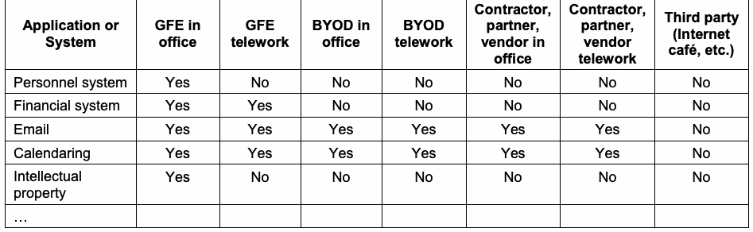
| アプリケーション又はシステム | オフィス内のGFE | テレワーク用GFE | オフィス内のBYOD | テレワーク用BYOD | オフィス内の請負業者、パートナー、ベンダー | テレワーク用の請負業者、パートナー、ベンダー | 第三者（インターネットカフェなど） |
| 人事システム | 許可 | 不可 | 不可 | 不可 | 不可 | 不可 | 不可 |
| 財務システム | 許可 | 許可 | 不可 | 不可 | 不可 | 不可 | 不可 |
| 電子メール | 許可 | 許可 | 許可 | 許可 | 許可 | 許可 | 不可 |
| カレンダー | 許可 | 許可 | 許可 | 許可 | 許可 | 許可 | 不可 |
| 知的財産 | 許可 | 不可 | 不可 | 不可 | 不可 | 不可 | 不可 |
| … |
Every year, there are many changes in telework device capabilities, the security controls available to organizations, the types of threats made to different types of devices, and so on. Therefore, organizations should periodically reassess their policies for telework devices and consider changing which types of client devices are permitted and what levels of access they may be granted. Organizations should also be aware of the emergence of new types of remote access solutions and of major changes to existing remote access technologies, and ensure that the organization’s policies are updated accordingly as needed.
毎年、テレワーク端末の機能、組織が利用できるセキュリティ管理策、各種類の端末を狙う脅威などは大きく変化する。そのため、組織はテレワーク端末に関するポリシーを定期的に再評価し、許可するクライアント端末の種類や付与するアクセスレベルの変更を検討するべきである。また、新しい種類のリモートアクセスソリューションの登場や既存技術の大幅な変更にも注意し、必要に応じて組織のポリシーを更新するべきである。
未レビュー訳5.1.3 Additional User Requirements
5.1.3 ユーザーに求める追加要件
Organizations often have additional security considerations for telework that, while helpful in mitigating threats, cannot be directly enforced by the organization. Organizations should educate users on the importance of these additional security measures and define teleworkers’ responsibilities for implementing these measures in policy and telework agreements.
組織は、脅威の緩和に役立つ一方で、直接適用を徹底できないテレワーク関連の追加のセキュリティ事項を考慮することが多い。組織は、こうした追加対策の重要性についてユーザーを教育し、対策を実施するテレワーカーの責任をポリシー及びテレワーク契約に定めるべきである。
One of the most important security considerations for telework is training users on how to detect and handle phishing attacks and other forms of social engineering involving their telework devices and remote access usage. Along with this, organizations should ensure that help is available for users at all times if they have questions or concerns regarding telework security, and organizations should ensure that users are aware of the existence of this help and how they can request help.
テレワークで特に重要なセキュリティ事項の一つは、テレワーク端末及びリモートアクセスの利用に関わるフィッシング攻撃その他のソーシャルエンジニアリングを検知し、対処する方法をユーザーに訓練することである。また、テレワークのセキュリティについてユーザーに疑問や懸念があるときは常に支援を受けられるようにし、その支援の存在及び利用申請の方法をユーザーに周知するべきである。
未レビュー訳Another possible security consideration is phone services. Depending on the sensitivity of telework communications, telephone security may be a consideration. Corded phones using traditional wired telephone networks cannot be intercepted without physical connections, so they are sufficiently secure for typical telework. Cordless phones using traditional wired telephone networks should employ spread spectrum technology to scramble transmissions, thus reducing the risk of eavesdropping within physical proximity (usually a few hundred yards at most). Digital cell phones should be acceptable for typical telework.39 Communications carried over voice over IP (VoIP) services should not be considered secure unless some form of encryption is used; however, many VoIP services now provide strong encryption, which should be used to protect sensitive information. Any encryption used must be certified to follow NIST requirements. The FIPS 140 specification, Security Requirements for Cryptographic Modules, defines how cryptographic modules are validated.
電話サービスもセキュリティ上の考慮事項となる場合がある。テレワーク通信の機微性によっては、電話のセキュリティを考慮する必要がある。有線の従来型電話網を使用するコード付き電話は、物理的に接続しなければ傍受できないため、一般的なテレワークには十分安全である。有線の従来型電話網を使用するコードレス電話では、送信をスクランブル化するスペクトラム拡散技術を使用して、物理的に近い場所（通常はせいぜい数百ヤード）からの盗聴リスクを低減するべきである。デジタル携帯電話は、一般的なテレワークには許容可能である。ボイスオーバーIP（VoIP）サービス経由の通信は、何らかの暗号化を使用しない限り安全と見なすべきではない。ただし、多くのVoIPサービスは現在強力な暗号化を提供しており、機微な情報を保護するために使用するべきである。使用する暗号化はすべて、NIST要件に適合していると認証されていなければならない。FIPS 140仕様であるSecurity Requirements for Cryptographic Modulesは、暗号モジュールの検証方法を定めている。
未レビュー訳Organizations may also need to consider the security of wireless personal area networks (WPAN), which are small-scale wireless networks that require no infrastructure to operate. Examples of WPAN technologies are using a wireless keyboard or mouse with a computer, printing wirelessly, synchronizing a smartphone with a computer, and allowing a wireless headset or earpiece to be used with a smartphone. The most commonly used type of WPAN technology is Bluetooth. For devices within proximity of threats, teleworkers should disable WPAN technologies when not in use to prevent misuse by unauthorized parties.
組織は無線パーソナルエリアネットワーク（WPAN）のセキュリティも検討する必要がある場合がある。WPANは、動作にインフラストラクチャを必要としない小規模な無線ネットワークである。WPAN技術の例として、無線キーボード又はマウスをコンピューターで使用すること、無線印刷、スマートフォンとコンピューターの同期、及びスマートフォンで無線ヘッドセットやイヤーピースを使用することが挙げられる。最も一般的なWPAN技術はBluetoothである。脅威に近接する場所で端末を使用する場合、未許可の者による悪用を防ぐため、テレワーカーは使用していないWPAN機能を無効にするべきである。
未レビュー訳Additional information on these security considerations is available from NIST SP 800-114 Revision 1, User’s Guide to Telework and Bring Your Own Device (BYOD) Security,40 and NIST SP 800-121 Revision 1, Guide to Bluetooth Security.41
これらのセキュリティ上の考慮事項については、NIST SP 800-114 Revision 1, User’s Guide to Telework and Bring Your Own Device (BYOD) Security,40及びNIST SP 800-121 Revision 1, Guide to Bluetooth Security.41を参照。
未レビュー訳5.2 Development
5.2 開発
Once the organization has established a telework security policy, identified telework and remote access needs, and completed other preparatory activities, the next step is to determine which types of telework or remote access technologies should be used and to design a solution to deploy. There are many considerations for designing a solution, most of which are generally applicable to any IT technology; some of these are covered in Section 2.1 of this document and NIST SP 800-53. This section focuses on the technical security considerations that are most important for designing telework and remote access solutions. Major considerations include the following:42
組織がテレワークセキュリティポリシーを策定し、テレワーク及びリモートアクセスのニーズを特定して、その他の準備作業を完了した後、次に、使用するテレワーク又はリモートアクセス技術の種類を決定し、導入するソリューションを設計する。ソリューションの設計では多くの事項を考慮する必要があり、その大半はあらゆるIT技術に一般的に当てはまる。本書の第2.1節及びNIST SP 800-53ではその一部を扱う。本節では、テレワーク及びリモートアクセスソリューションの設計で特に重要な技術的セキュリティ上の考慮事項に焦点を当てる。主な考慮事項は以下のとおりである。42
未レビュー訳 Architecture. Designing the architecture includes the placement of the remote access server, the selection of remote access client software (if needed), and the design of one or more organization network segments for non-organization-controlled client devices.
アーキテクチャ。設計には、リモートアクセスサーバーの配置、必要に応じたリモートアクセス用クライアントソフトウェアの選定、及び組織が管理していないクライアント端末向けの1つ以上の組織ネットワークセグメントの設計が含まれる。
未レビュー訳 Authentication. Authentication involves selecting a remote access authentication method, as described in Section 3, and determining how its client/user and server components should be implemented, including procedures for issuing and resetting authenticators and for provisioning users and client devices with authenticators.
認証。認証では、第3章で説明したリモートアクセス認証方式を選定し、クライアント／ユーザー側及びサーバー側のコンポーネントをどのように実装するかを決める。これには、認証器の発行及びリセットの手順、並びにユーザー及びクライアント端末への認証器のプロビジョニングが含まれる。
未レビュー訳 Cryptography. Decisions related to cryptography include selecting the algorithms for encryption and integrity protection of remote access communications, and setting the key strength for algorithms that support multiple key lengths.
暗号技術。暗号技術に関する判断には、リモートアクセス通信の暗号化及び完全性保護に使用するアルゴリズムの選定と、複数の鍵長をサポートするアルゴリズムの鍵強度の設定が含まれる。
未レビュー訳 Access Control. This involves determining which types of remote access communications should be permitted and denied. Section 3 provides additional information on access control capabilities.
アクセス制御。どの種類のリモートアクセス通信を許可し、どれを拒否するかを決定する。アクセス制御機能の詳細は第3章で説明する。
未レビュー訳 Endpoint Security. Endpoint security decisions involve determining how remote access servers and telework client devices should be secured, as described in Sections 3 and 4, respectively.
エンドポイントセキュリティ。第3章及び第4章で説明したように、リモートアクセスサーバー及びテレワーク用クライアント端末をどのように保護するかを決定する。
未レビュー訳The security aspects of the telework and remote access solution design should be documented in the system security plan. The organization should also consider how incidents involving the telework and remote access solutions should be handled and document those plans as well.43
テレワーク及びリモートアクセスソリューションの設計に関するセキュリティ事項は、システムセキュリティ計画に記載するべきである。また、テレワーク及びリモートアクセスソリューションに関係するインシデントへの対応方法も検討し、その計画を文書化するべきである。43
未レビュー訳5.3 Implementation
5.3 実装
After the remote access solution has been designed, the next step is to implement and test a prototype of the design before putting the solution into production. Aspects of the solution that should be evaluated include the following: 44
リモートアクセスソリューションの設計後は、本番環境に導入する前に設計のプロトタイプを実装し、テストする。評価するべき要素を以下に示す。44
未レビュー訳 Connectivity. Users can establish and maintain remote access connections. Users can connect to all of the resources that they are permitted to and cannot connect to any other resources.
接続性。ユーザーがリモートアクセス接続を確立し、維持できること。許可されたすべてのリソースには接続でき、それ以外のリソースには接続できないこと。
未レビュー訳 Protection. Each traffic flow is protected in accordance with the established requirements. This includes flows between the telework client device and the remote access server, and between the remote access server and internal resources. Protection should be verified by means such as monitoring network traffic or checking traffic logs.
保護。各トラフィックフローが定められた要件に従って保護されていること。これには、テレワーク用クライアント端末とリモートアクセスサーバーの間、及びリモートアクセスサーバーと内部リソースの間のフローが含まれる。ネットワークトラフィックの監視やトラフィックログの確認などによって保護を検証するべきである。
未レビュー訳 Authentication. Authentication is required and cannot be readily compromised or circumvented. All authentication policies are enforced. Performing robust testing of authentication is important to reduce the risk of attackers accessing protected internal resources.
認証。認証が必須であり、容易に侵害又は回避されないこと。すべての認証ポリシーが適用されていること。認証を十分にテストすることは、攻撃者が保護された内部リソースにアクセスするリスクを低減するうえで重要である。
未レビュー訳 Applications. The remote access solution does not interfere with the use of software applications that are permitted to be used through remote access, nor does it disrupt the operation of telework client devices (for example, a VPN client conflicting with a host-based firewall).
アプリケーション。リモートアクセスソリューションが、リモートアクセス経由での使用を許可されたソフトウェアアプリケーションの利用を妨げず、テレワーク用クライアント端末の動作も妨げないこと（例：VPNクライアントとホストベースのファイアウォールの競合）。
未レビュー訳 Management. Administrators can configure and manage the solution effectively and securely. This includes all components, including remote access servers, authentication services, and client software. The ease of deployment and configuration is particularly important, such as having fully automated client configuration versus administrators manually configuring each client. Another concern is the ability of users to alter remote access client settings, which could weaken remote access security. Automating configurations for devices can greatly reduce unintentional errors from users incorrectly configuring settings.
管理。管理者がソリューションを効果的かつ安全に構成・管理できること。リモートアクセスサーバー、認証サービス及びクライアントソフトウェアなど、すべてのコンポーネントが対象となる。クライアント構成を完全に自動化できるか、管理者が各クライアントを手動で構成する必要があるかなど、導入及び構成の容易さが特に重要である。また、ユーザーがリモートアクセス用クライアントの設定を変更してセキュリティを弱める可能性も考慮する。デバイスの構成を自動化すると、ユーザーの誤設定による意図しないエラーを大幅に減らせる。
未レビュー訳 Logging. The remote access solution logs security events in accordance with the organization’s policies. Some remote access solutions provide more granular logging capabilities than others—for example, logging usage of individual applications versus only connections to particular hosts—so in some cases it may be necessary to rely on the resources used through remote access to perform portions of the logging that the remote access server cannot perform.
ログ記録。リモートアクセスソリューションが組織のポリシーに従ってセキュリティイベントを記録すること。一部のソリューションは他より細かいログ記録が可能である。例えば、特定ホストへの接続だけでなく個々のアプリケーションの使用を記録できる場合がある。そのため、リモートアクセスサーバーが記録できない部分について、リモートアクセス経由で利用するリソース側のログに依存する必要があることもある。
未レビュー訳 Performance. The solution provides adequate performance during normal and peak usage. It is important to consider not only the performance of the primary remote access components, but also that of intermediate devices, such as routers and firewalls. Performance is particularly important when large software updates are being provided through the remote access solution to telework client devices. In many cases, the best way to test the performance under load of a prototype is to use simulated traffic generators on a live test network to mimic the actual characteristics of expected traffic as closely as possible. Testing should incorporate a variety of applications that will be used with remote access.
性能。通常時及びピーク時に、ソリューションが十分な性能を提供すること。主要なリモートアクセスコンポーネントだけでなく、ルーターやファイアウォールなどの中間デバイスの性能も考慮することが重要である。リモートアクセスソリューションを通じてテレワーク用クライアント端末に大規模なソフトウェア更新を配布する場合、性能は特に重要となる。多くの場合、負荷時のプロトタイプ性能をテストする最善の方法は、本番相当のテストネットワークで模擬トラフィック生成ツールを使い、想定されるトラフィックの実際の特性をできるだけ忠実に再現することである。テストには、リモートアクセスで使用するさまざまなアプリケーションを含めるべきである。
未レビュー訳 Security of the Implementation. The remote access implementation itself may contain vulnerabilities and weaknesses that attackers could exploit. Organizations with high security needs may choose to perform extensive vulnerability assessments against the remote access components. At a minimum, all components should be updated with the latest patches and configured following sound security practices.
実装のセキュリティ。リモートアクセスの実装自体に、攻撃者が悪用できる脆弱性や弱点が含まれる可能性がある。高いセキュリティを必要とする組織は、リモートアクセスコンポーネントに対して広範な脆弱性評価を行うことができる。最低限、すべてのコンポーネントに最新のパッチを適用し、適切なセキュリティプラクティスに従って構成するべきである。
未レビュー訳 Default Settings. Implementers should carefully review the default values for each remote access setting and alter the settings as necessary to support security requirements. Implementers should also ensure that the remote access solution does not unexpectedly “fall back” to default settings for interoperability or other reasons.
デフォルト設定。実装担当者は、各リモートアクセス設定のデフォルト値を慎重に確認し、セキュリティ要件を満たすよう必要に応じて変更するべきである。また、相互運用性その他の理由でリモートアクセスソリューションが予期せずデフォルト設定に「フォールバック」しないことも確認するべきである。
未レビュー訳5.4 Operations and Maintenance
5.4 運用及び保守
Operational processes that are particularly helpful for maintaining telework and remote access security, and thus should be performed regularly, include the following:45
テレワーク及びリモートアクセスのセキュリティ維持に特に有効であり、定期的に実施するべき運用プロセスを以下に示す。45
未レビュー訳 Checking for upgrades and patches to the remote access software components, and acquiring, testing, and deploying the updates
リモートアクセスソフトウェアのコンポーネントについて、アップグレード及びパッチを確認し、更新を取得、テスト及び導入する。
未レビュー訳 Ensuring that each remote access infrastructure component (servers, gateways, authentication servers, etc.) has its clock synched to a common time source so that its timestamps will match those generated by other systems
サーバー、ゲートウェイ、認証サーバーなど、リモートアクセス基盤の各コンポーネントの時計を共通の時刻源に同期し、そのタイムスタンプが他のシステムのタイムスタンプと一致するようにする。
未レビュー訳 Reconfiguring access control features as needed based on factors such as policy changes, technology changes, audit findings, and new security needs
ポリシー変更、技術変更、監査結果及び新たなセキュリティニーズなどに応じて、必要なアクセス制御機能を再構成する。
未レビュー訳 Detecting and documenting anomalies detected within the remote access infrastructure. Such anomalies might indicate malicious activity or deviations from policy and procedures. Anomalies should be reported to other systems’ administrators as appropriate.
リモートアクセス基盤内で検出された異常を発見し、記録する。異常は悪意ある活動又はポリシーや手順からの逸脱を示す可能性がある。必要に応じて、異常を他のシステムの管理者に報告するべきである。
未レビュー訳Organizations should also periodically perform assessments to confirm that the organization’s remote access policies, processes, and procedures are being followed properly. Assessment activities may be passive, such as reviewing logs, or active, such as performing vulnerability scans and penetration testing. More information on technical assessments for telework and remote access is available from NIST SP 800-115, Technical Guide to Information Security Testing and Assessment.46
組織は、リモートアクセスに関するポリシー、プロセス及び手順が適切に守られていることを確認するため、定期的に評価も実施するべきである。ログのレビューなど受動的な評価活動もあれば、脆弱性スキャンや侵入テストなど能動的な活動もある。テレワーク及びリモートアクセスの技術的評価については、NIST SP 800-115, Technical Guide to Information Security Testing and Assessmentを参照。46
未レビュー訳5.5 Disposal
5.5 廃棄
Before a telework client device or remote access server permanently leaves an organization (such as when a leased server’s lease expires or when an obsolete PC is being recycled), the organization should remove any sensitive data from the host. Data may also need to be wiped if an organization provides “loaner” devices to teleworkers, particularly for travel. The task of scrubbing all sensitive data from storage devices such as hard drives and memory cards is often surprisingly difficult because of all the places where such data resides. See NIST SP 800-88 Rev. 1, Guidelines for Media Sanitization,47 for additional information and recommendations on removing data from telework and remote access devices. Note that sensitive data is often found in places other than just the user’s data area; for example, software that runs under Microsoft Windows often stores possibly-sensitive data in the Windows registry. An organization should strongly consider erasing all storage devices completely.
テレワーク用クライアント端末又はリモートアクセスサーバーが組織から恒久的に離れる前（例：リースサーバーの契約期間満了時や、旧式PCのリサイクル時）に、組織はホストから機微なデータを削除するべきである。特に出張用としてテレワーカーに貸出用端末を提供する場合、特に出張用では、端末データの消去が必要となることもある。ハードドライブやメモリーカードなどのストレージデバイスからすべての機微なデータを消去する作業は、データが保存される場所が多いため、驚くほど難しいことがある。テレワーク端末及びリモートアクセスデバイスからデータを削除するための追加情報と推奨事項は、NIST SP 800-88 Rev. 1, Guidelines for Media Sanitization,47を参照。機微なデータはユーザーデータ領域以外にも保存されることが多い。例えば、Microsoft Windows上で動作するソフトウェアは、機微な可能性のあるデータをWindowsレジストリに保存することがある。組織はすべてのストレージデバイスを完全消去することを強く検討するべきである。
未レビュー訳Organizations may find it particularly challenging to address data wiping for BYOD devices. Because the devices are used for both personal and work purposes, it may be necessary to scrub the telework data without affecting the personal data. Selective data scrubbing can be performed through enterprise mobile device management software (for mobile devices) and specialized utilities. Organizations should carefully consider data scrubbing issues involving BYOD devices before authorizing BYOD use.
BYOD端末のデータ消去への対処は、特に難しい場合がある。端末を個人用と業務用の両方に使うため、個人データに影響を与えずテレワークデータだけを消去する必要があることもある。選択的なデータ消去は、企業向けモバイル端末管理ソフトウェア（モバイル端末の場合）や専用ユーティリティを使って実施できる。組織はBYODの使用を許可する前に、BYOD端末のデータ消去に関する問題を慎重に検討するべきである。
未レビュー訳Organizations may also have concerns about data wiping on third-party-controlled client devices. Similar to the situation with BYOD devices, an organization may want to scrub its data from these devices without disrupting the controlling organizations’ data. Selective data scrubbing by the organization may be an option, or it may be more practical to have the controlling organization do its own scrubbing for the data in question.
組織は、第三者管理のクライアント端末のデータ消去についても懸念する場合がある。BYOD端末の場合と同様に、管理する組織のデータに影響を与えずに、自組織のデータだけをこれらの端末から消去したい場合がある。組織による選択的なデータ消去も選択肢となるが、対象データの消去を端末の管理組織自身に実施してもらう方が現実的なこともある。
未レビュー訳5.6 Summary of Key Recommendations
5.6 主な推奨事項の概要
The following list presents some of the key recommendations from this section of the document.
以下に、本書のこの節で示した主な推奨事項を挙げる。
A telework security policy should define which forms of remote access the organization permits, which types of telework devices are permitted to use each form of remote access, the type of access each type of teleworker is granted, and how user account provisioning should be handled. It should also cover how the organization's remote access servers are administered and how policies in those servers are updated. The telework security policy should be documented in the system security plan. (Section 5.1)
テレワークセキュリティポリシーでは、組織が許可するリモートアクセスの形態、各形態のリモートアクセスを利用できるテレワーク端末の種類、各種類のテレワーカーに付与するアクセスの種類、及びユーザーアカウントのプロビジョニング方法を定めるべきである。また、組織のリモートアクセスサーバーをどのように管理するか、及びサーバー上のポリシーをどのように更新するかも規定するべきである。テレワークセキュリティポリシーはシステムセキュリティ計画に記載するべきである。（第5.1節）
未レビュー訳 Each organization should make its own risk-based decisions about what levels of remote access should be permitted from which types of telework client devices. (Section 5.1)
各組織は、どの種類のテレワーク用クライアント端末からどのレベルのリモートアクセスを許可するかについて、リスクに基づいて独自に判断するべきである。（第5.1節）
未レビュー訳 Organizations should periodically reassess their policies for telework devices and consider changing which types of client devices are permitted and what levels of access they may be granted. (Section 5.1)
組織はテレワーク端末に関するポリシーを定期的に再評価し、許可するクライアント端末の種類や付与するアクセスレベルの変更を検討するべきである。（第5.1節）
未レビュー訳 Organizations should document the security aspects of the telework and remote access solution design in the system security plan. (Section 5.2)
組織は、テレワーク及びリモートアクセスソリューションの設計に関するセキュリティ事項をシステムセキュリティ計画に記載するべきである。（第5.2節）
未レビュー訳 Before putting a remote access solution into production, an organization should implement and test a prototype of the design and evaluate it, including its connectivity, traffic protection, authentication, management, logging, performance, implementation security, and interference with applications. (Section 5.3)
リモートアクセスソリューションを本番環境に導入する前に、組織は設計のプロトタイプを実装してテストし、接続性、トラフィック保護、認証、管理、ログ記録、性能、実装のセキュリティ、及びアプリケーションとの干渉などを評価するべきである。（第5.3節）
未レビュー訳 Organizations should regularly perform operational processes to maintain telework and remote access security, such as deploying updates, verifying clock synchronization, reconfiguring access control features as needed, and detecting and documenting anomalies within the remote access infrastructure. (Section 5.4)
組織は、更新の導入、時刻同期の検証、必要に応じたアクセス制御機能の再構成、リモートアクセス基盤内の異常の検知及び記録など、テレワーク及びリモートアクセスのセキュリティを維持する運用プロセスを定期的に実施するべきである。（第5.4節）
未レビュー訳 Organizations should also periodically perform assessments to confirm that the organization’s remote access policies, processes, and procedures are being followed properly. (Section 5.4)
組織は、リモートアクセスに関するポリシー、プロセス及び手順が適切に守られていることを確認するため、定期的に評価を実施するべきである。（第5.4節）
未レビュー訳 Before disposing of a telework client device or remote access server, the organization should remove any sensitive data from it. (Section 5.5)
テレワーク用クライアント端末又はリモートアクセスサーバーを廃棄する前に、組織はそこから機微なデータを削除するべきである。（第5.5節）
未レビュー訳Appendix A—NIST SP 800-53 Control Mappings
付録A—NIST SP 800-53管理策との対応
未レビュー訳This appendix lists the NIST SP 800-53 Revision 4 security controls that are most pertinent for securing enterprise telework, remote access, and BYOD technologies. Next to each control is an explanation of its implications particular to enterprise telework, remote access, and BYOD security.
本付録では、企業のテレワーク、リモートアクセス及びBYOD技術の保護に特に関係するNIST SP 800-53 Revision 4のセキュリティ管理策を列挙する。各管理策の隣には、企業のテレワーク、リモートアクセス及びBYODのセキュリティに特有の影響を説明する。
| NIST SP 800-53 Control | Telework/Remote Access/BYOD Implications |
| AC-2, Account Management | This control involves managing single-factor or multi-factor authentication for remote access users, such as passwords, digital certificates, and/or hardware authentication tokens. |
| AC-17, Remote Access | This entire control is dedicated to documenting remote access requirements, authorizing remote access prior to allowing connections, monitoring and controlling remote access, encrypting remote access connections, etc. |
| AC-19, Access Control for Mobile Devices | This control includes requirements for organization-controlled mobile devices and authorization to connect mobile devices to organizational systems, such as through remote access. |
| AC-20, Use of External Information Systems | This control involves the use of external information systems, such as personally owned client devices (BYOD) and third-party-controlled client devices, that may process, store, or transmit organization-controlled data on behalf of the organization. |
| CA-9, Internal System Connections | This involves connections between a system and system components, including mobile devices and laptops. |
| CP-9, Information System Backup | Telework devices need to have their data backed up either locally or remotely. |
| IA-2, Identification and Authentication (Organizational Users) | This control involves using single-factor or multi-factor authentication for remote access users, such as passwords, digital certificates, and/or hardware authentication tokens. |
| IA-3, Device Identification and Authentication | Mutual authentication is recommended whenever feasible to verify the legitimacy of a remote access server before providing authentication credentials to it. |
| IA-11, Re-Authentication | Many organizations require teleworkers to reauthenticate periodically during long remote access sessions, such as after each eight hours of a session or after 30 minutes of idle time. This helps organizations confirm that the person using remote access is authorized to do so. |
| RA-3, Risk Assessment | A risk assessment should be performed as part of selecting a remote access method (tunneling, application portals, remote desktop access, direct application access). |
| SC-7, Boundary Protection | This control involves segmenting a network (e.g., using subnetworks) to keep publicly accessible components off internal networks, and monitoring and controlling communications at key boundary points. |
| SC-8, Transmission Confidentiality and Integrity | The various remote access methods discussed in this publication protect the confidentiality and integrity of transmissions through use of cryptography. |
原本PDFの抜粋画像
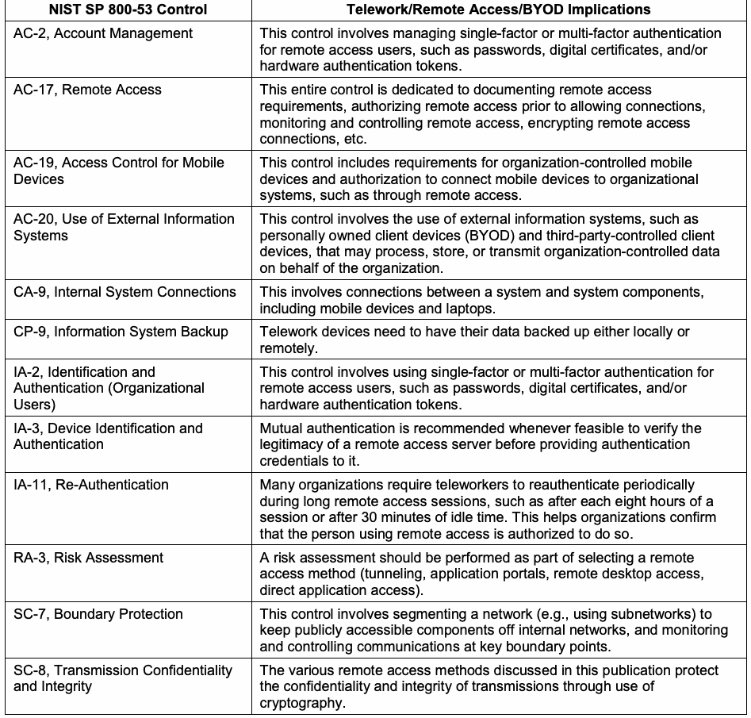
| NIST SP 800-53管理策 | テレワーク／リモートアクセス／BYODへの影響 |
| AC-2, アカウント管理 | この管理策は、パスワード、デジタル証明書、及び／又はハードウェア認証トークンなど、リモートアクセスユーザーに対する単要素認証又は多要素認証の管理に関する。 |
| AC-17, リモートアクセス | この管理策全体が、リモートアクセス要件の文書化、接続を許可する前のリモートアクセスの承認、リモートアクセスの監視及び制御、リモートアクセス接続の暗号化などを扱う。 |
| AC-19, モバイル端末のアクセス制御 | この管理策には、組織管理のモバイル端末に関する要件や、リモートアクセスなどを通じてモバイル端末を組織のシステムに接続するための認可が含まれる。 |
| AC-20, 外部情報システムの使用 | この管理策は、個人所有のクライアント端末（BYOD）や第三者管理のクライアント端末など、組織に代わって組織管理データを処理、保存又は伝送する可能性がある外部情報システムの使用に関する。 |
| CA-9, 内部システム接続 | システムと、モバイル端末やノートPCなどのシステムコンポーネントとの接続を扱う。 |
| CP-9, 情報システムのバックアップ | テレワーク端末上のデータは、ローカル又はリモートのいずれかにバックアップする必要がある。 |
| IA-2, 識別及び認証（組織のユーザー） | この管理策は、パスワード、デジタル証明書、及び／又はハードウェア認証トークンなど、リモートアクセスユーザーに対する単要素認証又は多要素認証の使用に関する。 |
| IA-3, デバイスの識別及び認証 | 可能な場合は常に相互認証を行い、認証情報を提示する前にリモートアクセスサーバーの正当性を確認することが推奨される。 |
| IA-11, 再認証 | 多くの組織は、長時間のリモートアクセスセッション中に、例えばセッション開始から8時間ごと、又は30分間操作がない場合など、テレワーカーに定期的な再認証を求める。これにより、リモートアクセスを利用している者がその利用を許可されていることを組織が確認できる。 |
| RA-3, リスク評価 | リモートアクセス方式（トンネリング、アプリケーションポータル、リモートデスクトップアクセス、アプリケーションへの直接アクセス）を選択する際にリスク評価を実施するべきである。 |
| SC-7, 境界保護 | この管理策は、公開アクセス可能なコンポーネントを内部ネットワークから隔離するネットワーク分割（例：サブネットワークの使用）、及び主要な境界点での通信の監視と制御に関する。 |
| SC-8, 伝送の機密性及び完全性 | 本書で説明するさまざまなリモートアクセス方式は、暗号技術を用いて伝送の機密性及び完全性を保護する。 |
Appendix B—Cybersecurity Framework Subcategory Mapping
付録B—サイバーセキュリティフレームワークのサブカテゴリーとの対応
未レビュー訳This appendix lists the Cybersecurity Framework48 subcategories that are most pertinent for securing enterprise telework, remote access, and BYOD technologies. Next to each subcategory is an explanation of its implications particular to enterprise telework, remote access, and BYOD security.
本付録では、企業のテレワーク、リモートアクセス及びBYOD技術の保護に特に関係するサイバーセキュリティフレームワーク48のサブカテゴリーを列挙する。各サブカテゴリーの隣には、企業のテレワーク、リモートアクセス及びBYODのセキュリティに特有の影響を説明する。
未レビュー訳| Cybersecurity Framework Subcategory | Telework/Remote Access/BYOD Implications |
| ID.GV-1: Organizational information security policy is established | An organization should have a telework security policy. |
| ID.RA-5: Threats, vulnerabilities, likelihoods, and impacts are used to determine risk | A risk assessment should be performed as part of selecting a remote access method (tunneling, application portals, remote desktop access, direct application access). |
| PR.AC-1: Identities and credentials are managed for authorized devices and users | This control involves using single-factor or multi-factor authentication for remote access users, such as passwords, digital certificates, and/or hardware authentication tokens. Also, mutual authentication is recommended whenever feasible to verify the legitimacy of a remote access server before providing user authentication credentials to it. |
| PR.AC-3: Remote access is managed | An organization should formally manage all remote access processes and technologies. |
| PR.AC-5: Network integrity is protected, incorporating network segregation where appropriate | This involves segmenting a network (e.g., using subnetworks) to keep publicly accessible components off internal networks, and monitoring and controlling communications at key boundary points. |
| PR.DS-2: Data-in-transit is protected | The various remote access methods discussed in this publication protect the confidentiality and integrity of transmissions through use of cryptography. |
| PR.IP-4: Backups of information are conducted, maintained, and tested periodically | Telework devices need to have their data backed up either locally or remotely. |
原本PDFの抜粋画像
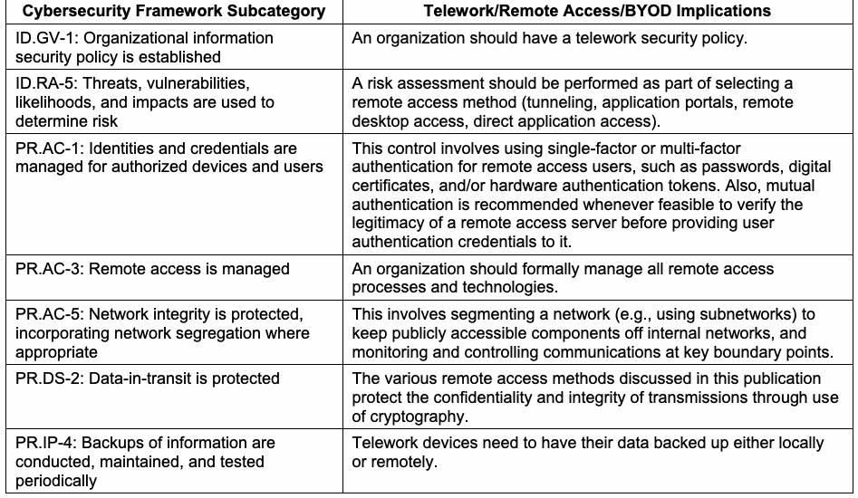
| サイバーセキュリティフレームワークのサブカテゴリー | テレワーク／リモートアクセス／BYODへの影響 |
| ID.GV-1: 組織の情報セキュリティポリシーが確立されている | 組織はテレワークセキュリティポリシーを定めるべきである。 |
| ID.RA-5: 脅威、脆弱性、発生可能性及び影響をリスク判断に用いる | リモートアクセス方式（トンネリング、アプリケーションポータル、リモートデスクトップアクセス、アプリケーションへの直接アクセス）を選択する際にリスク評価を実施するべきである。 |
| PR.AC-1: 承認されたデバイス及びユーザーのIDと認証情報を管理する | この管理策は、パスワード、デジタル証明書、及び／又はハードウェア認証トークンなど、リモートアクセスユーザーに対する単要素認証又は多要素認証の使用に関する。また、可能な場合は常に相互認証を行い、ユーザー認証情報を提示する前にリモートアクセスサーバーの正当性を確認することが推奨される。 |
| PR.AC-3: リモートアクセスを管理する | 組織はすべてのリモートアクセスプロセス及び技術を正式に管理するべきである。 |
| PR.AC-5: 適切な場合はネットワーク分割を取り入れ、ネットワークの完全性を保護する | 公開アクセス可能なコンポーネントを内部ネットワークから隔離するネットワーク分割（例：サブネットワークの使用）、及び主要な境界点での通信の監視と制御を扱う。 |
| PR.DS-2: 転送中のデータを保護する | 本書で説明するさまざまなリモートアクセス方式は、暗号技術を用いて伝送の機密性及び完全性を保護する。 |
| PR.IP-4: 情報のバックアップを定期的に実施、維持及びテストする | テレワーク端末上のデータは、ローカル又はリモートのいずれかにバックアップする必要がある。 |
Appendix C—Glossary
付録C—用語集
未レビュー訳Selected terms used in the publication are defined below.
本出版物で使用する主な用語を以下に定義する。
Bring Your Own Device (BYOD): A non-organization-controlled telework client device.
個人所有端末の持ち込み（BYOD）：組織が管理していないテレワーク用クライアント端末。
Client Device: A system used by a remote worker to access an organization’s network and the systems on that network.
クライアント端末：リモートワーカーが組織のネットワークおよびそのネットワーク上のシステムにアクセスするために使用するシステム。
Direct Application Access: A high-level remote access architecture that allows teleworkers to access an individual application directly, without using remote access software.
アプリケーションへの直接アクセス：テレワーカーがリモートアクセスソフトウェアを使用せずに、個々のアプリケーションへ直接アクセスできる高水準のリモートアクセスアーキテクチャ。
Mobile Device: A small mobile computer such as a smartphone or tablet.
モバイル端末：スマートフォンやタブレットなどの小型モバイルコンピューター。
未レビュー訳Personal Computer: A desktop or laptop computer.
パーソナルコンピューター：デスクトップコンピューターまたはノートブックコンピューター。
Portal: A high-level remote access architecture that is based on a server that offers teleworkers access to one or more applications through a single centralized interface.
ポータル：テレワーカーが単一の集中化されたインターフェースを通じて1つ以上のアプリケーションにアクセスできるようにするサーバーを基盤とした、高水準のリモートアクセスアーキテクチャ。
Remote Access: The ability for an organization’s users to access its non-public computing resources from external locations other than the organization’s facilities.
リモートアクセス：組織のユーザーが、組織の施設以外の外部の場所から、組織の非公開コンピューティングリソースにアクセスする能力。
Remote Desktop Access: A high-level remote access architecture that gives a teleworker the ability to remotely control a particular desktop computer at the organization, most often the user’s own computer at the organization’s office, from a telework client device.
リモートデスクトップアクセス：テレワーク用クライアント端末から、組織内の特定のデスクトップコンピューター（多くの場合、組織のオフィスにあるユーザー自身のコンピューター）を遠隔操作できるようにする高水準のリモートアクセスアーキテクチャ。
Session Locking: A feature that permits a user to lock a session upon demand or locks the session after it has been idle for a preset period of time.
セッションロック：ユーザーが要求に応じてセッションをロックできる、または所定の時間アイドル状態が続いた後にセッションをロックする機能。
未レビュー訳Split Tunneling: A VPN client feature that tunnels all communications involving the organization’s internal resources through the VPN, thus protecting them, and excludes all other communications from going through the tunnel.
スプリットトンネリング：組織の内部リソースに関係するすべての通信をVPN経由でトンネル化して保護し、それ以外のすべての通信はトンネルを通過させないVPNクライアント機能。
Telecommuting: See Telework.
テレコミューティング：テレワークを参照。
Telework: The ability for an organization’s employees, contractors, business partners, vendors, and other users to perform work from locations other than the organization’s facilities.
テレワーク：組織の従業員、請負業者、ビジネスパートナー、ベンダーおよびその他のユーザーが、組織の施設以外の場所で業務を行う能力。
Telework Client Device: A PC or mobile device used by a teleworker for performing telework.
テレワーク用クライアント端末：テレワーカーがテレワークを行うために使用するPCまたはモバイル端末。
Tunneling: A high-level remote access architecture that provides a secure tunnel between a telework client device and a tunneling server through which application traffic may pass.
トンネリング：テレワーク用クライアント端末とトンネリングサーバーとの間にセキュアなトンネルを提供し、そのトンネルを通じてアプリケーションのトラフィックを通過させることができる高水準のリモートアクセスアーキテクチャ。
未レビュー訳Virtual Private Network (VPN): A virtual network, built on top of existing physical networks, that provides a secure communications tunnel for data and other information transmitted between networks.
仮想プライベートネットワーク（VPN）：既存の物理ネットワーク上に構築された仮想ネットワークであり、ネットワーク間で送信されるデータその他の情報のためにセキュアな通信トンネルを提供する。
Appendix D—Acronyms and Abbreviations
付録D—頭字語及び略語
未レビュー訳Selected acronyms and abbreviations used in this publication are defined below.
この刊行物で使用されている主な頭字語および略語を以下に定義する。
Bring Your Own Device
個人所有端末の持ち込み
未レビュー訳BYOD
BYOD
未レビュー訳Demilitarized Zone
非武装地帯
未レビュー訳DMZ
DMZ
未レビュー訳Domain Name System
ドメインネームシステム
未レビュー訳DNS
DNS
未レビュー訳Digital Subscriber Line
デジタル加入者線
未レビュー訳DSL
DSL
未レビュー訳Federal Information Processing Standard
連邦情報処理規格
未レビュー訳FIPS
FIPS
未レビュー訳Federal Information Security Management Act
連邦情報セキュリティ管理法
未レビュー訳FISMA
FISMA
未レビュー訳Hypertext Transfer Protocol
ハイパーテキスト転送プロトコル
未レビュー訳HTTP
HTTP
未レビュー訳Hypertext Transfer Protocol over TLS
TLS上のハイパーテキスト転送プロトコル
未レビュー訳HTTPS
HTTPS
未レビュー訳Internet Protocol
インターネットプロトコル
未レビュー訳IP
未レビュー訳Internet Protocol Security
インターネットプロトコルセキュリティ
未レビュー訳IPsec
IPsec
未レビュー訳Internet Service Provider
インターネットサービスプロバイダー
未レビュー訳ISP
ISP
未レビュー訳Information Technology
情報技術
未レビュー訳IT
未レビュー訳Information Technology Laboratory
情報技術研究所
未レビュー訳ITL
ITL
未レビュー訳Mobile Device Management
モバイルデバイス管理
未レビュー訳MDM
MDM
未レビュー訳Man-in-the-Middle
中間者
未レビュー訳MITM
MITM
未レビュー訳Multiprotocol Label Switching
マルチプロトコルラベルスイッチング
未レビュー訳MPLS
MPLS
未レビュー訳Network Access Control
ネットワークアクセス制御
未レビュー訳NAC
NAC
未レビュー訳Network Address Translation
ネットワークアドレス変換
未レビュー訳NAT
NAT
未レビュー訳National Institute of Standards and Technology
米国国立標準技術研究所
未レビュー訳NIST
NIST
未レビュー訳Office of Management and Budget
行政管理予算局
未レビュー訳OMB
OMB
未レビュー訳Operating System
オペレーティングシステム
未レビュー訳OS
未レビュー訳Personal Computer
パーソナルコンピューター
未レビュー訳PC
未レビュー訳Personally Identifiable Information
個人を特定できる情報
未レビュー訳PII
PII
未レビュー訳Point-to-Point Protocol
ポイントツーポイントプロトコル
未レビュー訳PPP
PPP
未レビュー訳Remote Desktop Protocol
リモートデスクトッププロトコル
未レビュー訳RDP
RDP
未レビュー訳Special Publication
特別刊行物
未レビュー訳SP
未レビュー訳Secure Shell
セキュアシェル
未レビュー訳SSH
SSH
未レビュー訳Secure Sockets Layer
セキュアソケットレイヤー
未レビュー訳SSL
SSL
未レビュー訳Transport Layer Security
トランスポート層セキュリティ
未レビュー訳TLS
TLS
未レビュー訳Uniform Resource Locator
ユニフォームリソースロケーター
未レビュー訳URL
URL
未レビュー訳Virtual Desktop Infrastructure
仮想デスクトップインフラストラクチャ
未レビュー訳VDI
VDI
未レビュー訳Virtual Machine
仮想マシン
未レビュー訳VM
未レビュー訳Virtual Mobile Infrastructure
仮想モバイルインフラストラクチャ
未レビュー訳VMI
VMI
未レビュー訳Virtual Network Computing
仮想ネットワークコンピューティング
未レビュー訳VNC
VNC
未レビュー訳Voice over Internet Protocol
音声インターネットプロトコル
未レビュー訳VoIP
VoIP
未レビュー訳Virtual Private Network
仮想プライベートネットワーク
未レビュー訳VPN
VPN
未レビュー訳Wireless Personal Area Network
無線パーソナルエリアネットワーク
未レビュー訳WPAN
WPAN
未レビュー訳Appendix E—Resources
付録E—参考資料
未レビュー訳The lists below provide examples of resources that may be helpful in better understanding telework and remote access security. The NIST Special Publications identified below, along with many others, can also be accessed via http://csrc.nist.gov/publications/PubsSPs.html.
以下の一覧は、テレワークおよびリモートアクセスのセキュリティをより深く理解するうえで役立つ可能性のある資料の例を示す。以下に挙げるNIST特別刊行物は、その他多数の刊行物とともに、http://csrc.nist.gov/publications/PubsSPs.html からも入手できる。
Telework Security Resource Sites
テレワークセキュリティに関するリソースサイト
未レビュー訳| Site Name | URL |
| Home Network Security | https://www.us-cert.gov/security-publications/home-network-security |
| Safety & Security Center | http://www.microsoft.com/security/default.aspx |
| StaySafeOnline.org | http://www.staysafeonline.org/ |
| telework.gov | http://www.telework.gov/ |
原本PDFの抜粋画像
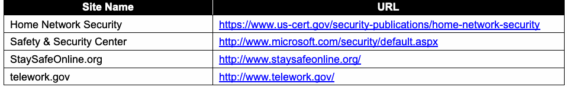
| サイト名 | URL |
| ホームネットワークのセキュリティ | https://www.us-cert.gov/security-publications/home-network-security |
| 安全性とセキュリティ センター | http://www.microsoft.com/security/default.aspx |
| StaySafeOnline.org | http://www.staysafeonline.org/ |
| telework.gov | http://www.telework.gov/ |
Telework Security-Related Documents
テレワークセキュリティ関連文書
未レビュー訳| Document Title | URL |
| Bring Your Own Device: A Toolkit to Support Federal Agencies Implementing Bring Your Own Device (BYOD) Programs | https://www.whitehouse.gov/digitalgov/bring-your-own- device |
| Guide to Telework in the Federal Government | http://www.telework.gov/guidance_and_legislation/telewo rk_guide/telework_guide.pdf |
| NIST SP 800-48 Revision 1, Guide to Securing Legacy IEEE 802.11 Wireless Networks | http://dx.doi.org/10.6028/NIST.SP.800-48r1 |
| NIST SP 800-52 Revision 1, Guidelines for the Selection, Configuration, and Use of Transport Layer Security (TLS) Implementations | http://dx.doi.org/10.6028/NIST.SP.800-52r1 |
| NIST SP 800-53 Revision 4, Security and Privacy Controls for Federal Information Systems and Organizations | http://dx.doi.org/10.6028/NIST.SP.800-53r4 |
| NIST SP 800-55 Revision 1, Performance Measurement Guide for Information Security | http://dx.doi.org/10.6028/NIST.SP.800-55r1 |
| NIST SP 800-63-2, Electronic Authentication Guideline | http://dx.doi.org/10.6028/NIST.SP.800-63-2 |
| NIST SP 800-77, Guide to IPsec VPNs | http://dx.doi.org/10.6028/NIST.SP.800-77 |
| NIST SP 800-83 Revision 1, Guide to Malware Incident Prevention and Handling for Desktops and Laptops | http://dx.doi.org/10.6028/NIST.SP.800-83r1 |
| NIST SP 800-88 Revision 1, Guidelines for Media Sanitization | http://dx.doi.org/10.6028/NIST.SP.800-88r1 |
| NIST SP 800-97, Establishing Wireless Robust Security Networks: A Guide to IEEE 802.11i | http://dx.doi.org/10.6028/NIST.SP.800-97 |
| NIST SP 800-111, Guide to Storage Encryption Technologies for End User Devices | http://dx.doi.org/10.6028/NIST.SP.800-111 |
| NIST SP 800-113, Guide to SSL VPNs | http://dx.doi.org/10.6028/NIST.SP.800-113 |
| NIST SP 800-114 Revision 1, User’s Guide to Telework and Bring Your Own Device (BYOD) Security | http://dx.doi.org/10.6028/NIST.SP.800-114r1 |
| NIST SP 800-115, Technical Guide to Information Security Testing and Assessment | http://dx.doi.org/10.6028/NIST.SP.800-115 |
原本PDFの抜粋画像
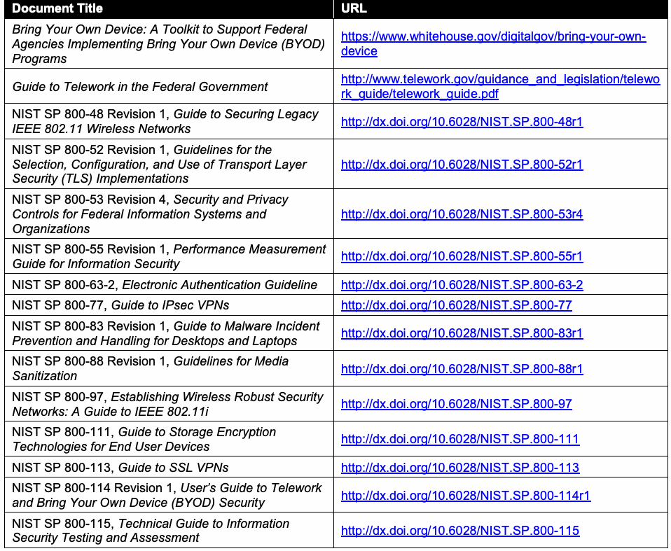
| 文書名 | URL |
| 個人所有端末の持ち込み：連邦機関によるBYODプログラムの実施を支援するツールキット | https://www.whitehouse.gov/digitalgov/bring-your-own- device |
| 連邦政府におけるテレワークの手引き | http://www.telework.gov/guidance_and_legislation/telewo rk_guide/telework_guide.pdf |
| NIST SP 800-48 改訂1、旧式IEEE 802.11無線ネットワークのセキュリティ確保の手引き | http://dx.doi.org/10.6028/NIST.SP.800-48r1 |
| NIST SP 800-52 改訂1、トランスポート層セキュリティ（TLS）実装の選択、設定および使用に関するガイドライン | http://dx.doi.org/10.6028/NIST.SP.800-52r1 |
| NIST SP 800-53 改訂4、連邦情報システムおよび組織のセキュリティとプライバシー管理策 | http://dx.doi.org/10.6028/NIST.SP.800-53r4 |
| NIST SP 800-55 改訂1、情報セキュリティのパフォーマンス測定ガイド | http://dx.doi.org/10.6028/NIST.SP.800-55r1 |
| NIST SP 800-63-2、電子認証ガイドライン | http://dx.doi.org/10.6028/NIST.SP.800-63-2 |
| NIST SP 800-77、IPsec VPNの手引き | http://dx.doi.org/10.6028/NIST.SP.800-77 |
| NIST SP 800-83 改訂1、デスクトップおよびノートブック向けマルウェアインシデントの防止と対応の手引き | http://dx.doi.org/10.6028/NIST.SP.800-83r1 |
| NIST SP 800-88 改訂1、媒体のサニタイズに関するガイドライン | http://dx.doi.org/10.6028/NIST.SP.800-88r1 |
| NIST SP 800-97、堅牢な無線セキュリティネットワークの構築：IEEE 802.11iの手引き | http://dx.doi.org/10.6028/NIST.SP.800-97 |
| NIST SP 800-111、エンドユーザーデバイス向けストレージ暗号化技術の手引き | http://dx.doi.org/10.6028/NIST.SP.800-111 |
| NIST SP 800-113、SSL VPNの手引き | http://dx.doi.org/10.6028/NIST.SP.800-113 |
| NIST SP 800-114 改訂1、テレワークおよび個人所有端末の持ち込み（BYOD）のセキュリティに関するユーザーガイド | http://dx.doi.org/10.6028/NIST.SP.800-114r1 |
| NIST SP 800-115、情報セキュリティのテストおよび評価に関する技術ガイド | http://dx.doi.org/10.6028/NIST.SP.800-115 |
| Document Title | URL |
| NIST SP 800-118 (Draft), Guide to Enterprise Password Management | http://csrc.nist.gov/publications/PubsSPs.html#800-118 |
| NIST SP 800-121 Revision 1, Guide to Bluetooth Security | http://dx.doi.org/10.6028/NIST.SP.800-121r1 |
| NIST SP 800-122, Guide to Protecting the Confidentiality of Personally Identifiable Information (PII) | http://dx.doi.org/10.6028/NIST.SP.800-122 |
| NIST SP 800-123, Guide to General Server Security | http://dx.doi.org/10.6028/NIST.SP.800-123 |
| NIST SP 800-124 Revision 1, Guidelines for Managing the Security of Mobile Devices in the Enterprise | http://dx.doi.org/10.6028/NIST.SP.800-124r1 |
| NIST SP 800-125, Guide to Security for Full Virtualization Technologies | http://dx.doi.org/10.6028/NIST.SP.800-125 |
| NIST SP 800-147, BIOS Protection Guidelines | http://dx.doi.org/10.6028/NIST.SP.800-147 |
| NIST SP 800-153, Guidelines for Securing Wireless Local Area Networks (WLANs) | http://dx.doi.org/10.6028/NIST.SP.800-153 |
| NIST SP 800-163, Vetting the Security of Mobile Applications | http://dx.doi.org/10.6028/NIST.SP.800-163 |
| NIST SP 800-167, Guide to Application Whitelisting | http://dx.doi.org/10.6028/NIST.SP.800-167 |
| OMB Memorandum M-11-27, Implementing the Telework Enhancement Act of 2010: Security Guidelines | http://www.whitehouse.gov/sites/default/files/omb/memor anda/2011/m11-27.pdf |
原本PDFの抜粋画像
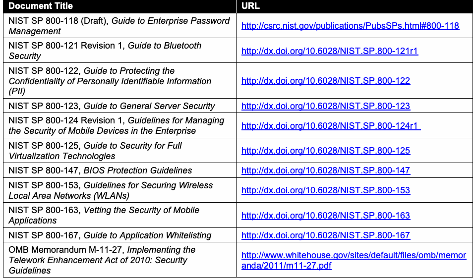
| 文書名 | URL |
| NIST SP 800-118（草案）、エンタープライズパスワード管理の手引き | http://csrc.nist.gov/publications/PubsSPs.html#800-118 |
| NIST SP 800-121 改訂1、Bluetoothセキュリティの手引き | http://dx.doi.org/10.6028/NIST.SP.800-121r1 |
| NIST SP 800-122、個人を特定できる情報（PII）の機密性を保護するための手引き | http://dx.doi.org/10.6028/NIST.SP.800-122 |
| NIST SP 800-123、一般的なサーバーセキュリティの手引き | http://dx.doi.org/10.6028/NIST.SP.800-123 |
| NIST SP 800-124 改訂1、企業におけるモバイルデバイスのセキュリティ管理ガイドライン | http://dx.doi.org/10.6028/NIST.SP.800-124r1 |
| NIST SP 800-125、完全仮想化技術のセキュリティに関する手引き | http://dx.doi.org/10.6028/NIST.SP.800-125 |
| NIST SP 800-147、BIOS保護ガイドライン | http://dx.doi.org/10.6028/NIST.SP.800-147 |
| NIST SP 800-153、無線LAN（WLAN）のセキュリティ確保に関するガイドライン | http://dx.doi.org/10.6028/NIST.SP.800-153 |
| NIST SP 800-163、モバイルアプリケーションのセキュリティ審査 | http://dx.doi.org/10.6028/NIST.SP.800-163 |
| NIST SP 800-167、アプリケーションのホワイトリスト化に関する手引き | http://dx.doi.org/10.6028/NIST.SP.800-167 |
| OMB覚書M-11-27、2010年テレワーク強化法の実施：セキュリティガイドライン | http://www.whitehouse.gov/sites/default/files/omb/memor anda/2011/m11-27.pdf |